Manual Book Visual Bio-Chain
Panduan penggunaan bergambar: Petani / Penggilingan → Pengepul → Driver → Pabrik → sirkular abu & biochar.
Dibangun 19-10-2026 · seluruh gambar adalah tangkapan layar asli aplikasi dengan anotasi ①②③.
Bab 1 — Ekosistem Sirkular Bio-Chain & Tata Kelola Standar Internasional
Bio-Chain adalah aplikasi web (PWA, bisa dipasang di ponsel dan tetap mencatat saat sinyal hilang) yang menghubungkan petani/penggilingan padi → pengepul → armada truk → pabrik pengolahan, lalu mengembalikan abu dan biochar ke sawah petani. Bab ini memberi gambaran utuh: siapa melakukan apa, di mana data dicatat, dan aturan yang dipakai sistem untuk keamanan, ketertelusuran, harga, dan rute.
1.1 Diagram Arsitektur Sirkular
Diagram di bawah meringkas alur fisik barang (panah tebal) dan titik-titik pencatatan digital.
Simbol 🔳 QR/Custody menandai tempat kode dipindai atau serah-terima dicatat; simbol 💰 Bayar
menandai tempat uang berpindah tangan. Referensi lengkap (±150 simpul) ada di berkas
GLOBAL_BIOCHAIN_FLOW.mmd di akar repositori.
flowchart TB
subgraph P["🌾 Petani / Penggilingan"]
P1["Lapor stok biomassa<br/>jenis, kg, taksiran kadar air"]
P2["🔳 QR lot BIO-xxxxxxxx-xxxxxx<br/>terbit otomatis"]
P9["Terima abu / biochar<br/>untuk lahan sawah"]
end
subgraph C["⚖️ Pengepul / Gudang"]
C1["Uji Cepat lapangan<br/>timbang + kadar air + kontaminan"]
C2["🔳 Resi TRX-PTN-PGP-YYMM-urut<br/>serah-terima petani → pengepul"]
C3["💰 Bayar petani<br/>DP / lunas, batas 3 hari"]
C4["Gudang & ajukan kirim ke pabrik"]
end
subgraph D["🚚 Driver / Armada"]
D1["Rute Clarke-Wright / OR-Tools<br/>kapasitas kg dan m³ bak"]
D2["🔳 Pindai QR di titik jemput<br/>cocok offline lewat digest"]
end
subgraph F["🏭 Pabrik"]
F1["🔳 Gerbang timbang<br/>Gross − Tare = Net"]
F2["QC gerbang 3 keputusan<br/>terima penuh / sebagian / tolak"]
F3["💰 Bayar pengepul<br/>Cash / DP / TOP + invoice"]
F4["Loading ramp → produksi<br/>pirolisis, pelet, briket, abu"]
F5["🔳 Ledger abu & biochar<br/>uji logam berat, klaim karbon"]
end
P1 --> P2 ==> C1
C1 --> C2 --> C3
C2 --> C4 ==> D1
D1 --> D2 ==> F1
F1 --> F2 --> F3
F2 ==> F4 --> F5
F5 =="muatan balik (backhaul)"==> D1
F5 =="surat jalan biochar / abu"==> C4
C4 -.->|"serah ke kelompok tani"| P9
D1 -.->|"antar ke lahan"| P9
P9 -.->|"musim tanam berikut"| P1
Cara membaca: satu lot biomassa memperoleh QR saat petani melapor. Kode itu ikut ke setiap serah-terima (pengepul, driver, gerbang pabrik, batch produksi) dan akhirnya ke surat jalan biochar yang kembali ke petani — sehingga satu karung biochar bisa ditelusuri balik ke sawah asalnya.
1.2 Empat Persona Pengguna
| Persona | Perangkat utama | Tugas utama di aplikasi | Bab rujukan |
|---|---|---|---|
| Petani / Penggilingan | Ponsel (layar 390 px, bisa offline) | Lapor stok & taksiran mutu, pilih jual langsung atau lelang, lacak pembayaran & kuitansi, minta abu/biochar, lacak QR | Bab 3 |
| Pengepul / Agregator | Desktop atau tablet di gudang | Dashboard penawaran (langsung/lelang/diantar), Uji Cepat & timbang, terbitkan resi TRX, bayar petani, susun rute, ajukan kirim ke pabrik, atur kontrak & margin | Bab 4 |
| Driver / Armada | Ponsel di kabin truk | Daftar job & utilisasi bak, navigasi titik jemput, pindai QR (juga tanpa sinyal), laporkan gagal jemput, antar muatan balik biochar | Bab 5 |
| Pabrik Pengolahan | Desktop di pos gerbang & kantor produksi | Gerbang timbang & QC 3 keputusan, pembayaran pengepul, loading ramp & blending, solver HiGHS, ledger abu, klaim removal karbon | Bab 6 |
Selain empat persona lapangan, sistem mengenal peran Admin (pengelola akun & parameter) dan
Auditor (hanya-baca: rantai custody, neraca massa, keputusan klaim karbon) — lihat
app/models/user.py (UserRole).
Catatan driver: driver tidak menginput slip jembatan timbang. Penimbangan resmi dilakukan di gerbang pabrik (Bab 6.1); driver hanya memindai QR dan mengonfirmasi muat/antar.
1.3 Keamanan Data — Kontrol yang Selaras dengan ISO/IEC 27001
Penting: Bio-Chain belum tersertifikasi ISO/IEC 27001. Yang tersedia adalah sejumlah kontrol keamanan yang selaras dengan prinsip standar tersebut. Sertifikasi memerlukan audit sistem manajemen (ISMS) oleh lembaga sertifikasi, yang belum dilakukan.
| Kontrol | Penerapan nyata di aplikasi | Lokasi kode |
|---|---|---|
| Kontrol akses berbasis peran (RBAC) | Setiap alamat API dipetakan ke peran yang boleh memakainya (mis. /api/v1/collector/ hanya Pengepul, /api/v1/auditor/ hanya Auditor/Admin). Ditegakkan dua lapis: middleware kebijakan rute + dependensi require_role di tiap endpoint. |
app/security/policy.py (ROUTE_POLICY), app/dependencies.py (require_role) |
| Autentikasi token JWT | Token berisi id, peran, dan versi token; kedaluwarsa otomatis (JWT_EXPIRE_MINUTES). Token lama langsung ditolak bila peran diubah admin atau password diganti (HP hilang/dipinjam). Akun hasil reset wajib ganti password dulu. |
app/dependencies.py (create_access_token, get_current_user) |
| Penyimpanan password | Password disimpan sebagai hash PBKDF2-SHA256 bergaram, tidak pernah dikembalikan di respons API. | app/routers/auth.py |
| Perlindungan permintaan lintas situs (CSRF) | Token dikirim lewat header Authorization: Bearer oleh pembungkus api() di app/static/app.js, bukan cookie — sehingga situs lain tidak dapat menumpang sesi pengguna. Tidak ada token CSRF terpisah. |
app/static/app.js (api()), app/dependencies.py |
| Header keamanan & CSP | Content-Security-Policy tanpa unsafe-inline untuk skrip (hash dihitung otomatis dari index.html). |
app/security/headers.py |
| Pembatasan laju (anti brute force) | Batas permintaan per IP (RATE_LIMIT_REQUESTS per RATE_LIMIT_WINDOW_SECONDS) dan batas percobaan login (LOGIN_RATE_LIMIT). |
app/middleware/rate_limiter.py, app/config.py |
| Isolasi baris data (RLS) | Pada PostgreSQL, identitas pengguna diikat ke sesi basis data sehingga kueri hanya melihat baris yang berhak. | app/security/rls.py |
| Jejak audit (append-only) | Setiap perubahan parameter asumsi dicatat: siapa, nilai lama → baru, alasan (parameter_changes). Setiap serah-terima lot tercatat sebagai custody_events. Persetujuan data dicatat append-only (consents). |
app/models/params.py, app/models/ledger.py, app/models/compliance.py |
| Masking data pribadi (UU 27/2022 PDP) | Nomor HP petani disamarkan di daftar lintas-pengguna (mis. 0812****5678); nomor lengkap hanya lewat aksi "hubungi". |
app/services/privacy.py (mask_phone), app/routers/collector.py |
| Hak subjek data — menu "Data saya" | Pengguna dapat mengunduh seluruh datanya (JSON/.docx), mengatur persetujuan (GPS, foto bukti), dan meminta hapus akun. Penghapusan = anonimisasi: identitas dihapus, catatan transaksi tetap untuk kewajiban audit/pajak tetapi tidak lagi terhubung ke orang. | app/services/privacy.py (export_data, anonymize), app/routers/me.py |
| QR bertanda tangan | QR lot memuat tag HMAC-SHA256 kunci server, sehingga QR palsu/salah ketik langsung dikenali. | app/services/qr_sign.py |
1.4 Ketertelusuran ISO 22095 (Chain of Custody)
ISO 22095:2020 menetapkan kerangka umum chain of custody: setiap perpindahan kepemilikan atau penguasaan barang harus terdokumentasi sehingga asal produk dapat dibuktikan. Bio-Chain menerapkan model ini dengan tiga lapis bukti (aplikasi belum diaudit pihak ketiga terhadap ISO 22095).
1) QR lot asal — BIO-XXXXXXXX-TTTTTT. Terbit saat petani melapor stok. Delapan karakter heksa
acak + enam karakter tanda tangan HMAC (app/services/qr_sign.py). Rute driver hanya membawa digest
satu arah per titik, sehingga ponsel supir dapat mencocokkan QR tanpa sinyal tanpa pernah
mengetahui kodenya. QR lama format BIO-XXXXXXXX tetap diterima namun ditandai untuk auditor
(parameter logistik.qr_legacy_policy).
2) Resi serah-terima — TRX-<pengirim>-<penerima>-<YYMM>-<urut>. Dibuat oleh
app/services/trx_code.py saat pengepul menyelesaikan uji mutu & timbang. Kode peran: PTN petani,
PGP pengepul, DRV driver, PBK pabrik + nomor akun 4 digit; YYMM = tahun-bulan WIB; nomor urut
5 digit di-reset tiap bulan per pasangan pengirim–penerima. Contoh TRX-PTN0006-PGP0003-2610-00183 =
serah-terima ke-183 dari Petani #6 ke Pengepul #3 pada Oktober 2026. Nomor urut diambil dengan satu
perintah UPSERT atomik sehingga dua serah-terima serentak tidak pernah mendapat nomor yang sama.
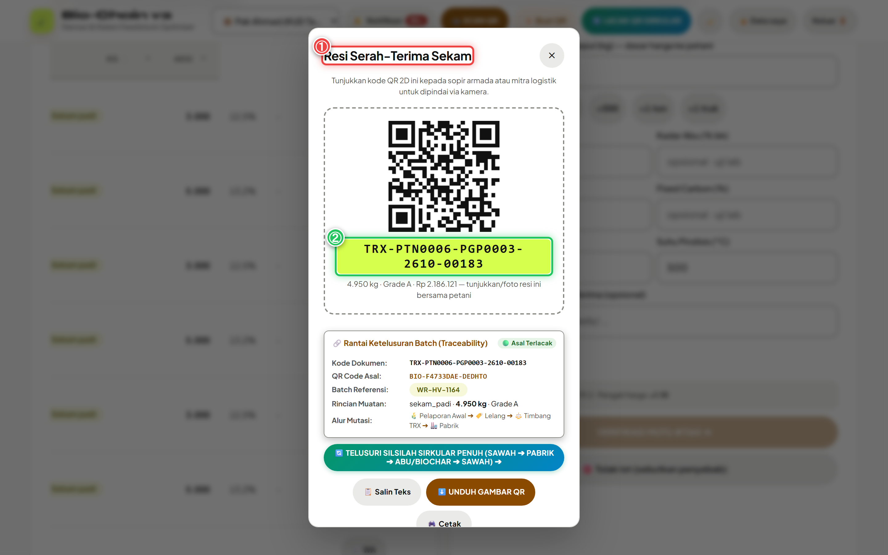
Gambar 1.1 — Resi Serah-Terima Sekam: kode TRX-PTN0006-PGP0003-2610-00183, ringkasan "4.950 kg ·
Grade A · Rp 2.186.121", serta kotak "Rantai Ketelusuran Batch" yang menautkan QR asal
BIO-F4733DAE-DEDHTO dan batch referensi WR-HV-1164, serta alur mutasi
Pelaporan Awal → Lelang → Timbang TRX → Pabrik.
3) Ledger custody & hash sirkular. Setiap serah-terima ditulis sebagai baris custody_events
dengan tahap farmer_report → collector_weigh → driver_pickup → factory_receive → conversion
(app/models/ledger.py, app/services/custody.py; penolakan dicatat sebagai collector_reject /
factory_reject). Layanan app/services/circular_traceability.py merangkai 6 tahap (sawah →
pengepul → driver → gerbang pabrik → pengolahan → muatan balik ke sawah) lalu menghitung sidik
SHA-256 atas gabungan kode-kode tiap tahap (QR asal, TRX pengepul/driver/pabrik, batch konversi,
surat jalan muatan balik, kg biochar). Bila satu kode diubah, sidik ikut berubah.
Modal "Lacak QR Sirkular" (tombol teal di header, terbuka untuk semua peran — endpoint
/api/v1/traceability sengaja publik agar pembeli/auditor bisa memverifikasi) menampilkan rantai itu:
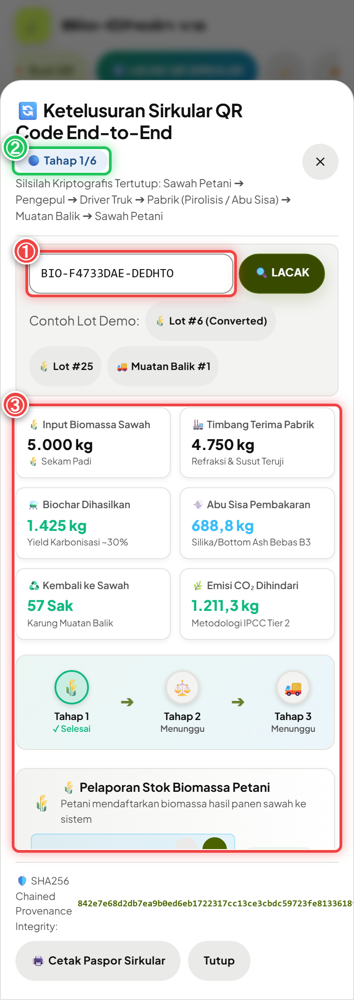
Gambar 1.2 — Modal "Ketelusuran Sirkular QR Code End-to-End": ① kode lot BIO-F4733DAE-DEDHTO
diketik lalu tombol LACAK; ② lencana tahap saat ini ("Tahap 1/6"); ③ ringkasan neraca lot — input
5.000 kg sekam, timbang terima pabrik 4.750 kg, biochar 1.425 kg, abu sisa 688,8 kg, 57 sak kembali
ke sawah, 1.211,3 kg CO₂ dihindari — beserta linimasa tahap (Tahap 1 Selesai, Tahap 2–3 Menunggu) dan
kartu "Pelaporan Stok Biomassa Petani". Di bawahnya tampil baris "SHA256 Chained Provenance Integrity".
Catatan jujur: sidik SHA-256 dihitung ulang setiap kali dilacak dari data yang tersimpan; ini bukan blockchain publik. Integritasnya bergantung pada jejak append-only dan kontrol akses di 1.3. Klaim karbon memakai mekanisme serupa: snapshot hasil hitung dibekukan dengan SHA-256 saat diajukan (
app/services/carbon_claims.py).
1.5 Keadilan Ekonomi: Margin Proporsional & Kepastian Bayar
Margin pengepul yang terbuka
Pengepul menanggung biaya jemput, gudang, dan risiko susut, sehingga berhak atas margin — tetapi margin itu dibuat transparan, bukan disembunyikan dalam timbangan.
- Modul Kontrak & Harga Jual Multi-Biomassa ke Pabrik menampilkan per komoditas: harga beli petani, harga jual pabrik, dan margin (Rp/kg) = harga jual − harga beli. Tombol Simulasi Margin Truk menghitung proyeksi satu ritase: nilai jual − harga beli − (km × biaya/km).
- Penasihat tawaran lelang (
app/routers/collector_bidding.py→trade.bid_advice) menghitungtawaran_maks = harga_jual − biaya_logistik_marginal/kg − margin/kg. Biaya logistik marginal diambil dari selisih km rute dengan dan tanpa lot tersebut (solver rute). Margin bisa diisi Rp/kg (defaultpasar.default_margin_per_kg= Rp30/kg) atau persen harga jual (defaultpasar.default_margin_pct= 5 %) — inilah margin proporsional: makin tinggi harga jual, margin rupiahnya ikut naik secara sebanding, tidak dipatok sepihak. - Harga jual default ke pabrik:
pasar.default_resale_price_per_kg= Rp560/kg (app/params.py).
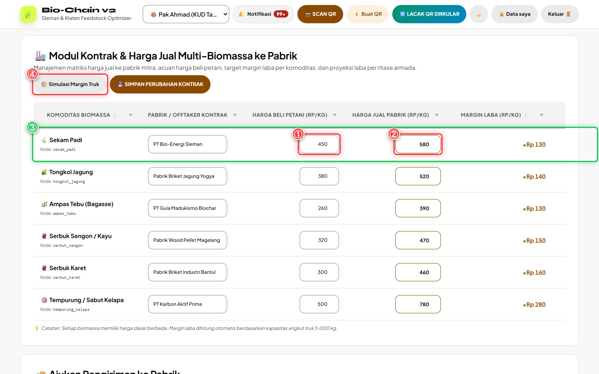
Gambar 1.3 — Baris Sekam Padi: harga beli petani Rp450/kg, harga jual ke PT Bio-Energi Sleman Rp580/kg, margin +Rp130/kg; tombol "Simulasi Margin Truk" di kiri atas.
⚠️ Keterbatasan saat ini: tabel Modul Kontrak disimpan di penyimpanan browser perangkat pengepul (
localStorage, kuncibiochain_factory_pricing_v1diapp/static/app.js), belum di server. Artinya nilai kontrak tidak tersinkron antarperangkat dan belum masuk jejak audit. Harga yang benar-benar dibayarkan ke petani tetap dihitung server dari harga dasar komoditas (Bab 2.3).
Kepastian bayar petani
- Lot yang sudah diverifikasi pengepul wajib dibayar maksimal 3 hari (parameter
pasar.farmer_payment_due_days, default 3, rentang 0–60) — lebih ketat dari target umum ≤ 14 hari. Lewat batas, lot ditandai "terlambat" di menu Pembayaran petani (app/services/payments.py,farmer_overview:late = hari_menunggu > due_days). - Petani melihat tiga keranjang: dibayar · menunggu bayar (dengan penanda terlambat) · belum ditimbang; setiap pembayaran menerbitkan kuitansi.
- Uang muka (DP) maksimal
pasar.dp_max_pct= 30 % perkiraan nilai lot; dipotong otomatis saat pelunasan, dan hangus untuk petani (tidak perlu dikembalikan) bila pengepul membatalkan sepihak. - Pemotongan PPh 22 (bila parameter
pajak.pph22_farmer_pctdiisi) ditampilkan terpisah dari nilai kotor.
1.6 Optimasi Algoritma (Ringkas)
| Masalah | Algoritma | Lokasi | Keterangan |
|---|---|---|---|
| Rute jemput pengepul (CVRP) | Clarke-Wright savings + local search (relocate, swap, 2-opt) + iterated local search; eksak Held-Karp bila ≤ 10 titik (mode auto) |
app/engines/routing.py |
Sekam sangat ringan (±120 kg/m³) sehingga bak penuh volume sebelum tonase: kapasitas dihitung dalam m³ dari kg ÷ densitas curah. |
| Alokasi armada multi-truk & rute hijau | Google OR-Tools (PATH_CHEAPEST_ARC + Guided Local Search) | app/engines/routing_ortools.py |
Dua dimensi kapasitas: m³ bak dan kg muatan; fungsi objektif gram CO₂e. Bisa dibandingkan dengan Clarke-Wright di modal Optimasi Rute (Bab 4.2). |
| Blend bahan bakar biaya terendah (Prototipe 1) | Program linier HiGHS (via SciPy) | app/engines/fuel_blend.py |
Minimalkan biaya dengan batas LHV, abu, Cl, S, dan indeks alkali. |
| Optimasi produk akhir (Prototipe 4) & blending lab | HiGHS | app/engines/product_optimization.py, app/engines/blending.py |
Memilih jalur produk (biochar, pelet, briket, silika) per bahan baku. |
| Kartu "Mesin Rekomendasi Blending Multi-Ramp" | Heuristik urut-prioritas (bukan HiGHS) | app/routers/factory_production.py |
Mengurutkan ramp sesuai target produk lalu mengalokasikan stok. |
Angka benchmark nyata (sumber: docs/benchmark_results.md, dijalankan 5 Okt 2026, Windows 11,
Python 3.14, panggilan engine langsung, ambang SLO 500 ms pada p95):
| Engine | Skenario | p50 | p95 |
|---|---|---|---|
| Routing Clarke-Wright + local search | 50 titik, bak 30 m³ | 249,89 ms | 250,18 ms |
| Routing Clarke-Wright + local search | 1.000 titik, bak 300 m³ | 273,96 ms | 279,30 ms |
| Blending HiGHS LP | 4 bahan, target 100 ton | 1,84 ms | 1,89 ms |
| Quality scorer | 10.000 sampel berturut-turut | 131,65 ms | 133,09 ms |
Waktu routing ±250 ms sebagian besar adalah anggaran waktu pencarian yang memang dipakai habis
(logistik.time_budget_ms), bukan batas kemampuan. Benchmark tersebut tidak memuat OR-Tools; perbandingan
Clarke-Wright vs OR-Tools ditampilkan langsung di modal rute (Bab 4.2).
Bab 2 — Protokol Uji Mutu 2 Tahap & Skema Grade Harga Insentif
Mutu biomassa menentukan harga yang diterima petani. Bio-Chain memakai dua tahap uji: Tahap 1 Uji Cepat di lapangan (setiap lot, menentukan harga hari itu) dan Tahap 2 Uji Lab Proksimat (berkala/sampel, untuk kontrak, gerbang pabrik, dan klaim karbon).
2.1 Tahap 1 — Uji Cepat Lapangan
Tujuan Proses & Standar Terkait: menetapkan berat bayar dan grade lot di tempat, sebelum
biomassa berpindah tangan. Ini adalah prosedur lapangan yang memakai form Uji Mutu pengepul;
aplikasi tidak memiliki penghitung waktu atau label "15 menit". Pengukuran kadar air mengacu pada
moisture meter yang dikalibrasi terhadap metode oven 105 °C (ISO 18134-2, dirujuk di
app/engines/refraction.py).
Langkah prosedur yang disarankan:
- Sampling. Ambil minimal 5 titik dari tumpukan/karung (atas, tengah, bawah, dua sisi), campur menjadi satu sampel komposit ±1 kg. Jangan hanya mengambil dari permukaan yang sudah kering dijemur.
- Timbang lot. Timbang seluruh lot di timbangan gudang; isi kolom Berat Timbangan Pengepul (kg). Tombol −50/+50/+100/+500/+1 ton/+1 truk membantu koreksi cepat.
- Kadar air (wajib). Ukur sampel dengan moisture meter minimal 3 kali, catat rata-ratanya di kolom Kadar Air (% bb). Satuan % basis basah.
- Densitas ruah (opsional, prosedur manual). Isi ember bervolume diketahui (mis. 20 L) tanpa dipadatkan, timbang, lalu hitung kg/m³ = kg ÷ volume (m³). Nilai acuan sekam di master komoditas = 120 kg/m³ dan dipakai untuk menghitung muatan bak truk (m³). Form Uji Mutu belum memiliki kolom densitas ruah; catat di foto bukti/keterangan bila perlu.
- Benda asing / kontaminan. Pisahkan batu, tanah, plastik, dedak dari sampel, timbang, dan isi Kontaminan (%) = berat benda asing ÷ berat sampel × 100.
- Proksimat (opsional). Kolom Kadar Abu, Volatile Matter, Fixed Carbon diisi hanya bila ada hasil
uji lab/NIR. Bila kosong, grade dihitung dari kadar air & kontaminan saja dan sistem menampilkan
peringatan "Uji proksimat tidak diukur" (
app/engines/quality.py). - Foto & verifikasi. Lampirkan foto bukti (opsional), klik Verifikasi Mutu → sistem menghitung grade dan harga final, lalu menerbitkan resi TRX (Gambar 1.1).
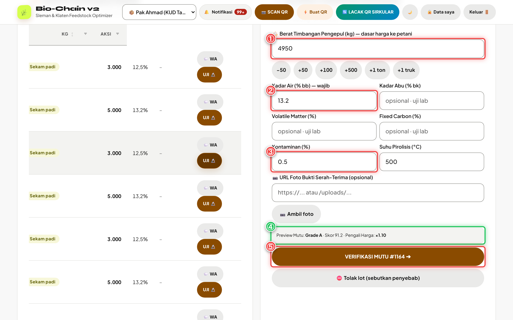
Panduan Aksi Berdasarkan Nomor pada Gambar:
- ① Berat Timbangan Pengepul (kg): berat aktual lot, contoh 4950.
- ② Kadar Air (% bb) — wajib: hasil moisture meter, contoh 13.2.
- ③ Kontaminan (%): persentase benda asing, contoh 0.5. Kolom Kadar Abu, VM, FC dibiarkan
"opsional · uji lab"; Suhu Pirolisis 500 °C (default).
- ④ Preview Mutu: kotak ringkasan "Grade A · Skor 91.2 · Pengali Harga: ×1.10".
- ⑤ VERIFIKASI MUTU #1164: menyimpan hasil uji, mengubah status lot menjadi terverifikasi,
mencatat custody collector_weigh, dan membuka resi serah-terima.
⚠️ Catatan untuk tim produk: teks pada kotak ④ saat ini adalah contoh statis di
app/static/app.js(tidak dihitung ulang saat input berubah). Grade dan harga yang sah adalah yang dihitung server saat tombol ⑤ ditekan dan tampil di resi. Untuk data pada gambar (MC 13,2 %, kontaminan 0,5 %) server dengan parameter default menghasilkan skor ±88,5 → Grade A (lihat 2.3).🔧 Di Balik Layar (Sistem): endpoint
POST /api/v1/collector/verify(app/routers/collector.py) memanggilscore_sample()diapp/engines/quality.pyuntuk sekam padi, atau_biomass_grade()(acuan master komoditas) untuk biomassa lain; harga dihitungfarmgate_price()dan resi olehapp/services/trx_code.py. Lot di atas batas tolak hanya bisa dibeli bila pengepul mencentang "beli untuk dikeringkan" (harga basis kering, risiko ditanggung pengepul).
Sisi petani — taksiran sebelum dijemput. Petani dapat mengisi taksiran kadar air dan grade di form lapor stok. Taksiran ini tidak mengubah harga; harga final tetap dari timbangan & uji pengepul.
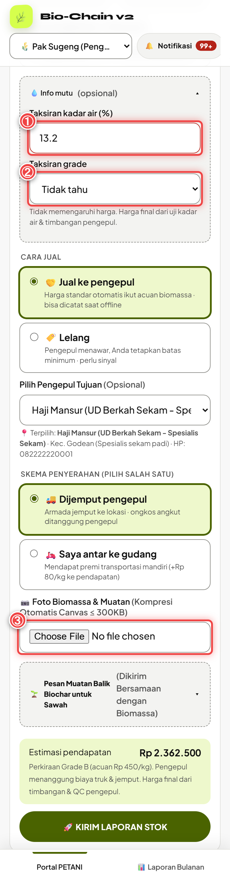
Panduan Aksi Berdasarkan Nomor pada Gambar: - ① Taksiran kadar air (%): contoh 13.2. - ② Taksiran grade: pilihan grade atau "Tidak tahu". Di bawahnya tertulis "Tidak memengaruhi harga. Harga final dari uji kadar air & timbangan pengepul." - ③ Foto Biomassa & Muatan: tombol pilih berkas foto (dikompresi otomatis ≤ 300 KB). Kotak Estimasi pendapatan di bawahnya menampilkan Rp 2.362.500 — "Perkiraan Grade B (acuan Rp 450/kg)" untuk 5.000 kg dengan skema Dijemput pengepul (5.000 × 450 × 1,05).
🔧 Di Balik Layar (Sistem): fungsi
gradeFrom()diapp/static/app.jsmenurunkan grade dari taksiran kadar air (≤ 12 → A, ≤ 15 → B, ≤ 18 → C, > 18 → D) bila petani memilih "Tidak tahu", lalu memperkirakan pendapatan = kg × harga acuan ×harga_mutu.mult_<grade>. Untuk D ditampilkan "Berisiko ditolak" (tidak ada pengali D).
2.2 Tahap 2 — Uji Lab Proksimat
Tujuan Proses & Standar Terkait: memverifikasi mutu bahan secara laboratorium untuk lot besar, kontrak, penerimaan pabrik, produk biochar/abu ke lahan, dan klaim removal karbon. Uji sebaiknya di laboratorium terakreditasi KAN (ISO/IEC 17025).
Parameter yang diuji:
| Parameter | Satuan | Kegunaan di Bio-Chain | Kolom tersedia di |
|---|---|---|---|
| Kadar abu | % basis kering | Skor mutu (ideal 14–20 % untuk sekam), prediksi abu & SiO₂ di biochar | Form Uji Mutu pengepul (opsional), gerbang pabrik |
| Nilai kalor bawah (LHV) | kcal/kg | Penerimaan bahan bakar & blending | Gerbang pabrik |
| Volatile matter (VM) | % bk | Cek konsistensi proksimat (Abu + VM + FC ≈ 100 %) | Form Uji Mutu (opsional) |
| Fixed carbon (FC) | % bk | Skor mutu (ideal ≥ 17 %, skor 0 pada ≤ 8 %) | Form Uji Mutu (opsional) |
| Logam berat Pb, Cd, As (+ Hg, Cr, Ni untuk abu) | mg/kg (ppm) | Kelayakan biochar/abu ke lahan sawah | Uji keamanan by-product, ledger abu |
| C-organik & rasio H/C-org | % bk; mol/mol | Klaim removal karbon biochar | Form Klaim Removal Karbon |
⚠️ Belum tersedia di aplikasi: jadwal uji lab proksimat bulanan, pengingat otomatis, dan pencatatan kalibrasi bulanan moisture meter (alat, tanggal, selisih terhadap oven 105 °C) belum ada. Sampai fitur ini dibuat, lakukan secara manual: kirim satu sampel komposit per pengepul per bulan ke lab, dan kalibrasi moisture meter terhadap uji oven setiap bulan; simpan berkasnya di luar aplikasi.
Di mana data lab sudah bisa dimasukkan:
- Form Uji Mutu pengepul — kolom Kadar Abu, VM, FC (opsional; lihat Gambar 2.1 ②–③).
- Gerbang pabrik — blok "Pengujian Mutu Sampel (Lab Lapangan)": Kadar Air, Kadar Abu, LHV, Kotoran, lalu keputusan QC 3 status.
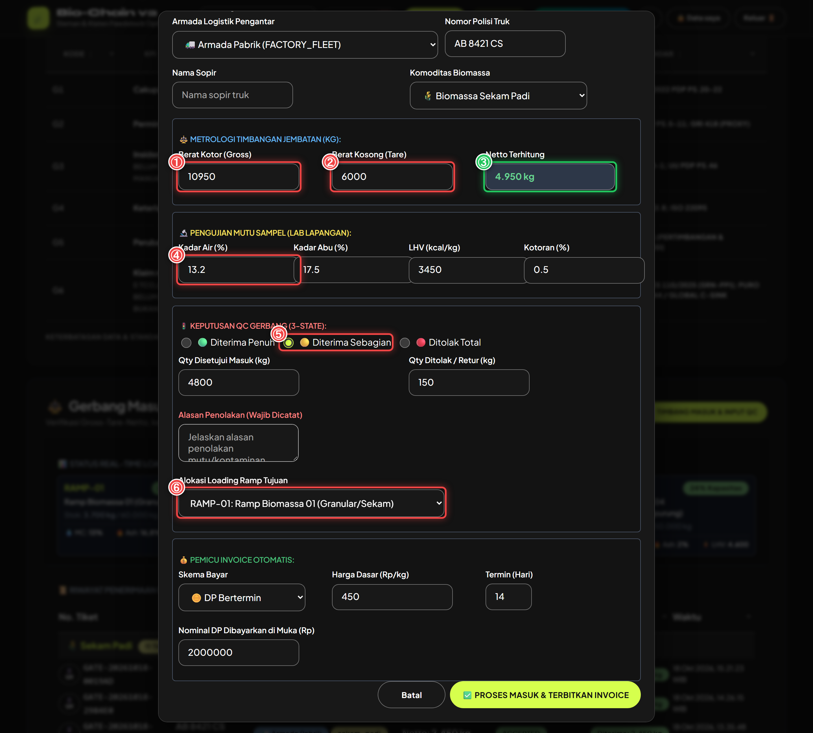
Gambar 2.3 — Truk AB 8421 CS (Armada Pabrik), sekam padi: ① Berat Kotor (Gross) 10.950 kg, ② Berat Kosong (Tare) 6.000 kg, ③ Netto Terhitung 4.950 kg; blok uji lab lapangan ④ Kadar Air 13,2 %, Kadar Abu 17,5 %, LHV 3.450 kcal/kg, Kotoran 0,5 %; ⑤ keputusan QC "Diterima Sebagian" (4.800 kg masuk, 150 kg retur); ⑥ ramp tujuan RAMP-01 (Granular/Sekam). Blok "Pemicu Invoice Otomatis": DP Bertermin, harga dasar Rp450/kg, termin 14 hari, DP Rp2.000.000. Rincian di Bab 6.1.
- Uji keamanan by-product biochar — Pb, Cd, As + nomor sertifikat lab KAN/ISO 17025 (wajib,
SafetyTestRequest.lab_cert_nodiapp/routers/factory_production.py). - Ledger abu — Pb, Cd, As, Hg, Cr, Ni, nama lab, nomor laporan, tautan laporan (
app/models/biomass.py). - Klaim Removal Karbon — C-organik lab, rasio H/C-org, nama laboratorium, nomor laporan, unggah foto/scan laporan.
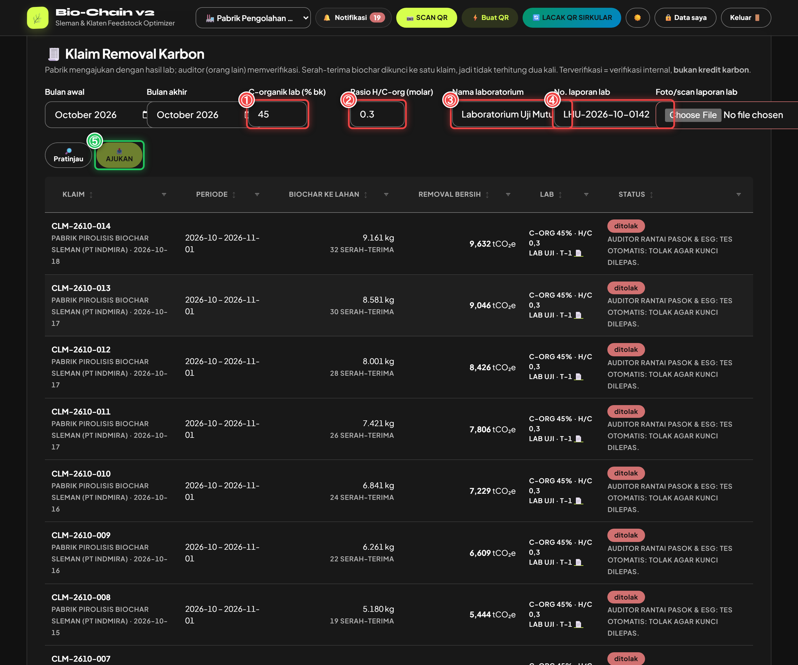
Gambar 2.4 — ① C-organik lab 45 % bk, ② Rasio H/C-org 0,3 (di bawah batas 0,7), ③ Nama laboratorium ("Laboratorium Uji Mutu…"), ④ No. laporan lab LHU-2026-10-0142, lalu ⑤ tombol AJUKAN (Pratinjau di sebelahnya untuk menghitung tanpa menyimpan). Rincian di Bab 6.4.
🔧 Di Balik Layar (Sistem):
app/services/carbon_claims.pymengganti parameter fraksi C (karbon.biochar_c_org_fraction, default 0,49) dengan C-organik hasil lab, dan menolak pengajuan bila H/C-org >karbon.h_corg_max(0,7). Status "terverifikasi" = verifikasi internal oleh auditor, bukan kredit karbon bersertifikat.
2.3 Penentuan Grade & Harga
Tabel grade biomassa
Bio-Chain memakai grade A/B/C/D (bukan "A1"). Ada dua lapis: taksiran petani (dari kadar air saja) dan grade resmi pengepul (dari skor mutu).
| Grade | Taksiran petani (gradeFrom, app.js) |
Grade resmi sekam padi (quality.py) |
Pengali harga (app/params.py) |
|---|---|---|---|
| A | Kadar air ≤ 12 % | Skor ≥ 80 (harga_mutu.grade_A_min) |
harga_mutu.mult_A = 1,15 |
| B | 12 % < KA ≤ 15 % | 60 ≤ skor < 80 (harga_mutu.grade_B_min) |
harga_mutu.mult_B = 1,05 |
| C | 15 % < KA ≤ 18 % | Skor < 60 | harga_mutu.mult_C = 1,00 |
| D / TOLAK | KA > 18 % → "Berisiko ditolak" | TOLAK bila KA > 25 % (harga_mutu.moisture_reject) atau kontaminan > 10 % (harga_mutu.contamination_reject) |
0 (tidak dibeli, kecuali "beli untuk dikeringkan") |
Tidak ada parameter
harga_mutu.mult_Ddi kode. Grade "D" hanya muncul pada taksiran petani; server memakai status TOLAK.
Skor mutu sekam (score_sample() di app/engines/quality.py) = rata-rata berbobot komponen yang
terukur (bobot dinormalisasi atas komponen yang diisi):
| Komponen | Skor 100 bila | Skor 0 bila | Bobot |
|---|---|---|---|
| Kadar air | ≤ 10 % (moisture_best) |
≥ 25 % (moisture_reject) |
0,35 |
| Kontaminan | ≤ 1 % (contamination_best) |
≥ 10 % (contamination_reject) |
0,30 |
| Kadar abu (opsional) | 14–20 % (ash_ideal_min/max); −10 poin per 1 % di luar rentang |
— | 0,15 |
| Fixed carbon (opsional) | ≥ 17 % (fc_best) |
≤ 8 % (fc_worst) |
0,20 |
Skor di antara batas dihitung linear: skor = 100 × (batas_buruk − nilai) ÷ (batas_buruk − batas_ideal).
Biomassa selain sekam (tongkol jagung, ampas tebu, tempurung, serbuk kayu) dinilai dari acuan
master komoditas (_biomass_grade() di app/routers/collector.py): A bila KA ≤ KA acuan dan kontaminan
≤ toleransi; B bila KA ≤ titik tengah acuan–tolak dan kontaminan ≤ toleransi + 3 %; selain itu C;
TOLAK bila KA > KA tolak atau kontaminan > 20 %. Grade di sini hanya informasi — harga tetap basis kering.
Rumus harga beli dari petani
Metode default harga_mutu.pricing_method = basis_kering (farmgate_price() di app/engines/quality.py):
harga/kg = harga_dasar × (1 − KA) ÷ (1 − KA_acuan) KA_acuan = harga_mutu.reference_moisture_pct = 12 %
kg_bayar = kg_timbang × (1 − kontaminan)
total = kg_bayar × harga/kg (TOLAK → 0)
Pada metode ini pengali grade tidak dipakai: setiap 1 % air sudah dihargai sesuai bahan keringnya,
sehingga tidak ada "tebing harga" di batas grade. Metode lama pengali_grade
(total = kg × harga_dasar × pengali) masih bisa dipilih pabrik di menu Parameter. Lot dengan KA >
15 % (harga_mutu.moisture_mold_risk_pct) ditandai risiko jamur: angkut ≤ 48 jam atau keringkan.
Rumus refraksi multi-komoditas
Untuk pratinjau refraksi multi-biomassa (app/engines/refraction.py, dipanggil dari
app/routers/multibiomass.py dan app/services/biomass.py):
kg_bayar = kg_timbang × (1 − max(0, kontaminan − toleransi)) × (1 − KA) ÷ (1 − KA_acuan)
Faktor kadar air dibatasi maksimal 1 (tidak ada bonus lebih kering, kecuali diaktifkan per transaksi).
Di atas KA tolak, lot ditolak kecuali opsi eksplisit "terima basah". Acuan sekam padi di master
(app/biomass_seed.py): KA acuan 12 %, KA tolak 20 %, toleransi kontaminan 2 %.
Contoh hitung — 5.000 kg sekam, KA 13,2 %, kontaminan 0,5 %
Harga dasar dari parameter default: harga_mutu.base_price_per_kg = Rp400/kg (app/config.py
BASE_PRICE_PER_KG), tanpa data proksimat lab.
| Langkah | Perhitungan | Hasil |
|---|---|---|
| Skor kadar air | 100 × (25 − 13,2) ÷ (25 − 10) | 78,7 |
| Skor kontaminan | 0,5 % ≤ 1 % (ideal) | 100 |
| Skor komposit | (78,7 × 0,35 + 100 × 0,30) ÷ 0,65 | 88,5 → Grade A |
| Harga per kg (basis kering) | 400 × (1 − 0,132) ÷ (1 − 0,12) = 400 × 0,98636 | Rp394,55/kg |
| Kg dibayar | 5.000 × (1 − 0,005) | 4.975 kg |
| Total diterima petani | 4.975 × 394,55 | Rp1.962.886 |
Pembanding: metode pengali_grade |
5.000 × 400 × 1,15 | Rp2.300.000 |
| Pembanding: refraksi multi-komoditas | 5.000 × (1 − 0) × 0,98636 = 4.931,8 kg × Rp400 | Rp1.972.727 |
Pada jalur refraksi, kontaminan 0,5 % tidak dipotong karena masih di bawah toleransi 2 %; pada jalur verifikasi sekam, seluruh kontaminan dipotong dari berat bayar.
Cocokkan dengan resi: Gambar 1.1 menunjukkan 4.950 kg · Grade A · Rp2.186.121. Angka itu memakai harga dasar aktif Rp450/kg pada data demo: 4.950 × 0,995 = 4.925,25 kg × (450 × 0,868 ÷ 0,88 = Rp443,86/kg) = Rp2.186.121. Rumusnya sama; hanya harga dasarnya berbeda.
2.4 Standar Produk Akhir
Grade A/B/C/D berlaku untuk bahan baku biomassa. Untuk produk pabrik dipakai standar berikut; batas di tabel adalah yang benar-benar diperiksa kode.
| Produk | Standar acuan | Batas yang diperiksa di kode | Lokasi |
|---|---|---|---|
| Bio-pelet | ISO 17225-2 (kayu) / ISO 17225-6 (non-kayu) | Abu produk ≤ 1,2 % → Kelas A1/A2; ≤ 6 % → ISO 17225-6 Kelas A non-kayu; ≤ 10 % → hanya Kelas B; > 10 % → wajib blending. Indeks alkali > 0,34 kg/GJ → risiko kerak. | app/engines/product_optimization.py |
| Biochar (pembenah tanah & karbon) | European Biochar Certificate (EBC) / IBI; metodologi Puro.earth 2025 | H/C-org ≤ 0,7 (karbon.h_corg_max) — di atasnya klaim ditolak. C-org: hasil lab menggantikan default 0,49 (karbon.biochar_c_org_fraction); tidak ada ambang minimum C-org di kode (C-org > 75 % dicatat sebagai keunggulan). Logam berat lolos bila Pb < 50, Cd < 2, As < 10 ppm. |
app/services/carbon_claims.py, app/params.py, app/routers/factory_production.py |
| Abu ke lahan | Kepmentan No. 261/KPTS/SR.310/M/4/2019 | As ≤ 10, Hg ≤ 1, Pb ≤ 50, Cd ≤ 2, Cr ≤ 180, Ni ≤ 50 mg/kg (abu.limit_*_ppm); lulus hanya bila semua logam terukur ≤ batas. |
app/params.py, app/models/biomass.py |
| Briket / arang | SNI 01-6235-2000 | Abu briket maks 8 %; sekam dinilai tidak cocok untuk briket komersial (arang rapuh, abu tinggi). | app/engines/product_optimization.py |
| Silika (dari abu sekam) | SNI 15-0086-1987 / ASTM D1993 | Dinilai dari skor ekonomis jalur silika. | app/engines/product_optimization.py |
Catatan: ISO 17225 hanya dipakai untuk spesifikasi produk bio-pelet, bukan untuk grade bahan baku sekam. Penilaian kesesuaian di atas adalah penyaring awal di aplikasi; sertifikasi produk tetap memerlukan uji lab terakreditasi dan audit lembaga standar terkait.
Bab 3 — Panduan Langkah demi Langkah Modul Petani / Penggilingan Padi
Bab ini memandu petani dan operator penggilingan padi memakai Bio-Chain di HP: masuk ke aplikasi, melaporkan stok biomassa (contoh: Sekam Padi 5.000 kg, taksiran kadar air 13,2 %), memilih cara jual dan cara serah, memesan biochar untuk sawah, lalu memantau mutu, ketertelusuran, dan pembayaran. Semua layar di bab ini diambil dari tampilan HP (lebar 390 px).
3.1 Login Aman & Dashboard Utama
Layar 3.1a — Masuk Akun & Pilih Peran
Tujuan Proses & Standar Terkait: Memastikan hanya pemilik akun yang masuk, dan masuk ke gerbang peran yang benar (Petani). Ini adalah kontrol keamanan yang selaras dengan ISO 27001 (kontrol akses berbasis peran/RBAC, kata sandi ter-hash, token JWT + CSRF). Aplikasi tidak tersertifikasi ISO 27001.
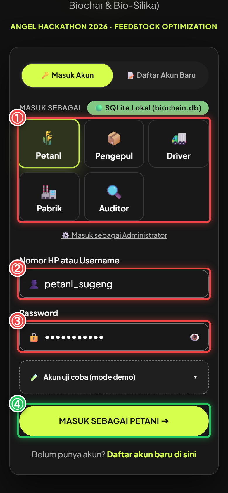
Panduan Aksi Berdasarkan Nomor pada Gambar:
- ① Masuk Sebagai (kartu peran): ketuk kartu Petani (kartu terpilih menyala hijau). Kartu lain — Pengepul,
Driver, Pabrik, Auditor — untuk peran lain.
- ② Nomor HP atau Username: ketik nomor HP atau username Anda, contoh petani_sugeng.
- ③ Password: ketik kata sandi. Ketuk ikon mata 👁 untuk melihat ketikan bila ragu salah ketik.
- ④ MASUK SEBAGAI PETANI ➔: ketuk tombol hijau. Bila berhasil, dashboard Portal Petani terbuka. Bila akun Anda
bukan akun petani, muncul pesan "Akun ini bukan akun petani. Silakan pilih gerbang yang sesuai."
Belum punya akun? Ketuk Daftar akun baru di sini. Kotak "Akun uji coba (mode demo)" hanya muncul di server demo dan hilang di server produksi.
🔧 Di Balik Layar (Sistem): Form mengirim
POST /api/v1/auth/logindenganidentifier,password, danexpected_role(peran dari kartu ①).app/routers/auth.pymencocokkan kata sandi dengan hash PBKDF2-HMAC-SHA256 600.000 iterasi, menolak bila peran akun ≠expected_role, lalu menerbitkan token JWT. Percobaan login dibatasiLOGIN_RATE_LIMIT= 10 per IP per jendela waktu (app/middleware/rate_limiter.py, anti tebak-tebakan kata sandi). Respons tidak pernah memuat hash kata sandi.
Layar 3.1b — Dashboard Utama Petani
Tujuan Proses & Standar Terkait: Ringkasan cepat kinerja pasok Anda: jumlah laporan, tonase terkirim, poin XP, dan saldo biochar yang bisa diambil.
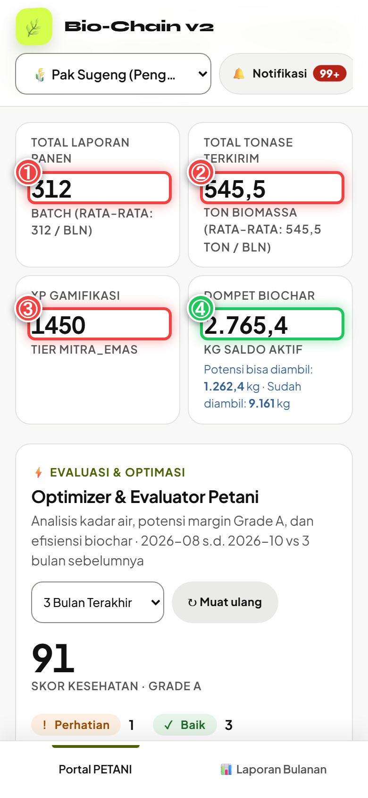
Panduan Aksi Berdasarkan Nomor pada Gambar: - ① Total Laporan Panen: jumlah batch yang sudah Anda laporkan, contoh 312 batch (rata-rata 312 / bln). - ② Total Tonase Terkirim: ton biomassa yang sudah terkirim, contoh 545,5 ton (rata-rata 545,5 ton / bln). - ③ XP Gamifikasi: poin keaktifan dan mutu pasok, contoh 1450 dengan tingkat Mitra Emas ("TIER MITRA_EMAS"). - ④ Dompet Biochar (hasil): saldo biochar milik Anda, contoh 2.765,4 kg saldo aktif — "Potensi bisa diambil: 1.262,4 kg · Sudah diambil: 9.161 kg". - Di bawahnya ada kartu Optimizer & Evaluator Petani (analisis kadar air, potensi margin Grade A, efisiensi biochar, periode 2026-08 s.d. 2026-10 dibanding 3 bulan sebelumnya) dengan pilihan periode "3 Bulan Terakhir", tombol ↻ Muat ulang, dan Skor Kesehatan (contoh 91 · Grade A, 1 butir "Perhatian", 3 butir "Baik"). - Di bagian atas: pemilih persona/akun dan tombol 🔔 Notifikasi. Pelacakan QR dibahas di Layar 3.5c.
🔧 Di Balik Layar (Sistem): Angka kartu dimuat dari
GET /api/v1/farmer/harvests,/farmer/wallet, dan/farmer/incentive(app/routers/farmer.py). XP dihitung per ton sesuai grade dengan parameterinsentif.xp_grade_A/B/C(app/params.py). Kartu Optimizer memakai modul evaluasi AI per peran (initAIEvaluationCard("petani")diapp/static/app.js).
3.2 Form Lapor Biomassa
Layar 3.2a — Jenis Biomassa, Jumlah, dan Lokasi Penggilingan
Tujuan Proses & Standar Terkait: Mencatat stok biomassa yang siap dijual sebagai batch baru dengan kode QR unik, titik awal rantai ketertelusuran (chain of custody).
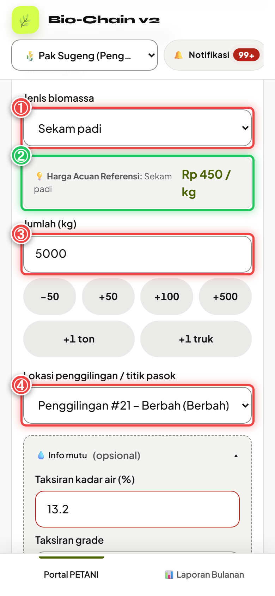
Panduan Aksi Berdasarkan Nomor pada Gambar:
- ① Jenis biomassa: pilih komoditas, contoh Sekam padi.
- ② Harga Acuan Referensi (hasil otomatis): kotak hijau langsung menampilkan harga acuan komoditas yang dipilih,
contoh Rp 450 / kg untuk sekam padi. Harga ini berubah otomatis bila jenis biomassa diganti.
- ③ Jumlah (kg): ketik berat, contoh 5000. Bisa juga memakai tombol cepat −50, +50, +100, +500, +1 ton,
+1 truk.
- ④ Lokasi penggilingan / titik pasok: pilih penggilingan asal, contoh Penggilingan #21 – Berbah (Berbah).
Di bawahnya ada bagian lipat 💧 Info mutu (opsional) — lihat Layar 3.2b.
🔧 Di Balik Layar (Sistem): Daftar komoditas & harga acuan diambil dari master biomassa (
biomassList()→ harga dasar per komoditas); daftar penggilingan dariGET /api/v1/farmer/mills. Jumlah wajib > 0 dan maksimal 100.000 kg per laporan (validasi didoSubmitLapor,app/static/app.js). Bila penggilingan tidak terdaftar, server memakai penggilingan aktif pertama (report_harvest,app/routers/farmer.py).
Layar 3.2b — Estimasi Mutu (Kadar Air & Grade) dan Foto
Tujuan Proses & Standar Terkait: Memberi taksiran mutu awal agar estimasi pendapatan lebih tepat. Taksiran ini tidak menentukan harga final — harga final dari uji kadar air dan timbangan pengepul.
Panduan Aksi Berdasarkan Nomor pada Gambar:
- ① Taksiran kadar air (%): ketik hasil perkiraan/alat ukur Anda, contoh 13.2.
- ② Taksiran grade: pilih A/B/C/D bila tahu, atau biarkan Tidak tahu — sistem menebak grade dari kadar air.
Catatan di bawahnya: "Tidak memengaruhi harga. Harga final dari uji kadar air & timbangan pengepul."
- ③ Foto Biomassa & Muatan (Kompresi Otomatis Canvas ≤ 300KB): ketuk Choose File / 📷 Ambil foto untuk memotret
tumpukan biomassa. Foto otomatis diperkecil sebelum diunggah.
Gambar ini juga memperlihatkan bagian form berikutnya: Cara Jual (Jual ke pengepul dipilih), Pilih Pengepul Tujuan yang otomatis terisi pengepul spesialis sekam — "Terpilih: Haji Mansur (UD Berkah Sekam – Spesialis Sekam) · Kec. Godean" — skema Dijemput pengepul, kotak Estimasi pendapatan Rp 2.362.500 ("Perkiraan Grade B (acuan Rp 450/kg)"), dan tombol 🚀 KIRIM LAPORAN STOK. Semua bagian ini dijelaskan di 3.3.
Bila tidak tahu grade, aturan tebakan dari kadar air (MC) adalah:
| Kadar air (MC) | Grade taksiran | Pengali harga (parameter) |
|---|---|---|
| ≤ 12 % | A | harga_mutu.mult_A = ×1,15 |
| > 12 – 15 % | B | harga_mutu.mult_B = ×1,05 |
| > 15 – 18 % | C | harga_mutu.mult_C = ×1,00 |
| > 18 % | D | "Berisiko ditolak" — jemur dulu bila bisa |
Contoh: MC 13,2 % → Grade B.
🔧 Di Balik Layar (Sistem): Fungsi
gradeFrom()diapp/static/app.jsmemakai ambang MC ≤12→A, ≤15→B, ≤18→C,18→D. Foto dikompres oleh
BiochainImage.compress()(app/static/ui-enhance.js): gambar digambar ulang lewat canvas dengan sisi terpanjang 1600→1280→1024→800→640 px dan mutu JPEG 0,75→0,62→0,5→0,4 sampai ukurannya ≤ 300 KB (MAX_PHOTO_BYTES = 300 * 1024). Proses ini juga membuang metadata EXIF (lokasi rumah, info HP). Foto lalu diunggah kePOST /api/v1/uploads; bila tidak ada sinyal, foto disimpan di HP dan ikut terkirim bersama laporannya. Grade resmi kemudian ditetapkan pengepul dari uji mutu (app/engines/quality.py, skor minimumharga_mutu.grade_A_min= 80,grade_B_min= 60).
3.3 Mode Transaksi & Opsi Pengiriman
Petani memilih dua hal:
| Pilihan | Opsi | Arti |
|---|---|---|
| Cara jual | 🤝 Jual ke pengepul (Jual Langsung) | Harga ikut acuan biomassa × pengali grade; bisa dicatat saat offline. |
| 🏷️ Lelang (Bursa Lelang) | Pengepul menawar; Anda menetapkan batas harga minimum; perlu sinyal. | |
| Skema penyerahan | 🚚 Dijemput pengepul | Armada menjemput ke lokasi; ongkos angkut ditanggung pengepul. |
| 🛵 Saya antar ke gudang (Diantar Mandiri) | Anda mengantar sendiri; dapat premi transportasi +Rp 80/kg. |
Layar 3.3a — Jual Langsung + Dijemput Pengepul
Tujuan Proses & Standar Terkait: Menjual langsung ke pengepul mitra dengan harga acuan, biomassa dijemput armada.
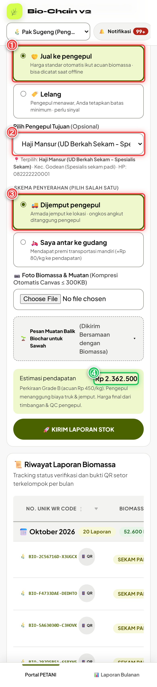
Panduan Aksi Berdasarkan Nomor pada Gambar: - ① Jual ke pengepul: ketuk kartu ini (kartu terpilih berwarna hijau muda dengan tanda radio terisi). - ② Pilih Pengepul Tujuan (Opsional): sistem otomatis memilih pengepul spesialis komoditas Anda, contoh Haji Mansur (UD Berkah Sekam – Spesialis Sekam). Keterangan di bawahnya: "Terpilih: … · Kec. Godean (Spesialis sekam padi) · HP: 082222220001". Ganti bila punya langganan lain, atau pilih "Bebas / Pengepul Terdekat (Otomatis)". - ③ Dijemput pengepul: ketuk kartu skema penyerahan ini ("Armada jemput ke lokasi · ongkos angkut ditanggung pengepul"). - ④ Estimasi pendapatan (hasil): kotak hijau menampilkan Rp 2.362.500 — "Perkiraan Grade B (acuan Rp 450/kg). Pengepul menanggung biaya truk & jemput. Harga final dari timbangan & QC pengepul." Hitungannya: 5.000 kg × Rp 450 × 1,05 (pengali Grade B). Lalu ketuk 🚀 KIRIM LAPORAN STOK; muncul jendela "Laporan Sekam padi Berhasil!" berisi kode QR batch, dan lot baru tampil di kartu Riwayat Laporan Biomassa di bawahnya.
🔧 Di Balik Layar (Sistem):
updateEarning()(app/static/app.js) menghitungestimasi = jumlah × harga_acuan × harga_mutu.mult_<grade>. Bila grade tidak diketahui, ditampilkan rentang Grade C–A (mult_Cs/dmult_A). Payload kePOST /api/v1/farmer/harvestmemuattransaction_mode: "DIRECT",logistics_mode: "PICKUP",delivery_scheme: "jemput", dancollector_id. Server membuat batch statusREPORTEDdengan kode QR baru (new_qr_code), yang masuk antrean uji mutu pengepul.
Layar 3.3b — Bursa Lelang + Saya Antar ke Gudang
Tujuan Proses & Standar Terkait: Membuka stok untuk ditawar banyak pengepul dengan batas harga minimum, dan mengantar sendiri ke gudang untuk mendapat premi.
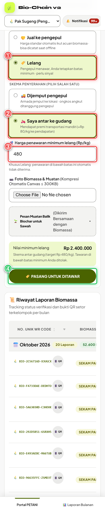
Panduan Aksi Berdasarkan Nomor pada Gambar:
- ① Lelang: ketuk kartu ini. Kolom "Pilih Pengepul Tujuan" otomatis disembunyikan karena lelang terbuka untuk
semua pengepul.
- ② Saya antar ke gudang: ketuk kartu ini — "Mendapat premi transportasi mandiri (+Rp 80/kg ke pendapatan)".
- ③ Harga penawaran minimum lelang (Rp/kg): ketik batas bawah, contoh 480. Tawaran di bawah batas ini otomatis
tidak diterima. (Bila dikosongkan, sistem mengisi harga acuan + premi antar = 450 + 80 = Rp 530/kg.)
- ④ PASANG UNTUK DITAWAR: pada mode lelang tombol kirim berubah menjadi tombol ini. Sebelum mengetuk, periksa kotak
hasil di atasnya: Nilai minimum lelang Rp 2.400.000 (5.000 kg × Rp 480) — "Skema antar gudang (target Rp 480/kg).
Tawaran di bawah batas minimum Anda ditolak." Setelah diketuk, stok muncul di kartu Stok Lelang (Layar 3.3c).
🔧 Di Balik Layar (Sistem): Pada mode lelang
updateEarning()mengaktifkan kolomf-ask-pricedan menghitungnilai_minimum = jumlah × harga_minimum. Premi antar mandiri adalah konstantapremiAntar = 80(Rp/kg) diapp/static/app.js: harga efektif skema antar = harga acuan + 80. Payload memuattransaction_mode: "BIDDING",logistics_mode: "DELIVER_SELF",floor_price: 480,collector_id: null. Lelang membutuhkan sinyal karena pengepul harus bisa melihat dan menawar stok secara langsung.
Layar 3.3c — Stok Lelang & Tawaran Masuk
Tujuan Proses & Standar Terkait: Memantau stok yang sedang dilelang, membandingkan tawaran pengepul berdasarkan nilai bersih (harga − ongkos antar Anda), lalu memilih tawaran.
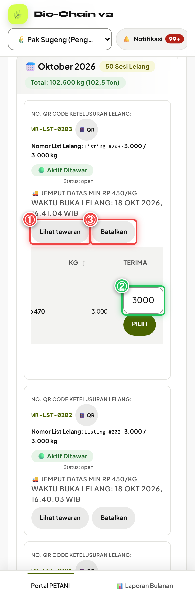
Kartu Stok Lelang & Tawaran Masuk mengelompokkan lelang per bulan (contoh "Oktober 2026 · 50 Sesi Lelang · Total:
102.500 kg (102,5 Ton)"). Tiap lelang menampilkan kode QR lelang (contoh WR-LST-0203), nomor list (Listing #203 ·
3.000 / 3.000 kg), status Aktif Ditawar (status: open), skema ("Jemput batas min Rp 450/kg"), dan waktu buka lelang
(18 Okt 2026, 16.41.04 WIB).
Panduan Aksi Berdasarkan Nomor pada Gambar:
- ① Lihat tawaran: ketuk untuk membuka tabel tawaran pengepul di bawah kartu (kolom Pengepul, Skema & Jadwal,
harga/kg, nilai bersih/kg, KG, Terima). Contoh: satu tawaran Rp 470/kg untuk 3.000 kg. Geser tabel ke kanan bila
kolom terpotong.
- ② Terima tawaran: di kolom Terima, isi jumlah yang ingin dijual (contoh 3000; boleh lebih kecil untuk
menjual sebagian) lalu ketuk PILIH. Muncul jendela "Kontrak Lelang" berisi QR yang ditunjukkan saat serah terima.
- ③ Batalkan: ketuk untuk menarik lelang yang masih terbuka.
🔧 Di Balik Layar (Sistem): Tawaran dimuat dari
GET /api/v1/farmer/listings/{id}/bids; nilai bersih per kg untuk skema antar dikurangi ongkos antar petani (trade.bids_for_farmer). Memilih tawaran memanggilPOST /api/v1/farmer/listings/{id}/accept— atomik: stok tidak pernah terjual melebihi sisa, dan penerimaan sebagian diperbolehkan. Pembatalan:POST /api/v1/farmer/listings/{id}/cancel.
Konfirmasi jadwal jemput (tanpa screenshot khusus). Setelah pengepul mengusulkan tanggal penjemputan, di tabel tawaran kolom Skema & Jadwal muncul label Rencana: \<tanggal> dengan dua tombol: - ✓ Setujui — jadwal dikunci; label berubah menjadi "✓ Jadwal: \<tanggal>". - 📅 Ubah — membuka jendela "Ajukan Penyesuaian Jadwal Jemput": isi Tanggal Penjemputan Baru dan Catatan untuk Pengepul (contoh "Panen baru selesai sore, mohon ambil pagi hari."), lalu Kirim Permintaan. Label berubah menjadi "📅 Diajukan: \<tanggal>".
🔧 Di Balik Layar (Sistem): Kedua tombol memanggil
POST /api/v1/farmer/bids/{bid_id}/schedule-responddenganaction=APPROVEDatauRESCHEDULE_REQUESTED(+reschedule_date,reschedule_note); server memeriksa bahwa petani adalah pemilik lelang (403 bila bukan) dan menyimpanfarmer_schedule_statussertapickup_datebaru. Ada pula endpoint setaraPOST /api/v1/farmer/schedule/confirm(decision=APPROVE/RESCHEDULE, dengan penguncian bariswith_for_update) untuk integrasi; tampilan HP saat ini memakaischedule-respond.
3.4 Permintaan Abu/Biochar Sirkular & Alokasi
Layar 3.4a — Pesan Muatan Balik Biochar untuk Sawah
Tujuan Proses & Standar Terkait: Memesan biochar (arang hayati hasil pirolisis) untuk pembenah tanah sawah, yang dibawa truk yang sama saat menjemput biomassa — hemat ongkos dan tanpa perjalanan kosong (zero empty trips).
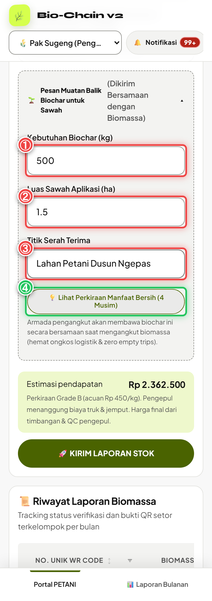
Panduan Aksi Berdasarkan Nomor pada Gambar:
- ① Kebutuhan Biochar (kg): ketik jumlah, contoh 500.
- ② Luas Sawah Aplikasi (ha): ketik luas lahan, contoh 1.5.
- ③ Titik Serah Terima: ketik lokasi penurunan, contoh "Lahan Petani Dusun Ngepas".
- ④ 💡 Lihat Perkiraan Manfaat Bersih (4 Musim): ketuk untuk melihat perkiraan tambahan panen, hemat pupuk, biaya
tebar, dan manfaat bersih selama 4 musim. Ini perkiraan, bukan janji panen.
Pesanan ikut terkirim saat Anda mengetuk 🚀 KIRIM LAPORAN STOK (terlihat di bawah gambar, bersama Estimasi pendapatan Rp 2.362.500 untuk Jual ke pengepul).
🔧 Di Balik Layar (Sistem): Tombol ④ memanggil
GET /api/v1/farmer/biochar/estimate?kg=500&land_area_ha=1.5→app/engines/biochar_field.py. Rumus (parameterbiochar_sawah.*): dosisr = kg/1000/luas(dibatasir_cap); kenaikan hasilf(r) = R_maks·(1 − e^(−k·r)); efek sisa N musimM = (1 − dᴺ)/(1 − d); manfaat bersih = tambahan pendapatan gabah + hemat pupuk − ongkos tebar. Saat laporan dikirim, kolombiochar_request_kg,biochar_land_area_ha,biochar_delivery_pointmembuat permintaan muatan balik yang diteruskan ke pengepul/driver (report_harvest,app/routers/farmer.py).
Layar 3.4b — Alokasi Abu & Evaluasi Mutu Biochar
Tujuan Proses & Standar Terkait: Menampilkan abu boiler yang dialokasikan ke kelompok tani Anda — hanya abu yang lolos uji logam berat (Pb, Cd, As ≤ ambang aman, mengacu Kepmentan 261/2019) — dan mencatat ulasan mutu biochar setelah diaplikasikan di sawah.
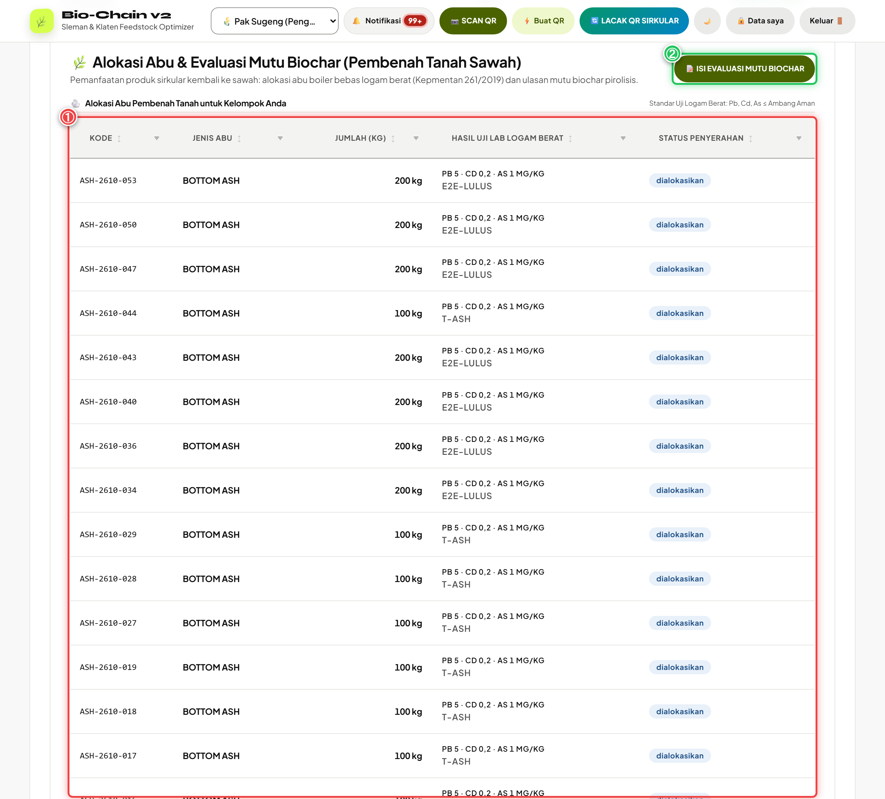
Panduan Aksi Berdasarkan Nomor pada Gambar:
- ① Tabel Alokasi Abu Pembenah Tanah untuk Kelompok Anda: tiap baris berisi Kode (contoh ASH-2610-053),
Jenis Abu (BOTTOM ASH), Jumlah (contoh 200 kg atau 100 kg), Hasil Uji Lab Logam Berat (contoh "Pb 5 · Cd 0,2
· As 1 mg/kg" + nomor laporan lab, mis. "E2E-LULUS" atau "T-ASH"), dan Status Penyerahan (contoh dialokasikan;
menjadi diserahkan setelah abu diterima kelompok).
- ② 📝 ISI EVALUASI MUTU BIOCHAR: ketuk untuk mengisi ulasan: kode batch, skor 1–5 untuk Ukuran Mesh,
Kematangan Pirolisis, Kadar Kelembapan, Dampak Kesuburan Tanah, plus catatan dampak di lahan.
- Tabel Evaluasi & Ulasan Mutu Biochar Lapangan ada di bawah tabel abu (gulir ke bawah; tidak terlihat di gambar):
riwayat ulasan dengan skor total "⭐ x / 5.0".
Tabel ini lebar; paling nyaman dilihat di tablet/desktop atau dengan HP dimiringkan (gambar diambil dari tampilan desktop).
🔧 Di Balik Layar (Sistem): Data abu dari
GET /api/v1/farmer/ash(app/routers/multibiomass.py, hanya untuk ketua kelompok tani yang menerima alokasi). Ulasan disimpan viaPOST /api/v1/farmer/biochar-evaluationsdan ditampilkan dariGETendpoint yang sama (app/static/field-ops.js,openBiocharEvaluationModal&loadBiocharEvaluations). Spesifikasi mutu biochar produk (H/Corg, logam berat) mengacu EBC/IBI dan dikelola di sisi pabrik (Bab 6).
3.5 Ketertelusuran, Hasil Uji Mutu & Grade, Pelacakan Pembayaran
Layar 3.5a — Riwayat Laporan, Grade & QR
Tujuan Proses & Standar Terkait: Melihat semua batch yang pernah dilaporkan beserta kode unik QR-nya, sebagai bukti asal-usul biomassa.
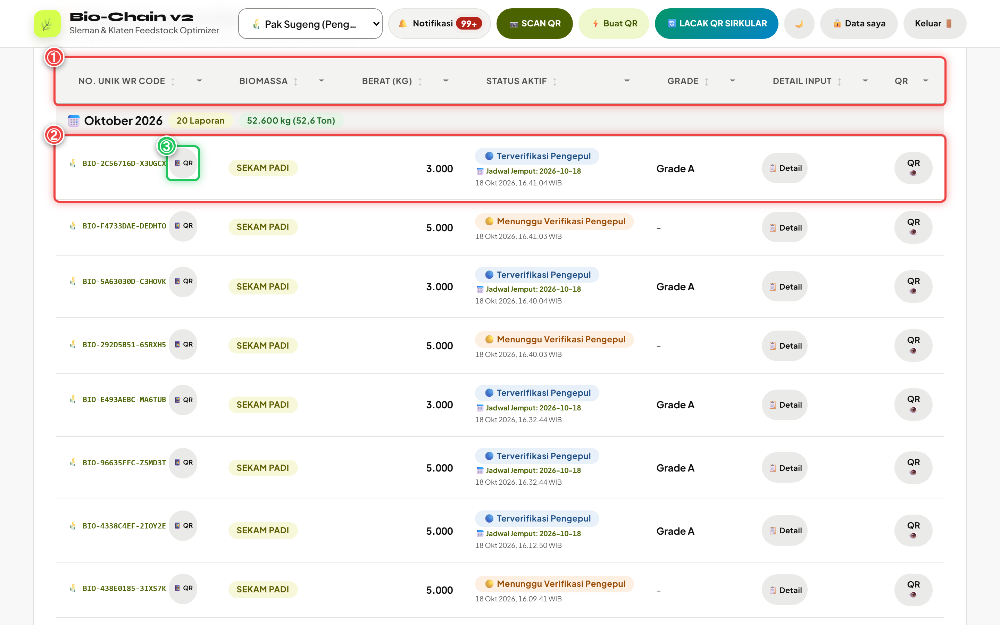
Panduan Aksi Berdasarkan Nomor pada Gambar:
- ① Judul kolom tabel: No. Unik WR Code, Biomassa, Berat (kg), Status Aktif, Grade, Detail Input, QR. Ketuk ↕
untuk mengurutkan, ikon saring untuk menyaring. Laporan dikelompokkan per bulan, contoh "Oktober 2026 · 20 Laporan ·
52.600 kg (52,6 Ton)".
- ② Satu baris laporan: contoh BIO-2C56716D-X3UGCX · SEKAM PADI · 3.000 kg · Terverifikasi Pengepul dengan
"Jadwal Jemput: 2026-10-18" · Grade A · tombol Detail. Lot yang belum diuji berstatus Menunggu Verifikasi
Pengepul dan kolom Grade masih "–".
- ③ 📱 QR: ketuk untuk menampilkan kode QR batch untuk ditunjukkan ke pengepul atau driver saat serah terima.
Tabel ini lebar; paling nyaman dilihat di tablet/desktop atau dengan HP dimiringkan (gambar diambil dari tampilan desktop). Di HP, geser tabel ke kanan.
🔧 Di Balik Layar (Sistem): Data dari
GET /api/v1/farmer/harvests. Kode QR batch dibuat sekali saat laporan dikirim dan disimpan sebagaiorigin_qr_code, sehingga tetap bisa dilacak walau batch kemudian berpindah tangan.
Layar 3.5b — Hasil Uji Mutu: Deviasi & Refraksi
Tujuan Proses & Standar Terkait: Transparansi: membandingkan taksiran Anda dengan timbangan dan uji mutu nyata pengepul, termasuk potongan berat (refraksi) dan alasan bila lot ditolak.
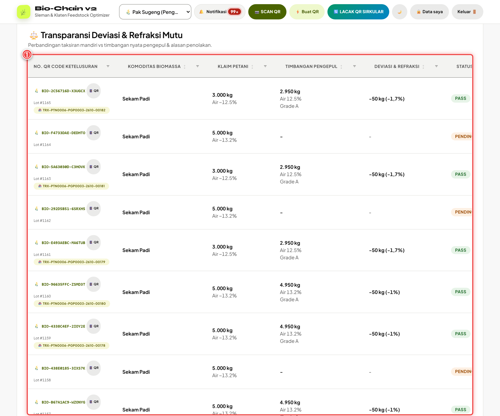
Panduan Aksi Berdasarkan Nomor pada Gambar:
- ① Tabel Transparansi Deviasi & Refraksi Mutu: tiap baris = satu lot. Contoh baris pertama: BIO-2C56716D-X3UGCX
(Lot #1165, resi serah terima TRX-PTN0006-PGP0003-2610-00182) · Sekam Padi · Klaim Petani 3.000 kg, air ~12,5 %
· Timbangan Pengepul 2.950 kg, air 12,5 %, Grade A · Deviasi & Refraksi −50 kg (−1,7 %) · Status PASS.
Lot BIO-4338C4EF-2IOY2E (Lot #1159): klaim 5.000 kg (air ~13,2 %) → timbangan 4.950 kg (air 13,2 %, Grade A),
deviasi −50 kg (−1 %). Lot yang belum ditimbang menampilkan "–" dan status PENDING. Kolom paling kanan (Status QC
dan tombol Aksi untuk membuka rincian "Ketelusuran Mutu & Refraksi Lot") ada di ujung kanan tabel.
- Di bawah tabel ini ada kartu ⭐ Reputasi & Keandalan Pengepul (skor ketepatan bayar & tempo bayar pengepul
terdekat) dengan tombol ⭐ Beri Rating Pengepul untuk menilai pengepul setelah transaksi (tidak terlihat di gambar).
Tabel ini lebar; paling nyaman dilihat di tablet/desktop atau dengan HP dimiringkan (gambar diambil dari tampilan desktop).
🔧 Di Balik Layar (Sistem): Data dari
GET /api/v1/farmer/qc-deviations(klaim, timbangan, deviasi kg/%, kadar air taksiran vs terukur, grade, alasan tolak). Berat yang dibayar dihitungapp/engines/refraction.py:
kg_bayar = kg_timbang × (1 − max(0, kontaminan − toleransi)) × (1 − MC) / (1 − MC_acuan)Tidak ada bonus bila lebih kering dari acuan (kecuali diaktifkan per transaksi). Bila MC di atas batas tolak (
harga_mutu.moisture_reject= 25 %), lot ditolak kecuali pengepul memilih "terima basah" secara eksplisit. Grade resmi A/B/C/D berasal dari skor mutuapp/engines/quality.py. Reputasi pengepul dariGET /api/v1/farmer/collector-reputations; rating disimpan viaPOST /api/v1/farmer/collector-ratings.
Layar 3.5c — Lacak QR Sirkular End-to-End
Tujuan Proses & Standar Terkait: Melacak perjalanan satu batch dari sawah → pengepul → driver → pabrik (pirolisis / abu) → muatan balik → sawah, dengan rantai sidik digital SHA-256. Pencatatan chain of custody ini selaras dengan prinsip ISO 22095 (bukan sertifikasi).
Panduan Aksi Berdasarkan Nomor pada Gambar:
- ① Kolom kode lot: ketik atau tempel kode QR batch, contoh BIO-F4733DAE-DEDHTO, lalu ketuk 🔍 LACAK (atau
tekan Enter). Tersedia tombol contoh "Lot #6 (Converted)", "Lot #25", "Muatan Balik #1".
- ② Lencana tahap (hasil): posisi batch dalam 6 tahap, contoh Tahap 1/6 untuk lot yang baru dilaporkan; bila
siklus tertutup menjadi "🟢 100% Sirkular Terpenuhi".
- ③ Ringkasan aliran massa & linimasa tahap: kartu Input Biomassa Sawah (5.000 kg Sekam Padi), Timbang Terima
Pabrik (4.750 kg), Biochar Dihasilkan (1.425 kg, yield ~30 %), Abu Sisa Pembakaran (688,8 kg), Kembali ke Sawah
(57 sak), dan Emisi CO₂ Dihindari (1.211,3 kg, metodologi IPCC Tier 2). Di bawahnya linimasa: Tahap 1 ✓ Selesai
(Pelaporan Stok Biomassa Petani), Tahap 2 dan 3 Menunggu.
⚠️ Untuk lot yang belum sampai pabrik (seperti contoh ini, Tahap 1/6), angka pabrik/biochar/abu/CO₂ adalah
proyeksi dari angka default sistem, bukan hasil timbang atau produksi nyata.
Di bagian bawah jendela ada SHA256 Chained Provenance Integrity (sidik digital rantai data; bila ada data yang diubah diam-diam, sidiknya tidak cocok), tombol 🖨 Cetak Paspor Sirkular, dan Tutup.
🔧 Di Balik Layar (Sistem):
GET /api/v1/traceability/circular/{kode}→app/services/circular_traceability.pymenggabungkan data panen, custody event, ledger biochar, konversi pabrik, surat jalan muatan balik, dan penebusan biochar. Bila konversi belum ada, yield biochar memakai default 30 % dan abu diperkirakan 14,5 % dari berat terima pabrik; bila timbang pabrik belum ada, berat pabrik diperkirakan 95 % berat pengepul. Sidik dihitunghashlib.sha256.
Layar 3.5d — Pembayaran & Kuitansi Saya
Tujuan Proses & Standar Terkait: Melacak uang muka (DP), kuitansi digital, dan pelunasan. Batas waktu bayar petani adalah maksimal 3 hari setelah biomassa ditimbang & diuji (lebih ketat dari target ≤ 14 hari); lewat batas ditandai terlambat.
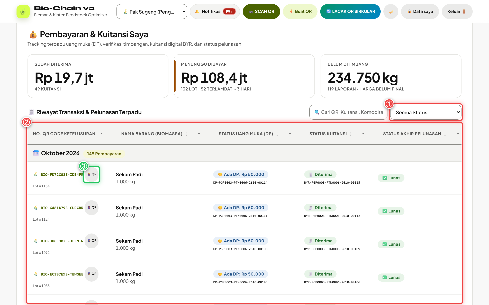
Panduan Aksi Berdasarkan Nomor pada Gambar:
Tiga kartu ringkasan di atas: - Sudah Diterima — Rp 19,7 jt · 49 kuitansi. - Menunggu Dibayar — Rp 108,4 jt · 132 lot · 52 terlambat > 3 hari. - Belum Ditimbang — 234.750 kg · 119 laporan · harga belum final.
Lalu di bagian Riwayat Transaksi & Pelunasan Terpadu:
- ① Filter status: pilih Semua Status, ✅ Sudah Lunas, ⏳ Menunggu Pelunasan, atau 🤝 Ada Uang Muka
(DP). Kolom pencarian di sebelahnya menerima kode QR, nomor kuitansi, atau nama komoditas.
- ② Tabel riwayat: dikelompokkan per bulan (contoh "Oktober 2026 · 149 Pembayaran"). Contoh baris:
BIO-FD72C03E-IDB4FR (Lot #1134) · Sekam Padi 1.000 kg · Ada DP: Rp 50.000 (DP-PGP0003-PTN0006-2610-00114)
· Status Kuitansi Diterima (BYR-PGP0003-PTN0006-2610-00115) · Status Akhir Lunas. Status lain yang mungkin
muncul: "⚪ Tanpa DP", "⏳ Menunggu Terbit", "⏳ Menunggu Pelunasan", "⏳ Belum Ditimbang". Di ujung kanan ada kolom
Nominal Net, Pengepul & Waktu, dan Aksi (tombol 🧾 Kuitansi / 🤝 Kuitansi DP untuk membuka kuitansi digital).
- ③ 📱 QR: ketuk untuk menampilkan kode QR lot asal pembayaran tersebut.
Tabel ini lebar; paling nyaman dilihat di tablet/desktop atau dengan HP dimiringkan (gambar diambil dari tampilan desktop).
🔧 Di Balik Layar (Sistem):
GET /api/v1/farmer/payments/overview→farmer_overview()diapp/services/payments.pymembagi lot menjadi tiga keranjang: dibayar (adaFarmerPayment+ kuitansi BYR), menunggu bayar (sudah diverifikasi, belum dibayar), dan belum ditimbang (statusREPORTED). Lot menunggu ditandailate = hari_menunggu > pasar.farmer_payment_due_days(default 3 hari, rentang 0–60, diatur di menu Parameter). Nilai bersih = bruto − PPh 22 (pajak.pph22_farmer_pct) − DP aktif. Tabel dirender olehrenderUnifiedPaymentTable()(app/static/field-ops.js→app/static/js/modules/field-kuitansi.js). Penanda terlambat tampil di kartu "Menunggu Dibayar"; tabel menampilkan status DP, kuitansi, dan lunas.
Tips Lapangan
| Situasi | Yang perlu dilakukan | Yang terjadi di sistem |
|---|---|---|
| Sinyal hilang saat kirim laporan Jual ke pengepul | Tetap ketuk Kirim Laporan Stok. | Muncul pesan "Sinyal hilang. Laporan disimpan di HP & dikirim otomatis saat online." Laporan masuk antrean (outbox) di IndexedDB HP (cadangan localStorage). |
| Banner kuning 📵 Mode Hemat Sinyal muncul di atas layar | Lanjutkan bekerja; jangan hapus data browser/cache aplikasi. | Banner menampilkan jumlah data antre (contoh "2 data antre"). Antrean dikirim otomatis saat sinyal kembali, saat aplikasi dibuka lagi, dan dicoba setiap 30 detik. |
| Sinyal kembali tapi data masih antre | Ketuk Kirim sekarang pada banner biru "📶 Sinyal tersedia". | flushOutbox() mengirim antrean berurutan; foto antrean diunggah dulu. Tiap laporan punya client_event_id sehingga tidak tercatat dobel. |
| Muncul banner 🔐 Sesi berakhir | Login ulang. | Antrean tetap aman di HP dan dikirim setelah login. |
| Data antre ditolak server | Baca pesan "Ditolak server (…)". | Data dipindah ke kotak gagal untuk ditinjau, tidak hilang diam-diam. |
| Ingin Lelang | Cari tempat bersinyal. | Lelang perlu sinyal agar pengepul bisa menawar langsung. |
| Kuota/sinyal lemah saat foto | Foto seperti biasa. | Foto otomatis dikecilkan ≤ 300 KB dan disimpan di HP bila offline. |
| Jam HP salah | Atur tanggal & jam HP otomatis. | Waktu catat offline divalidasi server terhadap CLIENT_CLOCK_MAX_PAST_HOURS (default 72 jam); di luar jendela itu jam HP tidak dipakai dan server memakai jam server. |
| Biomassa masih basah (MC > 18 %) | Jemur dulu sebelum lapor/serah. | Estimasi menampilkan "Berisiko ditolak"; di atas 25 % lot ditolak saat uji mutu. |
Bab 4 — Panduan Langkah demi Langkah Modul Pengepul / Agregator
Modul Pengepul dipakai oleh agregator (KUD, pedagang sekam, pemilik gudang) yang membeli biomassa dari petani,
menimbang dan menguji mutunya, mengatur rute jemput, membayar petani, lalu menjual dan mengirim ke pabrik.
Semua layar di bab ini diambil pada laptop/desktop (1440 × 900) dengan akun demo Pak Ahmad (KUD Tani …).
Pengepul demo ini dikunci ke satu komoditas (Sekam Padi). Sistem menolak tawaran atau verifikasi untuk
komoditas lain dengan pesan "Isolasi spesialisasi" (app/services/trade.py → place_bid, app/routers/collector.py → verify_harvest).
Alur kerja harian pengepul:
- 4.1 Lihat penawaran petani, kirim tawaran lelang, periksa margin kontrak.
- 4.2 Susun rute jemput yang memperhitungkan berat dan volume bak, termasuk muatan balik biochar.
- 4.3 Timbang dan uji mutu di lokasi, terbitkan resi TRX, lalu bayar petani (DP atau lunas).
- 4.4 Ajukan pengiriman ke pabrik, pantau piutang, dan baca umpan balik QC gerbang pabrik.
4.1 Dashboard Konsolidasi, Bursa Lelang & Margin Kontrak
Layar 4.1a — Dashboard Penawaran Biomassa Petani (tiga jalur masuk)
Tujuan Proses & Standar Terkait: Menyatukan semua biomassa yang ditawarkan petani dalam satu dashboard. Penawaran dibagi menurut cara transaksi dan cara angkut, supaya pengepul tahu lot mana yang harus dijemput, ditawar, atau ditunggu. Setiap lot membawa nomor QR ketelusuran yang menjadi awal rantai chain of custody (selaras ISO 22095).
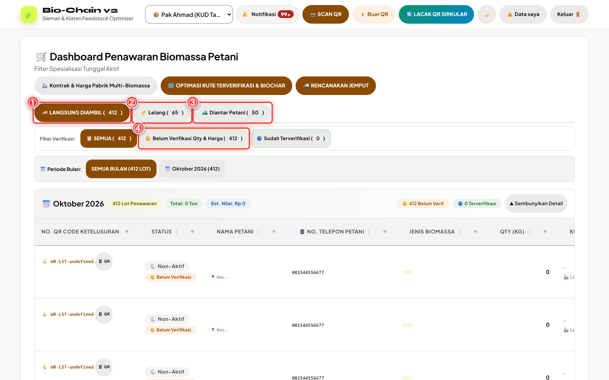
Panduan Aksi Berdasarkan Nomor pada Gambar: - ① Tab "LANGSUNG DIAMBIL" (412): lot yang dijual langsung oleh petani dengan skema dijemput armada. Pada gambar, tab ini sedang aktif. Kartu bulan "Oktober 2026" menampilkan "412 Lot Penawaran". Dari sinilah lot masuk ke antrean timbang dan uji (Layar 4.3a). - ② Tab "Lelang" (65): stok yang dilelang petani di Bursa Lelang. Di sini Anda mengirim tawaran harga (Layar 4.1b). - ③ Tab "Diantar Petani" (50): lot yang diantar sendiri oleh petani ke gudang Anda, jadi tidak perlu dijemput. - ④ Filter "Belum Verifikasi Qty & Harga" (412): menyaring lot yang berat dan harganya belum Anda konfirmasi. Di sampingnya ada "SEMUA (412)" dan "Sudah Terverifikasi (0)". Baris "Periode Bulan" menyaring per bulan ("SEMUA BULAN (412 LOT)", "Oktober 2026 (412)").
Catatan data contoh: baris tabel pada gambar menampilkan kode "WR-LST-undefined", status Non-Aktif, dan Qty 0, dan ringkasan bulan menunjukkan "Total: 0 Ton · Est. Nilai: Rp 0". Ini cacat tampilan data demo, bukan isi lot yang sebenarnya.
Tombol di atas tab: Kontrak & Harga Pabrik Multi-Biomassa (Layar 4.1c), OPTIMASI RUTE TERVERIFIKASI & BIOCHAR (Layar 4.2a), dan RENCANAKAN JEMPUT (rencana jemput cepat dari tawaran lelang yang sudah diterima petani).
🔧 Di Balik Layar (Sistem): Data diambil dari
GET /api/v1/collector/offers-dashboard(app/routers/collector_bidding.py) lewat fungsiloadMarket()diapp/static/app.js. Server mengelompokkan lot menjadilangsung_diambil,lelang, dandiantar_petani. Stok lelang hanya muncul untuk komoditas spesialisasi pengepul, diurutkan dari yang paling dekat ke gudang. Tombol WA pada setiap baris membuka WhatsApp ke petani. Nomor HP diambil lewatGET /collector/harvests/{id}/contact, dan setiap akses tercatat sesuai kontrol privasi PDP (masking di daftar, nomor lengkap hanya saat diminta).
Layar 4.1b — Tab Bursa Lelang: Mengirim Tawaran
Tujuan Proses & Standar Terkait: Pengepul mengajukan harga beli untuk stok yang dilelang petani. Keputusan tetap ada di tangan petani. Server menolak tawaran di bawah harga minimum (reserve price) yang dipasang petani.
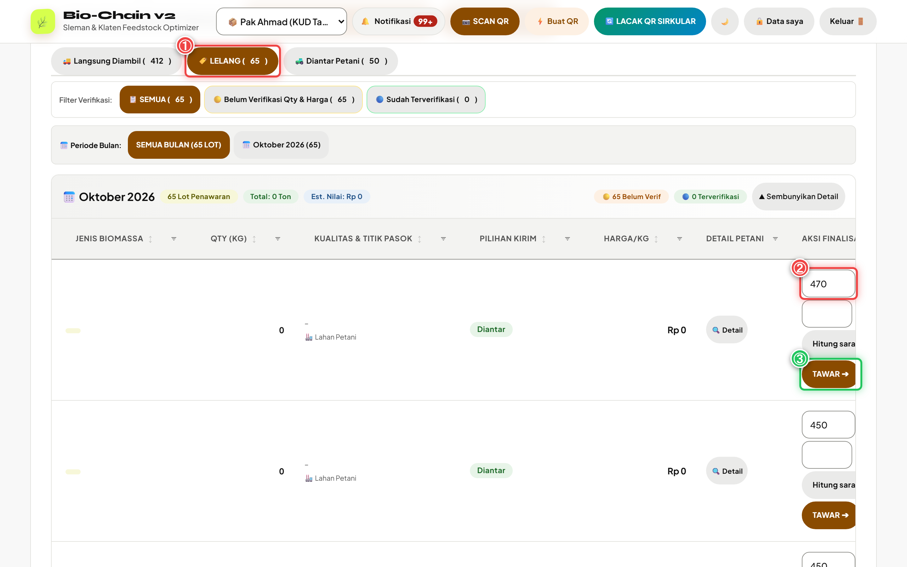
Panduan Aksi Berdasarkan Nomor pada Gambar: - ① Tab "LELANG (65)": klik untuk membuka daftar stok lelang. Kolom tabel: Jenis Biomassa, Qty (kg), Kualitas & Titik Pasok, Pilihan Kirim, Harga/kg, Detail Petani, dan Aksi Finalisasi. - ② Kotak harga tawaran (Rp/kg): ketik harga beli Anda, contoh 470. Kotak kosong di bawahnya untuk jumlah kg (boleh sebagian dari stok). Tombol Hitung saran (penasihat harga) mengisi otomatis harga yang masih menguntungkan. Contoh data skenario: stok 3.000 kg, harga minimum petani Rp450/kg (dijemput), tawaran Rp470/kg. - ③ TAWAR ➔: kirim tawaran. Muncul notifikasi "Tawaran terkirim. Petani yang memutuskan." Harga di bawah harga minimum petani ditolak dengan pesan berisi angka minimumnya.
Catatan data contoh: baris pada gambar menampilkan Qty 0, Harga/kg Rp 0, dan Pilihan Kirim "Diantar". Ini cacat data demo yang sama dengan Layar 4.1a.
🔧 Di Balik Layar (Sistem): - Anti klik-ganda: tombol dibungkus
withBusy()(app/static/app.js). Selama permintaan berjalan, tombol dinonaktifkan dan klik kedua diabaikan (btn.dataset.busy === "1"). - Satu tawaran aktif per pengepul per skema:trade.place_bid(app/services/trade.py) menarik otomatis (statusWITHDRAWN) tawaran aktif sebelumnya dari pengepul yang sama pada lot dan skema yang sama, lalu membuat yang baru. Validasi yang dijalankan: lot masih terbuka dan belum kedaluwarsa, harga ≥ reserve petani, dan jumlah ≤ sisa stok. - Penerimaan atomik (CAS): saat petani menerima tawaran (trade.accept_bid), stok dikurangi dengan compare-and-swapUPDATE … WHERE remaining_kg >= qty AND status IN (OPEN, PARTIAL). Tawaran dikunci sekali pakai (WHERE status = ACTIVE). Jika dua penerimaan datang bersamaan, yang kalah mendapat pesan "Sisa stok tidak mencukupi atau listing sudah ditutup — muat ulang data". Pada PostgreSQL dipakai fungsiaccept_bid_atomic(migrasi 013,SELECT … FOR UPDATE). Ketika stok habis, tawaran lain otomatis berstatusREJECTED. - Penasihat harga (POST /collector/bid-advisor):tawaran_maks = harga_jual_ke_pabrik − biaya_logistik_marginal/kg − margin/kg. Biaya logistik marginal = (km rute dengan lot ini − km rute tanpa lot ini) × Rp/km ÷ kg, dihitung oleh mesin ruteapp/engines/routing.py(konsep insertion cost).
Layar 4.1c — Modul Kontrak & Harga Jual Multi-Biomassa (margin agregator)
Tujuan Proses & Standar Terkait: Mencatat harga beli ke petani dan harga jual ke pabrik mitra untuk tiap komoditas, supaya margin pengepul terlihat transparan. Margin ini dipakai sebagai dasar perhitungan tawaran yang adil bagi petani dan pengepul.
Panduan Aksi Berdasarkan Nomor pada Gambar: - ① Harga Beli Petani (Rp/kg): isi harga acuan beli. Contoh baris Sekam Padi: 450. - ② Harga Jual Pabrik (Rp/kg): isi harga kontrak dengan offtaker. Contoh: 580 (PT Bio-Energi Sleman). - ③ Baris komoditas (hasil): kolom Margin Laba dihitung otomatis = 580 − 450 = +Rp130/kg. Komoditas lain pada gambar: Tongkol Jagung 380/520 (+Rp140), Ampas Tebu 260/390 (+Rp130), Serbuk Sengon 320/470 (+Rp150), Serbuk Karet 300/460 (+Rp160), Tempurung/Sabut Kelapa 500/780 (+Rp280). - ④ Simulasi Margin Truk: membuka form proyeksi satu ritase. Isinya pilihan komoditas, muatan (ton, default 5), jarak ke pabrik (km, default 35), dan biaya truk per km (default Rp4.500). Klik SIMPAN PERUBAHAN KONTRAK setelah mengubah harga.
🔧 Di Balik Layar (Sistem): - Simulasi margin truk (
openSimulateTruckMarginModal,app/static/app.js):laba_bersih = kg × (harga_jual − harga_beli) − km × biaya_per_km. Contoh: 5.000 kg × Rp130 − 35 km × Rp4.500 = Rp650.000 − Rp157.500 = Rp492.500 per ritase. - Margin proporsional: penasihat tawaran (Layar 4.1b) mengambil margin dalam bentuk persen dari tabel ini, bukan angka rupiah tetap, sehingga margin naik-turun mengikuti harga. Server menghitungmargin_per_kg = harga_jual × margin_pct / 100(collector_bidding.py→bid_advisor). Nilai default parameter:pasar.default_margin_pct= 5 % danpasar.default_margin_per_kg= Rp30/kg. - Tabel kontrak ini disimpan di browser perangkat (localStorage, kuncibiochain_factory_pricing_v1), bukan di server. Jika pengepul berganti HP/laptop, harga harus diisi ulang. Harga yang mengikat pabrik tetap mengikuti ajuan pengiriman (Layar 4.4a).
4.2 Optimasi Rute Angkut Berbasis Volume & Muatan Balik Biochar
Mengapa volume penting? Sekam padi sangat ringan, dengan densitas curah ±110–120 kg/m³. Truk CDD 5.000 kg / 30 m³ yang diisi sekam akan penuh secara volume (30 m³ × 120 kg/m³ = 3.600 kg) jauh sebelum batas beratnya tercapai. Karena itu rute di Bio-Chain dihitung dengan dua batas sekaligus: kg dan m³ bak.
Layar 4.2a — Pilih Armada, Batas Muatan & Lot Terverifikasi
Tujuan Proses & Standar Terkait: Menyusun penjemputan multi-titik khusus untuk lot yang sudah terverifikasi pengepul, dengan memeriksa kapasitas berat dan volume truk. Muatan balik biochar ke sawah ikut diperhitungkan.
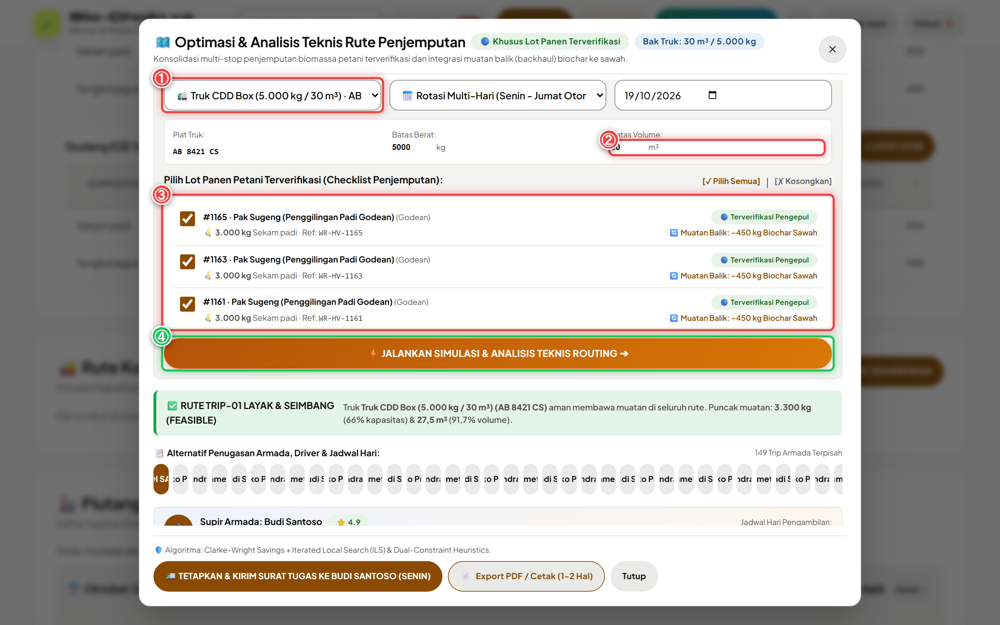
Panduan Aksi Berdasarkan Nomor pada Gambar: - ① Pilihan armada: pilih truk, misalnya "Truk CDD Box (5.000 kg / 30 m³) · AB 8421 CS". Plat, Batas Berat (5000 kg), dan Batas Volume terisi otomatis dari preset armada. Di sebelahnya ada pilihan jadwal ("Rotasi Multi-Hari (Senin – Jumat …)") dan tanggal jemput (19/10/2026). - ② Batas Volume (m³): kotak isian kapasitas bak, bersebelahan dengan Batas Berat. Untuk truk CDD nilainya 30 m³ (lencana di judul modal: "Bak Truk: 30 m³ / 5.000 kg"). Boleh diubah bila bak diberi tambahan pagar/jaring. - ③ Checklist lot terverifikasi: centang lot yang akan dijemput. Contoh: #1165, #1163, dan #1161 milik Pak Sugeng (Penggilingan Padi Godean), masing-masing 3.000 kg sekam padi (Ref WR-HV-1165 dst.), semua berlabel "Terverifikasi Pengepul". Label "Muatan Balik: ~450 kg Biochar Sawah" adalah perkiraan 15 % dari berat lot. Gunakan [✓ Pilih Semua] / [X Kosongkan] untuk memilih cepat. - ④ JALANKAN SIMULASI & ANALISIS TEKNIS ROUTING: klik untuk menghitung. Hasilnya muncul di bawah: banner "RUTE TRIP-01 LAYAK & SEIMBANG (FEASIBLE)" dengan puncak muatan 3.300 kg (66 % kapasitas) dan 27,5 m³ (91,7 % volume), daftar alternatif armada/driver/hari ("149 Trip Armada Terpisah"), lalu tombol TETAPKAN & KIRIM SURAT TUGAS KE BUDI SANTOSO (SENIN) dan Export PDF / Cetak.
🔧 Di Balik Layar (Sistem): Modal ini (
app/static/js/modules/route-optimization-modal.js) mengirimPOST /api/v1/collector/consolidated-pickup-plan(app/routers/collector_logistics.py) denganharvest_ids,truck_max_kg, dantruck_max_m3. Server mengubah berat menjadi volume (V = kg ÷ ρ) lalu memanggil Engine ⑤plan_routes()diapp/engines/routing.pydenganmode="auto": - ≤ 10 titik → exact (Held-Karp + DP set-partitioning), solusi optimal terbukti. - > 10 titik → Clarke-Wright Savings granular + local search (relocate, swap, 2-opt) + iterated local search (ruin & recreate) dalam anggaran waktu.Rumus savings Clarke-Wright (1964):
s(i,j) = d(0,i) + d(0,j) − d(i,j). Artinya, menjemput titik i dan j dalam satu trip menghemat jarak sebesar s dibanding dua trip terpisah dari gudang (titik 0). Pasangan diurutkan dari s terbesar dan digabung hanya jikaV_rute_i + V_rute_j ≤ Q(volume bak). Jarak = haversine × faktor jalanlogistik.road_factor(1,3). Lot yang volumenya melebihi satu bak dipecah: trip penuh langsung ditambah sisa yang ikut solver, dengan rumustrip_langsung = ⌈V/Q⌉ − 1.Setelah rute terbentuk, server mensimulasikan beban per stop: truk berangkat membawa biochar, menurunkan biochar di petani, lalu memuat biomassa. Rute dinilai feasible bila puncak berat ≤
truck_max_kgdan puncak volume ≤truck_max_m3. Densitas yang dipakai di endpoint ini: biomassa 120 kg/m³ dan biochar 300 kg/m³. Parameter umum sistemlogistik.bulk_density_kg_m3bernilai default 110 kg/m³.Pembanding OR-Tools:
app/engines/routing_ortools.py(Google OR-Tools, konstruksi PATH_CHEAPEST_ARC + Guided Local Search) memodelkan dua dimensi kapasitas sekaligus, yaituVolume(m³) danWeight(kg,logistik.vehicle_payload_kg= 5.000). Fungsi tujuannya adalah gram CO₂e dengan biaya busur yang memperhitungkan muatan. OR-Tools dipakai pada modeortoolsdiPOST /api/v1/routes/optimizedan pada alokasi armada pabrikPOST /factory/dispatch/optimize. Modal pengepul ini sendiri memakai Engine ⑤ (mode auto), sesuai keterangan di kaki modal: "Algoritma: Clarke-Wright Savings + Iterated Local Search (ILS) & Dual-Constraint Heuristics".
Layar 4.2b — Hasil Rute: KPI Volume, Peta & Muatan Balik
Tujuan Proses & Standar Terkait: Memastikan rute aman secara kapasitas dan menunjukkan penghematan jarak sebelum surat tugas dikirim ke driver. Jarak dan muatan menjadi dasar estimasi emisi transport (ISO 14083 di sisi driver).
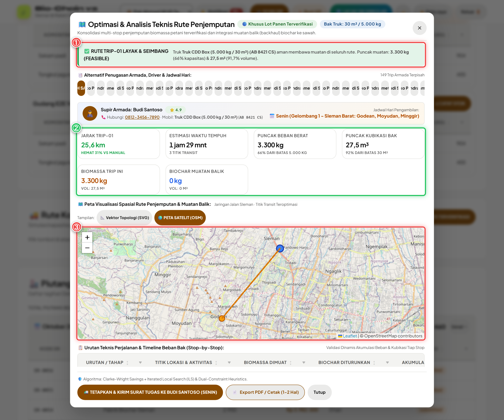
Panduan Aksi Berdasarkan Nomor pada Gambar: - ① Banner kelayakan: "RUTE TRIP-01 LAYAK & SEIMBANG (FEASIBLE)", dengan keterangan "Truk CDD Box (5.000 kg / 30 m³) (AB 8421 CS) aman membawa muatan di seluruh rute. Puncak muatan: 3.300 kg (66% kapasitas) & 27,5 m³ (91,7% volume)". Jika melewati batas, banner berubah merah menjadi peringatan overload dengan saran membagi ke multi-armada. Di bawahnya ada kartu Supir Armada: Budi Santoso (★ 4.9, telepon, jenis mobil) dan Jadwal Hari Pengambilan: Senin (Gelombang 1 – Sleman Barat: Godean, Moyudan, Minggir). - ② Baris KPI trip (hasil): Jarak TRIP-01 25,6 km ("Hemat 31% vs manual"), Estimasi Waktu Tempuh 1 jam 29 mnt (3 titik transit), Puncak Beban Berat 3.300 kg (66 % dari batas 5.000 kg), Puncak Kubikasi Bak 27,5 m³ (92 % dari batas 30 m³), Biomassa Trip Ini 3.300 kg (vol 27,5 m³), dan Biochar Muatan Balik 0 kg (vol 0 m³). - ③ Peta Visualisasi Spasial: tampilan PETA SATELIT (OSM) (Leaflet) atau Vektor Topologi (SVG). Garis oranye menghubungkan titik jemput dan gudang di wilayah Sleman (Godean ↔ Pandowo Harjo).
Di bawah peta ada tabel Urutan Teknis Perjalanan & Timeline Beban Bak (Stop-by-Stop) dengan kolom Urutan/Tahap, Titik Lokasi & Aktivitas, Biomassa Dimuat, Biochar Diturunkan, dan Akumulasi. Baris yang melewati batas ditandai merah. Setelah dicek, klik TETAPKAN & KIRIM SURAT TUGAS untuk menugaskan driver, atau Export PDF / Cetak untuk manifest 1–2 halaman.
🔧 Di Balik Layar (Sistem): - Muatan balik (backhaul): biochar baru dihitung bila permintaan biochar petani (
biochar_backhaul_requests) ikut dikirim. Volume biochar = kg ÷ 300 kg/m³. Biochar diturunkan di petani pemesan sehingga ruang bak bertambah untuk biomassa yang dimuat. Pada data contoh ini nilainya 0 kg karena modal belum mengirim daftar permintaan biochar. Angka "~450 kg" pada checklist Layar 4.2a hanya perkiraan tampilan (15 %). - "Hemat … % vs manual" di kartu KPI dihitung di layar terhadap jarak acuan = jarak rute × 1,45, sehingga nilainya selalu ±31 % (indikatif). Penghematan yang benar-benar dihitung solver terhadap trip langsung per titik ada disummary.saving_pctEngine ⑤ (dipakai di Rencana Jemput dan/routes/optimize). - Estimasi waktu = jarak ÷ 35 km/jam + 15 menit per stop.
4.3 Uji Cepat Lapangan, Timbang Aktual, Resi TRX & Pembayaran Petani
Layar 4.3a — Uji Mutu Lapangan, Timbang Aktual & Grade Otomatis
Tujuan Proses & Standar Terkait: Menetapkan berat aktual dan mutu biomassa di lokasi petani sebagai dasar harga. Harga dihitung dari timbangan pengepul, bukan dari estimasi petani. Inilah prosedur "Uji Cepat Lapangan": sebuah prosedur kerja memakai form Uji Mutu ini (kadar air wajib dengan moisture meter, kontaminan ditaksir visual, abu/VM/FC opsional dari lab). Aplikasi tidak memiliki timer atau label "15 menit". Durasi uji adalah target prosedur di lapangan.
Sebelum mengisi form, klik tombol UJI pada baris lot di tabel antrean kiri (lot Sekam padi 3.000 kg atau 5.000 kg, taksiran petani 12,5 % / 13,2 %). Tombol cokelat di bawah form berubah menjadi "VERIFIKASI MUTU #1164 ➔".
Panduan Aksi Berdasarkan Nomor pada Gambar: - ① Berat Timbangan Pengepul (kg): ketik hasil timbang aktual, contoh 4950 (petani melapor 5.000 kg). Tombol cepat −50 / +50 / +100 / +500 / +1 ton / +1 truk membantu koreksi tanpa mengetik. - ② Kadar Air (% bb) — wajib: baca dari moisture meter, contoh 13.2. Kolom Kadar Abu (% bk), Volatile Matter (%), dan Fixed Carbon (%) bertanda "opsional · uji lab". Biarkan kosong bila tidak ada hasil lab. - ③ Kontaminan (%): taksiran pasir/batu/plastik, contoh 0.5. Suhu Pirolisis default 500 °C. Foto bukti bisa diisi lewat URL Foto Bukti Serah-Terima (opsional) atau tombol Ambil foto. - ④ Preview Mutu: kotak bertuliskan "Grade A · Skor 91.2 · Pengali Harga ×1.10". Catatan jujur: teks ini adalah contoh statis bawaan form dan tidak dihitung ulang saat angka diketik. Grade resmi baru keluar setelah tombol ⑤ ditekan dan tampil di resi (Layar 4.3b). - ⑤ VERIFIKASI MUTU #1164 ➔: klik untuk mengirim hasil timbang dan uji. Jika mutu tidak layak, gunakan Tolak lot (sebutkan penyebab) dan pilih kategori: terlalu basah, berjamur, kontaminan, selisih berat, stok tidak ada, atau lainnya.
🔧 Di Balik Layar (Sistem):
POST /api/v1/collector/verify(app/routers/collector.py) memanggilscore_sample()diapp/engines/quality.py: - Skor komponen linear: kadar air (idealharga_mutu.moisture_best= 10 %, tolak >harga_mutu.moisture_reject= 25 %) dan kontaminan (ideal 1 %, tolak > 10 %). Abu dan fixed carbon ikut dinilai hanya bila diisi, dan bobot dinormalisasi atas komponen yang terukur. - Grade hasil verifikasi pengepul: skor ≥harga_mutu.grade_A_min(80) → A, ≥grade_B_min(60) → B, di bawahnya → C. Jika melewati batas tolak → TOLAK (tidak dibeli). Grade D hanya muncul pada estimasi petani di form lapor (aturan kadar air: ≤ 12 → A, ≤ 15 → B, ≤ 18 → C, > 18 → D). - Harga ke petani (metode defaultharga_mutu.pricing_method = basis_kering,quality.farmgate_price):harga/kg = harga_dasar × (1 − M) / (1 − M_acuan),kg_bayar = timbangan × (1 − kontaminan),total = kg_bayar × harga/kg. M_acuan =harga_mutu.reference_moisture_pct(12 %). Untuk lot lelang dipakai harga kesepakatan, dan hanya ada potongan bila lebih basah dari kontrak. Contoh pada gambar (harga dasar Rp450/kg): 450 × (1 − 0,132)/(1 − 0,12) = Rp443,86/kg; kg bayar = 4.950 × (1 − 0,005) = 4.925,25 kg; total ≈ Rp2.186.121, sama dengan angka di resi. - Pengiriman memakaiapiMutationdenganclient_event_id. Bila tanpa sinyal, hasil uji disimpan di antrean HP ("Offline: hasil uji disimpan & dikirim otomatis saat online"), dan pengulangan dari antrean tidak menggandakan data. Status lot:REPORTED → VERIFIEDdengan custody eventCOLLECTOR_WEIGH.
Layar 4.3b — Resi Serah-Terima TRX & QR (Chain of Custody)
Tujuan Proses & Standar Terkait: Memberi petani bukti serah-terima yang unik dan bisa dipindai. Resi ini menyambung QR asal lot ke tahap berikutnya (driver → pabrik), sesuai prinsip ketertelusuran chain of custody ISO 22095.
Panduan Aksi Berdasarkan Nomor pada Gambar: - ① Judul "Resi Serah-Terima Sekam": muncul otomatis setelah verifikasi berhasil. Tunjukkan QR 2D ini kepada sopir armada atau mitra logistik untuk dipindai. - ② Kode resi (hasil): TRX-PTN0006-PGP0003-2610-00183 dengan ringkasan "4.950 kg · Grade A · Rp 2.186.121". Kotak "Rantai Ketelusuran Batch" menampilkan Kode Dokumen, QR Code Asal BIO-F4733DAE-DEDHTO, Batch Referensi WR-HV-1164, rincian muatan (sekam_padi · 4.950 kg · Grade A), dan alur mutasi Pelaporan Awal → Lelang → Timbang TRX → Pabrik. Tombol: TELUSURI SILSILAH SIRKULAR PENUH, Salin Teks, UNDUH GAMBAR QR, Cetak.
🔧 Di Balik Layar (Sistem): Format kode
TRX-<pengirim>-<penerima>-<YYMM>-<urut bulanan>(PTN0006 = petani, PGP0003 = pengepul, 2610 = Oktober 2026, 00183 = nomor urut). Kode dibuat server saat verifikasi dan dicatat sebagai custody event. Tombol telusuri membuka modal Lacak QR Sirkular (sama dengan Bab 3.5) yang menampilkan rantai sawah → pengepul → pabrik → abu/biochar → sawah beserta hash rantainya.
Layar 4.3c — Instruksi Pembayaran ke Petani (DP / Lunas) & SLA
Tujuan Proses & Standar Terkait: Membayar petani tepat waktu dan tercatat. SLA bayar petani di Bio-Chain adalah maksimal 3 hari setelah lot ditimbang (lebih ketat dari target ≤ 14 hari).
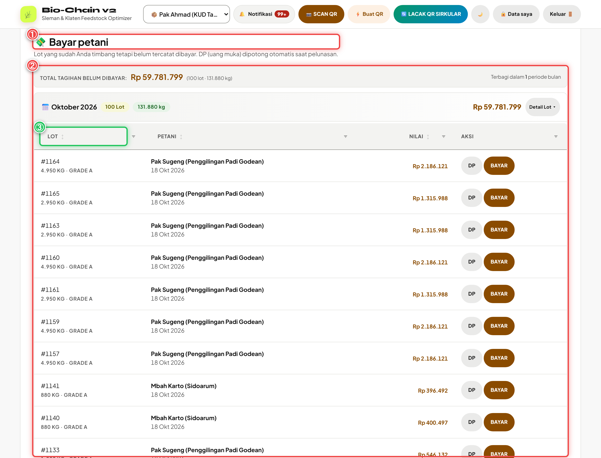
Panduan Aksi Berdasarkan Nomor pada Gambar:
- ① Kartu "💸 Bayar petani": berisi lot yang sudah Anda timbang tetapi belum tercatat dibayar. Keterangannya: "DP
(uang muka) dipotong otomatis saat pelunasan."
- ② Ringkasan dan tabel lot: TOTAL TAGIHAN BELUM DIBAYAR: Rp 59.781.799 (100 lot · 131.880 kg), terbagi dalam
1 periode bulan. Grup Oktober 2026 berisi 100 lot, 131.880 kg, dan bisa dibuka lewat "Detail Lot ▾". Contoh baris:
- #1164 · 4.950 kg · Grade A · Pak Sugeng (Penggilingan Padi Godean) · 18 Okt 2026 · Rp 2.186.121 (lot dari
Layar 4.3b)
- #1165 · 2.950 kg · Grade A · Rp 1.315.988
- #1141 · 880 kg · Grade A · Mbah Karto (Sidoarum) · Rp 396.492
- ③ Kolom Lot dan tombol aksi per baris: kolom Lot memuat #ID, kg, dan Grade. Pada gambar, kotak ③ menandai
judul kolom LOT, bukan tombolnya. Di ujung kanan setiap baris ada dua tombol:
- DP: mencatat uang muka. Hanya untuk lot yang belum diangkut, maksimal pasar.dp_max_pct = 30 % dari
perkiraan nilai lot.
- BAYAR: pelunasan. Pilih metode (tunai/transfer/QRIS). No. referensi wajib untuk selain tunai.
Setelah dicatat, muncul Kuitansi bayar petani dengan kode kuitansi, nilai bersih, serta rincian bruto − pajak −
DP untuk diberikan atau difoto petani.
🔧 Di Balik Layar (Sistem): Daftar diambil dari
GET /collector/unpaid-harvests. Pembayaran dicatat lewatPOST /collector/harvests/{id}/pay-farmerdan DP lewatPOST /collector/harvests/{id}/pay-dp(app/services/payments.py). - DP dipotong otomatis saat pelunasan. Jika DP melebihi nilai timbangan, sisanya dicatat sebagai kewajiban petani untuk mengembalikan. - DP dan pelunasan untuk lot yang sama diserialkan dengan kunci baris harvest (lock_row), sehingga petani tidak bisa menerima DP + pelunasan penuh akibat klik bersamaan. Kiriman ganda DP ditolak ("baru saja tercatat"). - Pajak (PPh 22 petani) dihitung server bila parameterpajak.pph22_farmer_pctdiisi. - SLA: parameterpasar.farmer_payment_due_days(default 3 hari, rentang 0–60). Lot terverifikasi yang belum dibayar melewati batas ini ditandai terlambat di menu Pembayaran petani (Bab 3.5). Keterlambatan juga masuk indikator sosial ESG dan temuan efisiensi P8 "Pembayaran petani terlambat".
4.4 Pengiriman ke Pabrik, Piutang, Muatan Balik & Umpan Balik QC
Layar 4.4a — Ajukan Pengiriman ke Pabrik (Dijemput Armada Pabrik / Antar Mandiri)
Tujuan Proses & Standar Terkait: Pengepul mengajukan Delivery Request (DR) ke pabrik: berapa kg, mutu, tanggal, dan harga. Pabrik bisa menerima, menawar balik, atau menolak (Bab 6.1). Lot petani yang dilampirkan memastikan bagian biochar sirkular kembali ke dompet petani yang bersangkutan.
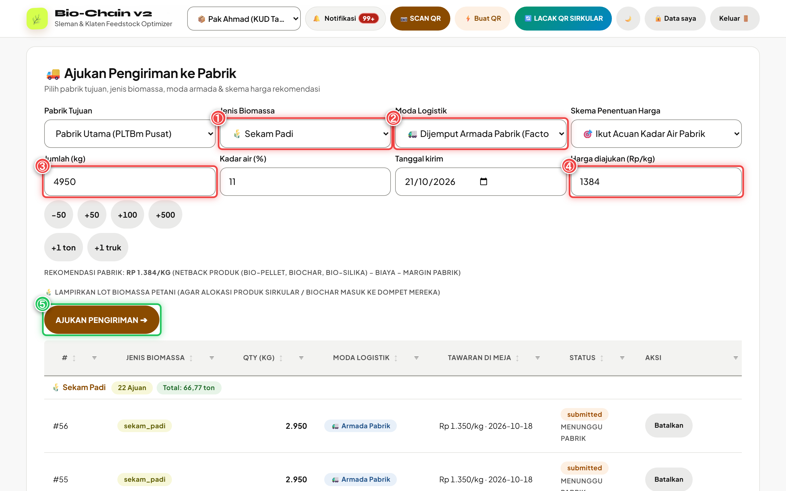
Panduan Aksi Berdasarkan Nomor pada Gambar: - ① Jenis Biomassa: pilih Sekam Padi. Pabrik Tujuan: Pabrik Utama (PLTBm Pusat). - ② Moda Logistik: - Dijemput Armada Pabrik (Factory Fleet): truk pabrik yang menjemput ke gudang Anda. - Antar Mandiri Pengepul (Self-Delivery Slip): Anda mengirim sendiri dengan truk pengepul. Skema Penentuan Harga: Ikut Acuan Kadar Air Pabrik atau Tawar Bebas. - ③ Jumlah (kg): contoh 4950 (sama dengan hasil timbang di Layar 4.3a). Tersedia tombol cepat −50 … +1 truk. Kadar air (%) contoh 11, Tanggal kirim 21/10/2026. - ④ Harga diajukan (Rp/kg): terisi otomatis dengan harga rekomendasi, contoh 1384. Di bawahnya tampil "REKOMENDASI PABRIK: RP 1.384/KG (netback produk bio-pellet, biochar, bio-silika − biaya − margin pabrik)". Ubah angkanya bila ingin menawar lain (pilih skema "Tawar Bebas"). Buka "Lampirkan lot biomassa petani" untuk mengaitkan lot petani. - ⑤ AJUKAN PENGIRIMAN ➔: kirim ajuan. Ajuan masuk ke tabel di bawah dengan status awal submitted / MENUNGGU PABRIK (contoh #56 dan #55, masing-masing 2.950 kg, Armada Pabrik, Rp 1.350/kg · 2026-10-18). Ajuan yang masih menunggu bisa Batalkan. Ajuan yang disetujui pabrik berstatus accepted. Ringkasan grup: "Sekam Padi · 22 Ajuan · Total 66,77 ton".
🔧 Di Balik Layar (Sistem):
POST /api/v1/collector/delivery-requests→factory_ops.submit_request(app/services/factory_ops.py). Fieldlogistics_carrierbernilaiFACTORY_FLEET | COLLECTOR_SELFdanpricing_modebernilaiFACTORY_PRICE | AUCTION. Rekomendasi harga diambil dariGET /collector/factory-price(factory_ops.factory_price_preview) untuk kadar air yang diisi. Negosiasi berjalan lewatPOST /delivery-requests/{id}/respond(accept | counter | reject | cancel). Berat yang menentukan tagihan adalah hasil jembatan timbang di gerbang pabrik (Gross − Tare = Net, Bab 6.1), bukan angka ajuan ini.
Layar 4.4b — Rute Konsolidasi & Muatan Balik, Piutang Pabrik & Status DR
Tujuan Proses & Standar Terkait: Memantau uang yang masih harus dibayar pabrik (piutang) beserta umurnya, dan membuka modul rute muatan balik biochar.
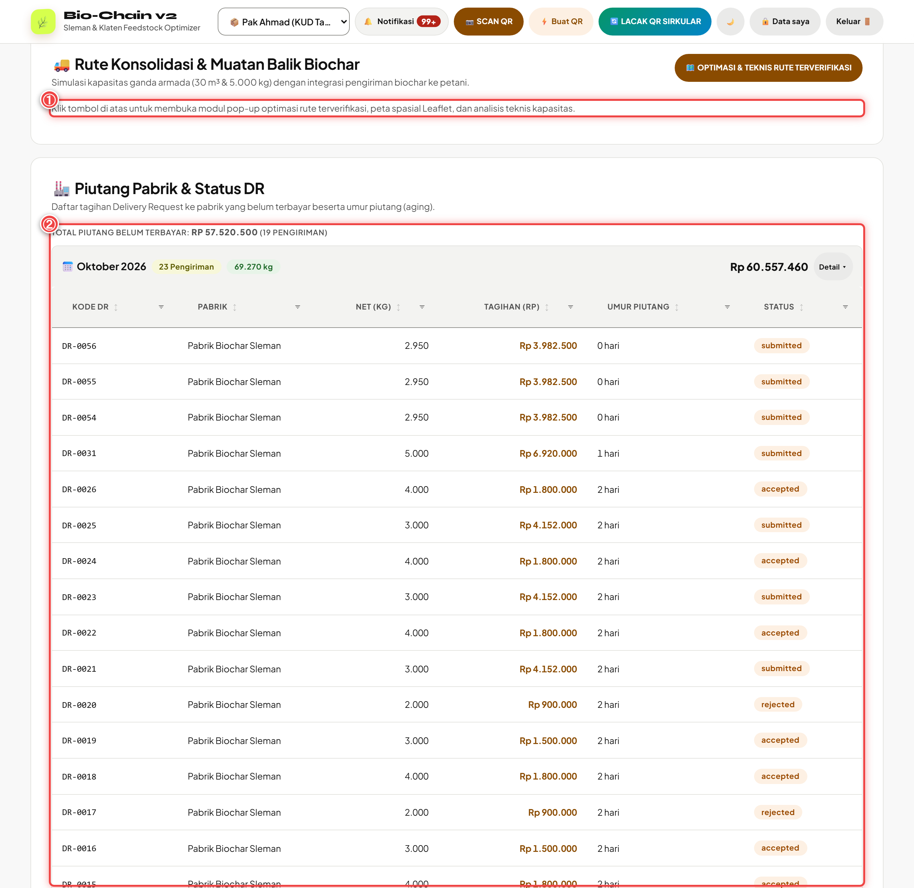
Panduan Aksi Berdasarkan Nomor pada Gambar: - ① Status muatan balik: kartu "Rute Konsolidasi & Muatan Balik Biochar" (kapasitas ganda 30 m³ & 5.000 kg). Teksnya: "Klik tombol di atas untuk membuka modul pop-up optimasi rute terverifikasi…". Klik OPTIMASI & TEKNIS RUTE TERVERIFIKASI untuk membuka Layar 4.2a. - ② Piutang Pabrik & Status DR: TOTAL PIUTANG BELUM TERBAYAR: RP 57.520.500 (19 pengiriman). Grup Oktober 2026 berisi 23 pengiriman, 69.270 kg, Rp 60.557.460. Tabel memuat Kode DR (DR-0056, DR-0055 …), Pabrik (Pabrik Biochar Sleman), Net (kg), Tagihan (Rp), Umur Piutang (0–2 hari), dan Status (submitted / accepted / rejected).
Di bawah kartu piutang ada kartu Potongan logistik saya: ongkos jarak kosong bila pengepul membatalkan saat truk sudah di jalan atau stok tidak ada saat truk tiba. Potongan ini dikurangkan dari pembayaran pabrik berikutnya.
🔧 Di Balik Layar (Sistem):
GET /collector/factory-receivables(app/routers/collector.py). Umur piutang = hari sejak DR dibuat. Statussettled / paid / delivereddianggap lunas. Angka total di atas hanya menjumlahkan yang belum lunas, sedangkan angka grup bulan menjumlahkan semua DR pada bulan itu. Karena itu kedua angka bisa berbeda (Rp57,52 jt vs Rp60,56 jt). Potongan logistik dariGET /collector/chargesberstatus terbuka / dipotong / dibebaskan.
Layar 4.4c — Transparansi Mutu & Evaluasi QC Gerbang Pabrik
Tujuan Proses & Standar Terkait: Pengepul melihat hasil timbang jembatan dan uji mutu pabrik untuk setiap kiriman: berapa kg yang diterima atau ditolak, dan apa sebabnya. Dengan begitu perbaikan mutu bisa diteruskan ke petani.
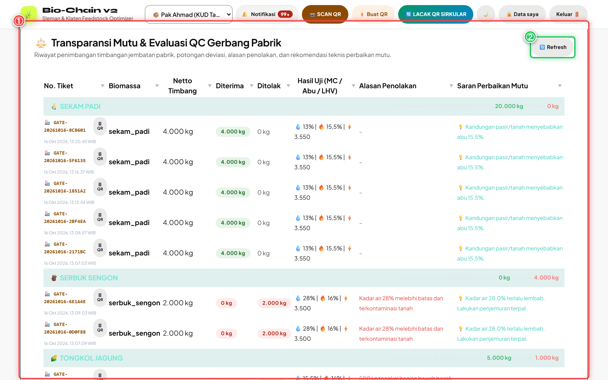
Panduan Aksi Berdasarkan Nomor pada Gambar: - ① Tabel QC gerbang: dikelompokkan per komoditas. Kolom: No. Tiket (mis. GATE-20261016-8C8601, 16 Okt 2026), Biomassa, Netto Timbang, Diterima, Ditolak, Hasil Uji (MC / Abu / LHV), Alasan Penolakan, Saran Perbaikan Mutu. Contoh: - SEKAM PADI: 4.000 kg diterima penuh. Hasil 13 % | 15,5 % | 3.550, dengan saran "Kandungan pasir/tanah menyebabkan abu 15.5%". - SERBUK SENGON: 2.000 kg ditolak. Hasil 28 % | 16 % | 3.500, alasan "Kadar air 28% melebihi batas dan terkontaminasi tanah", saran "Lakukan penjemuran terpal". - ② Refresh: memuat ulang data terbaru setelah pabrik memproses tiket baru.
🔧 Di Balik Layar (Sistem):
GET /collector/gate-feedback(app/routers/collector.py) membaca catatan penerimaan gerbang pabrik (tiket timbang + keputusan QC: diterima / diterima sebagian / ditolak, Bab 6.1). Hasil QC lot juga diteruskan ke harvest petani yang dilampirkan, dibagi proporsional timbangan (factory_ops.py), sehingga petani menerima umpan balik yang sama di Bab 3.5.
Bab 5 — Panduan Langkah demi Langkah Modul Driver & Ketertelusuran Lapangan
Modul Driver dipakai sopir truk di HP (layar 390 × 844), sering di tempat dengan sinyal lemah. Prinsipnya: setiap tindakan tetap bisa disimpan tanpa sinyal dan terkirim otomatis saat sinyal kembali. Akun demo: Budi Santoso (Driver).
Catatan peran: Driver tidak menginput slip timbangan jembatan. Penimbangan resmi (Gross/Tare/Net) dilakukan petugas di gerbang pabrik (lihat Bab 6.1). Berat yang dibawa driver hanya catatan; angka otoritatif tetap timbangan pengepul (Bab 4.3) dan jembatan timbang pabrik.
5.1 Daftar Job, Utilisasi Volume Bak & Instruksi Muatan Balik
Layar 5.1a — Status Rute, Jarak & Utilisasi Bak
Tujuan Proses & Standar Terkait: Driver melihat rute yang ditugaskan, jarak rencana, jarak GPS yang terekam, dan seberapa penuh bak truk (berbasis volume, karena sekam ringan).
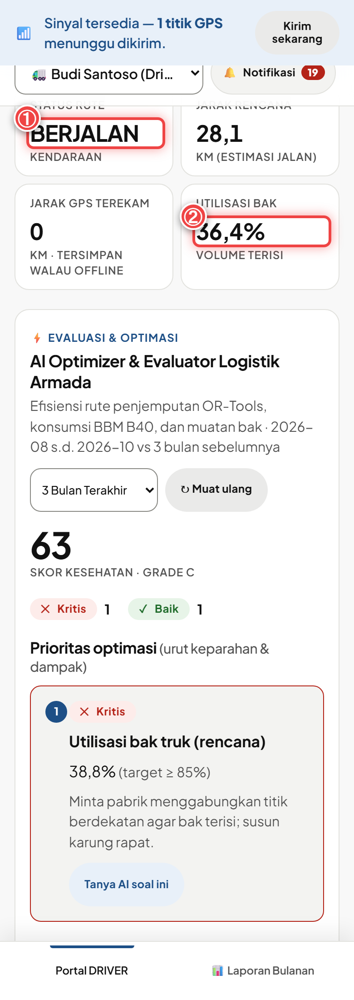
Panduan Aksi Berdasarkan Nomor pada Gambar: - ① Status Rute: pada gambar BERJALAN, artinya rute sudah dimulai. Sebelum dimulai, statusnya DIRENCANAKAN. Di sebelahnya: Jarak Rencana 28,1 km (estimasi jalan). - ② Utilisasi Bak: 36,4 % (volume terisi). Kartu Jarak GPS Terekam: 0 km bertanda "tersimpan walau offline".
Tombol aksi rute (di bawah daftar stop, tidak tampak pada gambar): ▶️ Mulai Rute (aktifkan GPS) sebelum berangkat. Setelah rute berjalan, tombol berubah menjadi 🏁 Selesaikan Rute. Tombol ini terkunci selama masih ada stop yang belum ditangani.
Di bawah KPI ada kartu AI Optimizer & Evaluator Logistik Armada (skor kesehatan 63 · Grade C, 1 Kritis, 1 Baik) yang merangkum efisiensi rute, BBM B40, dan muatan bak selama 3 bulan terakhir. Prioritas optimasi teratas pada gambar adalah "Utilisasi bak truk (rencana) 38,8 % (target ≥ 85 %)", dengan saran "Minta pabrik menggabungkan titik berdekatan agar bak terisi; susun karung rapat" dan tombol Tanya AI soal ini.
🔧 Di Balik Layar (Sistem):
loadDriverData()(app/static/app.js) membacaGET /api/v1/driver/active-route(app/routers/driver.py). Rute terakhir disimpan di HP (localStorage biochain_driver_route:<id>) sehingga tetap tampil saat offline.utilization_pctberasal dari Engine ⑤:100 × m³ muatan ÷ m³ bak. Mulai Rute (POST /driver/start-route) dan Selesaikan Rute (POST /driver/complete-route) dikirim lewat antrean offline. Saat selesai, server menghitung jarak nyata dari jejak GPS serta BBM dan CO₂e menurut ISO 14083. Sebelum itu, antrean pickup offline dikirim lebih dulu (flushOutbox,trackFlush).
Layar 5.1b — Instruksi Muatan Balik Abu/Biochar (Pabrik → Petani)
Tujuan Proses & Standar Terkait: Menutup lingkar ekonomi sirkular. Truk yang kembali dari pabrik membawa biochar/abu untuk sawah petani, dan setiap titik serah-terimanya terekam.
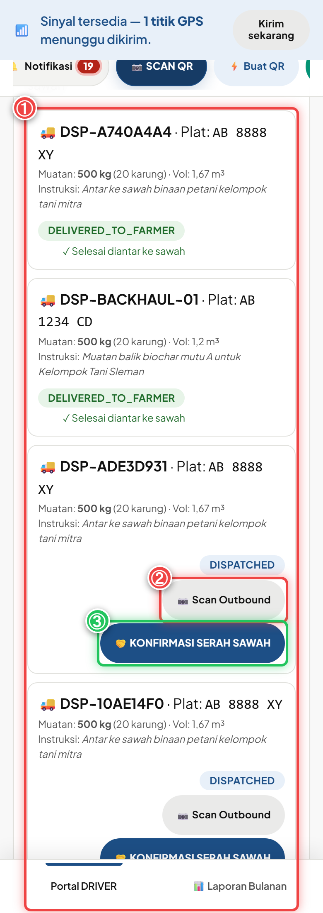
Panduan Aksi Berdasarkan Nomor pada Gambar:
- ① Daftar penugasan muatan balik: setiap kartu berisi kode dispatch, plat, muatan, volume, instruksi, dan status.
Contoh:
- DSP-A740A4A4 · Plat AB 8888 XY · 500 kg (20 karung) · 1,67 m³ · "Antar ke sawah binaan petani kelompok tani
mitra" · DELIVERED_TO_FARMER ("✓ Selesai diantar ke sawah").
- DSP-BACKHAUL-01 · AB 1234 CD · 500 kg · 1,2 m³ · "Muatan balik biochar mutu A untuk Kelompok Tani Sleman".
- DSP-ADE3D931 dan DSP-10AE14F0 · status DISPATCHED (belum diantar). Kartunya masih menampilkan
tombol aksi ② dan ③.
- ② Scan Outbound: tekan saat memuat biochar di gerbang keluar pabrik. Checkpoint FACTORY_OUTBOUND tercatat.
- ③ KONFIRMASI SERAH SAWAH: tekan saat tiba di sawah. Isi ID Petani Penerima, Berat Biochar Diserahkan
(kg) (default sesuai muatan), dan Catatan Serah Terima, lalu Konfirmasi Serah Terima. Status berubah menjadi
DELIVERED_TO_FARMER.
🔧 Di Balik Layar (Sistem): Data dari
GET /driver/backhaul-tasks. Scan outbound memanggilPOST /driver/checkpoint-scandengancheckpoint_type = FACTORY_OUTBOUND, dan serah sawah memanggilPOST /driver/confirm-backhaul-drop. Surat jalan biochar dibuat oleh pabrik (Bab 6.4). Endpoint serah sawah menerimaevidence_photo_url, tetapi dialog di aplikasi driver saat ini belum menyediakan kolom foto.
5.2 Titik Jemput, Scan QR Checkpoint, Laporan Gagal & Mode Offline
Layar 5.2a — Titik Jemput: Scan QR atau Laporkan Gagal
Tujuan Proses & Standar Terkait: Membuktikan bahwa lot yang dimuat adalah lot yang benar (QR karung/nota cocok), di lokasi yang benar, pada waktu yang benar. Ini adalah checkpoint serah-terima kedua dalam rantai ketertelusuran (selaras ISO 22095).
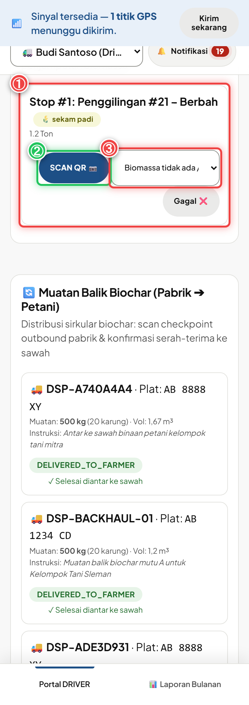
Panduan Aksi Berdasarkan Nomor pada Gambar: - ① Kartu stop: Stop #1: Penggilingan #21 – Berbah, komoditas sekam padi, rencana 1.2 Ton. Tombol aksi baru muncul setelah rute dimulai (Mulai Rute, Layar 5.1a). - ② SCAN QR 📷: tekan saat tiba. Kamera terbuka dengan judul "Scan QR Petani (Stop #…)". Arahkan ke QR karung/nota atau resi TRX (Layar 4.3b). Jika berhasil, muncul "✅ Pickup dikonfirmasi!" dan stop berlabel DIJEMPUT. - ③ Alasan gagal + tombol "Gagal ❌": bila biomassa tidak bisa diambil, pilih alasan lalu tekan Gagal ❌. Pilihan alasan: Biomassa tidak ada / sudah dijual, Dibatalkan pengepul, Basah / berjamur, Jalan tidak bisa dilalui, Lokasi / titik tutup, Bak truk penuh, Lainnya. Stop ditutup sebagai GAGAL dan lot kembali ke antrean.
Di atas layar terlihat banner "Sinyal tersedia — 1 titik GPS menunggu dikirim" dengan tombol Kirim sekarang.
🔧 Di Balik Layar (Sistem):
confirmPickupStop()→startCameraScanner()→sendPickup()diapp/static/app.js→POST /api/v1/driver/confirm-pickup(app/routers/driver.py). - Cek QR tanpa sinyal: sebelum dikirim, HP mencocokkan QR dengan digest SHA-256 yang ikut dalam rute (qr_check, QR bertanda tangan F14). Jika QR salah, muncul "QR tidak cocok dengan lot di stop ini" dan tidak ada yang dikirim. Server mengecek ulang tanda tangan: QR palsu ditolak "QR tidak sah", lot berbeda ditolak "QR code tidak cocok". QR lama tanpa tanda tangan mengikuti kebijakanlogistik.qr_legacy_policy. - GPS & geofence: koordinat HP dibandingkan dengan titik penggilingan (haversine). Jika lebih jauh darilogistik.pickup_geofence_m(default 500 m), pickup tetap diterima tetapi ditandai untuk auditor ("⚠️ Lokasi scan jauh dari penggilingan"). - Waktu & offline:client_recorded_at= waktu scan sebenarnya di HP, walaupun terkirim belakangan. Server memakai jam HP hanya bila berada dalam jendela −CLIENT_CLOCK_MAX_PAST_HOURS(72 jam) sampai +CLIENT_CLOCK_MAX_FUTURE_MINUTES(10 menit). Di luar itu dipakai jam server dan diberi catatan (trusted_device_time,app/services/custody.py). Custody event menyimpan keduanya. - Aman diulang: setiap aksi membawaclient_event_id. Kiriman ulang dari antrean dijawab "sudah dikonfirmasi sebelumnya" tanpa data ganda. Status lot:VERIFIED → COLLECTED(custody stageDRIVER_PICKUP). - Foto bukti: API menerimaphoto_url, tetapi alur Scan QR di aplikasi driver belum menyediakan pengambilan foto (dikirim kosong). Foto serah-terima saat ini diambil pengepul di Layar 4.3a. - Laporan gagal:POST /driver/stop-failed(logistics.fail_stop), juga lewat antrean offline dan menyertakan GPS.
Layar 5.2b — Pemindai QR Checkpoint
Tujuan Proses & Standar Terkait: Membaca kode QR karung, nota, atau layar mitra dengan kamera HP. Jika kamera rusak atau QR buram, kode bisa diketik manual sehingga pekerjaan tidak terhenti.
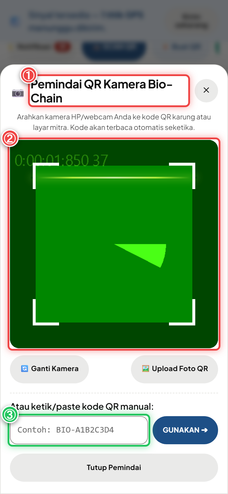
Panduan Aksi Berdasarkan Nomor pada Gambar:
- ① Judul "Pemindai QR Kamera Bio-Chain": dibuka dari tombol SCAN QR di header. Petunjuknya: "Arahkan kamera
HP/webcam Anda ke kode QR karung atau layar mitra. Kode akan terbaca otomatis seketika."
- ② Area kamera: bingkai bidik dengan garis laser pemindai. Pada gambar, isi kamera berupa pola hijau uji
(kamera simulasi browser), bukan QR sungguhan. Tombol Ganti Kamera menukar kamera depan/belakang. Upload Foto
QR membaca QR dari foto di galeri.
- ③ "Atau ketik/paste kode QR manual": ketik kode, contoh BIO-A1B2C3D4, lalu tekan GUNAKAN. Tutup
Pemindai untuk keluar.
🔧 Di Balik Layar (Sistem):
startCameraScanner()(app/static/app.js) menangani kamera, unggah foto, dan input manual. Pemindai yang dibuka dari header (openGlobalScanner) hanya menampilkan isi kode yang terbaca. Untuk mencatat checkpoint pickup, driver harus memakai tombol SCAN QR di kartu stop (Layar 5.2a). Pemindai yang sama kemudian mengirimconfirm-pickupbeserta GPS dan waktu.
Layar 5.2c — Mode Hemat Sinyal (Offline) & GPS Tersimpan
Tujuan Proses & Standar Terkait: Menjamin data lapangan tidak hilang di daerah tanpa sinyal. Scan, laporan gagal, mulai/selesai rute, dan titik GPS disimpan di HP, lalu dikirim berurutan saat sinyal kembali.
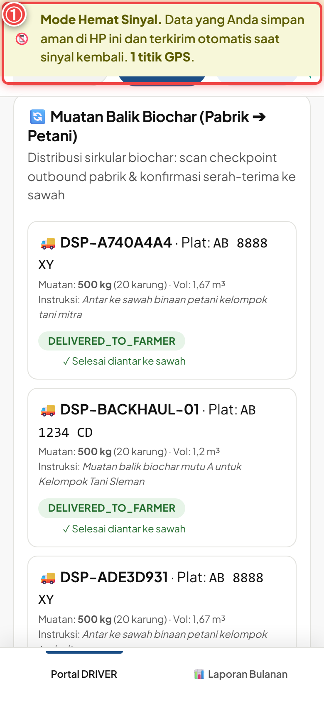
Panduan Aksi Berdasarkan Nomor pada Gambar: - ① Banner "Mode Hemat Sinyal": muncul otomatis saat HP kehilangan koneksi. Isinya: "Data yang Anda simpan aman di HP ini dan terkirim otomatis saat sinyal kembali. 1 titik GPS." Tetap bekerja seperti biasa. Tidak perlu menutup aplikasi.
Selama offline, kartu Jarak GPS Terekam (Layar 5.1a) terus bertambah dan daftar stop serta muatan balik tetap bisa dibuka. Saat sinyal kembali, banner berubah menjadi "Sinyal tersedia — … menunggu dikirim" dengan tombol Kirim sekarang (lihat Layar 5.2a).
🔧 Di Balik Layar (Sistem): - Banner diatur
syncBanner()(app/static/ui-enhance.js). Banner menghitung antrean data (myOutbox()) dan titik GPS tertunda (TRACK.pending), lalu menampilkan "Sesi berakhir" bila token kedaluwarsa saat offline lama. Antrean tetap disimpan dan dikirim setelah login ulang. - Antrean aksi tulis disimpan di HP (kuncibiochain_outbox). Setiap item membawaclient_event_iddan waktu perangkat.flushOutbox()mengirim item berurutan: foto antrean diunggah dulu, lalu berhenti bila jaringan masih putus atau server sibuk, dan dicoba lagi nanti. - Jejak GPS dan jarak per rute disimpan di penyimpanan lokal (IndexedDB,track-km-<route>) dan dikirim lewatPOST /driver/track. - Waktu kejadian dari HP diterima server bila tidak lebih tua dariCLIENT_CLOCK_MAX_PAST_HOURS(72 jam,app/config.py). Lebih dari itu, server memakai jam server untuk laporan dan mencatat selisihnya.
Bab 6 — Panduan Langkah demi Langkah Modul Pabrik
Bab ini ditujukan bagi staf Pabrik Pengolahan (operator gerbang timbang, petugas QC, admin keuangan, kepala produksi, dan penanggung jawab ESG). Masuk dengan peran Pabrik Pengolahan (pilih di menu peran kanan atas). Semua layar dalam bab ini diambil pada tampilan desktop (layar lebar) karena pekerjaan pabrik umumnya dilakukan di komputer kantor gerbang atau ruang kendali.
Alur kerja pabrik secara ringkas:
- Gerbang — menanggapi ajuan pengiriman pengepul, menimbang truk (Gross/Tare/Net), menguji sampel, memutuskan QC (Diterima Penuh / Sebagian / Ditolak), dan menempatkan biomassa ke loading ramp (6.1).
- Keuangan — invoice terbit otomatis dengan skema Cash / DP / TOP, lalu tagihan pengepul dilunasi (6.2).
- Produksi — memantau stok ramp, mengoptimalkan campuran bahan bakar dan pilihan produk akhir (6.3).
- Pelaporan & sirkularitas — KPI karbon, batch produksi, laporan ESG, klaim removal karbon, penyaluran abu ke kelompok tani, dan pengiriman biochar balik ke petani (6.4).
6.1 Gerbang Timbangan & QC 2 Tahap
QC di pabrik berjalan dalam dua tahap: - Tahap 1 (di hulu, oleh pengepul): uji cepat kadar air di lokasi petani/gudang (lihat Bab 4). Hasilnya ikut terkirim dalam ajuan pengiriman sebagai "AIR xx %". - Tahap 2 (di gerbang pabrik): penimbangan jembatan timbang dan uji sampel ulang oleh petugas QC pabrik. Keputusan tahap 2 inilah yang menentukan berat yang dibayar.
Layar 6.1a — Ajuan Pengiriman dari Pengepul
Tujuan Proses & Standar Terkait: Pabrik menyetujui, menawar balik, atau menolak jadwal & harga kiriman yang diajukan pengepul, lalu membuka form QC saat truk tiba. Setiap tindakan tercatat di jejak audit (kontrol yang selaras dengan ISO 27001 — bukan sertifikasi).
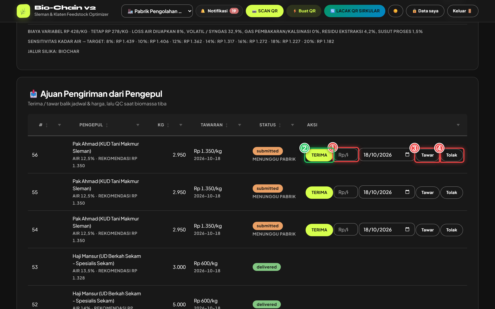
Tabel berisi kolom #, Pengepul (nama, kadar air hasil uji tahap 1, dan rekomendasi harga netback dari sistem,
mis. "Pak Ahmad (KUD Tani Makmur Sleman) · AIR 12,5 % · REKOMENDASI RP 1.350"), KG (mis. 2.950), Tawaran
(mis. Rp 1.350/kg, tanggal 2026-10-18), Status (submitted · MENUNGGU PABRIK, accepted, delivered), dan
Aksi. Contoh pada gambar: ajuan #56 dari Pak Ahmad, 2.950 kg, Rp 1.350/kg.
Panduan Aksi Berdasarkan Nomor pada Gambar:
- ① Harga tawar (Rp/kg) & tanggal: hanya diisi bila ingin menawar balik — ketik harga usulan pabrik di kotak
Rp/kg dan pilih tanggal kirim (contoh 18/10/2026).
- ② TERIMA: klik bila jadwal dan harga tawaran pengepul disetujui. Status menjadi accepted.
- ③ Tawar: kirim harga/tanggal dari kotak ① sebagai tawar balik. Pengepul akan melihat tawaran ini di layarnya.
- ④ Tolak: menolak ajuan (mis. ramp penuh atau mutu tahap 1 di luar spesifikasi).
Setelah ajuan diterima (accepted), kolom Aksi menampilkan tombol QC MASUK. Klik saat truk sudah di gerbang untuk
mencatat QC tahap 2; setelah QC, status menjadi delivered (contoh baris #53 dan #52 pada gambar).
🔧 Di Balik Layar (Sistem): Tombol ②–④ memanggil fungsi
drRespond(id, 'accept'|'counter'|'reject')dan tombol QC MASUK memanggilshowQcForm(id)di frontend; semua permintaan lewat pembungkusapi()(token Bearer + CSRF). Kolom "Rekomendasi Rp" berasal dari model harga netback pabrik (nilai produk pellet/biochar/silika dikurangi biaya proses), sehingga petugas punya acuan sebelum menyetujui harga tawaran.
Layar 6.1b — Timbang Masuk Jembatan & Keputusan QC 3-State
Tujuan Proses & Standar Terkait: Mencatat berat truk bermuatan (Gross) dan kosong (Tare) di jembatan timbang pabrik, menguji sampel, lalu memutuskan QC dengan tiga kemungkinan. Penimbangan jembatan hanya dilakukan di gerbang pabrik — driver tidak menginput slip timbangan. Ukur kadar air dengan moisture meter yang dikalibrasi terhadap metode oven 105 °C (ISO 18134-2).
Buka form ini dengan tombol + TIMBANG MASUK & INPUT QC di panel Gerbang Masuk & QC Timbangan Jembatan (lihat Layar 6.3a ③).
Bagian atas form berisi Armada Logistik Pengantar (contoh Armada Pabrik (FACTORY_FLEET); pilihan lain
Pengantaran Mandiri Pengepul), Nomor Polisi Truk (contoh AB 8421 CS), Nama Sopir, dan Komoditas
Biomassa (contoh Biomassa Sekam Padi; pilihan lain tongkol jagung, serbuk sengon, tempurung kelapa, ampas tebu).
Panduan Aksi Berdasarkan Nomor pada Gambar:
- ① Berat Kotor (Gross): ketik berat truk bermuatan dari jembatan timbang, contoh 10950 kg.
- ② Berat Kosong (Tare): ketik berat truk setelah dibongkar, contoh 6000 kg.
- ③ Netto Terhitung: terisi otomatis = Gross − Tare. Pada gambar tampil 4.950 kg (10.950 − 6.000). Kolom ini
hanya-baca.
- ④ Kadar Air (%): hasil moisture meter sampel, contoh 13.2. Lengkapi juga Kadar Abu (%) 17.5,
LHV (kcal/kg) 3450, dan Kotoran (%) 0.5 di baris yang sama (Pengujian Mutu Sampel (Lab Lapangan)).
- ⑤ Keputusan QC Gerbang (3-State): pada gambar dipilih Diterima Sebagian. Pilihan yang ada:
- 🟢 Diterima Penuh — seluruh netto diterima dan dibayar.
- 🟡 Diterima Sebagian — muncul kolom Qty Disetujui Masuk (kg) (contoh 4800) dan Qty Ditolak / Retur (kg)
(contoh 150), serta Alasan Penolakan (Wajib Dicatat). Jumlah diterima + ditolak tidak boleh melebihi netto
(4.800 + 150 = 4.950 kg ✔).
- 🔴 Ditolak Total — seluruh muatan dikembalikan; alasan penolakan wajib diisi.
- ⑥ Alokasi Loading Ramp Tujuan: pilih ramp penampung, contoh RAMP-01: Ramp Biomassa 01 (Granular/Sekam).
Lanjutkan ke bagian pembayaran (Layar 6.2a), lalu klik ✅ PROSES MASUK & TERBITKAN INVOICE.
🔧 Di Balik Layar (Sistem): Form dibuka oleh
openGateReceptionModal()(app/static/field-ops.js); netto dihitung ulang setiap kali Gross/Tare diketik. Data dikirim kePOST /api/v1/factory/gate-receptions(app/routers/factory_inbound.py), yang: 1. menolak bilagross ≤ tare; untuk Diterima Sebagian memeriksaditerima + ditolak ≤ netto (+0,1 kg)dan mewajibkan alasan bila ada porsi ditolak; untuk Ditolak Total alasan wajib; 2. mengunci baris ramp lalu memeriksa kapasitas fisik (stok + diterima ≤ kapasitas maks, bila lewat → galat 409); 3. memperbarui mutu agregat ramp secara rekursif (rata-rata berbobot massa):MC_baru = (stok_lama × MC_lama + kg_masuk × MC_uji) / (stok_lama + kg_masuk)— sama untuk abu dan LHV; 4. menerbitkan nomor tiketGATE-YYYYMMDD-xxxxxx, membuat lot QC (stok untuk batch produksi), dan menyalurkan tagihan ke dompet pengepul.Refraksi. Pada form gerbang, refraksi "Diterima Sebagian" dimasukkan sebagai pemisahan kg diterima/ditolak oleh petugas QC. Rumus refraksi otomatis multi-komoditas (
app/engines/refraction.py) dipakai di gudang pengepul dan pratinjau berat bayar:kg_bayar = kg_timbang × (1 − max(0, kontaminan − toleransi)) × (1 − MC) / (1 − MC_acuan), dengan MC acuan, batas MC tolak, dan toleransi kontaminan diambil dari master parameter tiap komoditas. Tidak ada bonus bila lebih kering dari acuan (kecuali diaktifkan per transaksi), dan di atas MC tolak lot ditolak kecuali dipilih eksplisit "terima basah".
Protokol Uji Lab Proksimat Bulanan & Kalibrasi Alat
⚠️ Belum tersedia di aplikasi. Fitur penjadwalan uji lab proksimat bulanan dan pencatatan kalibrasi alat (moisture meter, timbangan jembatan) belum ada. Jalankan sebagai prosedur manual: 1. Setiap bulan, ambil sampel komposit dari tiap ramp dan kirim ke laboratorium terakreditasi KAN / ISO 17025 untuk uji proksimat (kadar air, abu, zat terbang/VM, karbon tetap/FC) dan nilai kalor. 2. Bandingkan hasil lab dengan rata-rata uji gerbang bulan itu; bila selisih kadar air > ±1 poin, kalibrasi ulang moisture meter terhadap metode oven 105 °C. 3. Simpan sertifikat lab dan catatan kalibrasi di arsip mutu pabrik.
Yang sudah tersedia: kolom kadar abu, LHV, dan kotoran pada form gerbang (di atas), kolom proksimat opsional pada uji mutu pengepul, serta isian nama laboratorium & nomor laporan lab pada ledger abu (Layar 6.4e) dan klaim karbon (Layar 6.4d).
6.2 Pembayaran & Pengawasan SLA
Layar 6.2a — Skema Bayar Cash / DP / TOP & Invoice Otomatis
Tujuan Proses & Standar Terkait: Menentukan cara pabrik membayar pengepul untuk muatan yang diterima. Invoice langsung terbit begitu tombol proses diklik — tidak perlu dibuat terpisah.
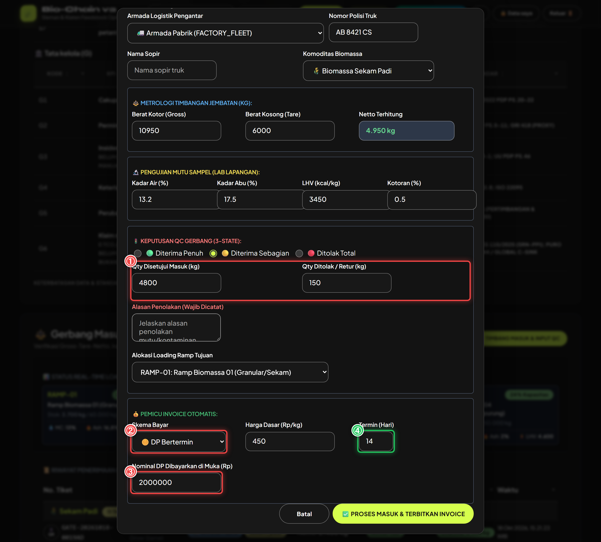
Panduan Aksi Berdasarkan Nomor pada Gambar:
- ① Qty Disetujui Masuk / Qty Ditolak (kg): pastikan kg disetujui (4800) dan kg ditolak/retur (150) sudah
benar, karena invoice hanya dihitung dari kg yang diterima. Dengan Harga Dasar (Rp/kg) 450:
4.800 kg × Rp 450 = Rp 2.160.000.
- ② Skema Bayar: pada gambar dipilih DP Bertermin. Pilihan yang ada:
- 💵 Cash (Lunas Instan) — invoice langsung berstatus PAID.
- 🪙 DP Bertermin — muncul kolom Nominal DP Dibayarkan di Muka (Rp); sisanya menjadi tagihan.
- ⏳ TOP (Jatuh Tempo) — seluruh nilai dibayar pada tanggal jatuh tempo.
- ③ Nominal DP Dibayarkan di Muka (Rp): contoh 2000000. Sisa tagihan = Rp 2.160.000 − Rp 2.000.000 =
Rp 160.000.
- ④ Termin (Hari): jumlah hari sampai jatuh tempo, contoh 14 (bawaan 14, rentang 1–90). Setelah semua benar,
klik ✅ PROSES MASUK & TERBITKAN INVOICE. Muncul notifikasi sukses, lalu panel ramp dan riwayat gerbang
(Layar 6.3a) langsung diperbarui.
🔧 Di Balik Layar (Sistem):
factory_inbound.pymenghitungtotal = kg_diterima × harga_dasar, membuatFactoryInvoicebernomorINV-YYYYMMDD-xxxxxxdengandue_date = sekarang + termin: - CASH →dibayar = total, sisa 0, statusPAID; - DP →dibayar = min(DP, total), sisa = total − DP, statusPARTIALLY_PAID(atauPENDINGbila DP 0); - TOP → sisa = total, statusPENDING.Blokir TOP (disiplin kredit). Sebelum menerbitkan invoice, sistem mencari invoice pabrik yang
is_overdue = Truedan belum lunas. Bila ada dan skema yang dipilih TOP, transaksi ditolak (HTTP 403): "Pabrik memiliki tagihan TOP yang telah jatuh tempo belum dilunasi. Wajib melunasi tagihan overdue sebelum membuka transaksi TOP baru." Skema Cash dan DP tetap bisa dipakai. Penanda jatuh tempo diperbarui otomatis setiap daftar invoice dibuka (GET /factory/invoices: belum lunas dan lewatdue_date→ overdue), dan dibuka kembali lewat pelunasanPOST /factory/invoices/{id}/pay.
Layar 6.2b — Pembayaran ke Pengepul & Pengawasan Jatuh Tempo
Tujuan Proses & Standar Terkait: Menimbang-terima biomassa yang tiba lewat rute armada pabrik, menetapkan harga settlement, lalu menandai tagihan pengepul sudah dibayar dengan bukti transfer.
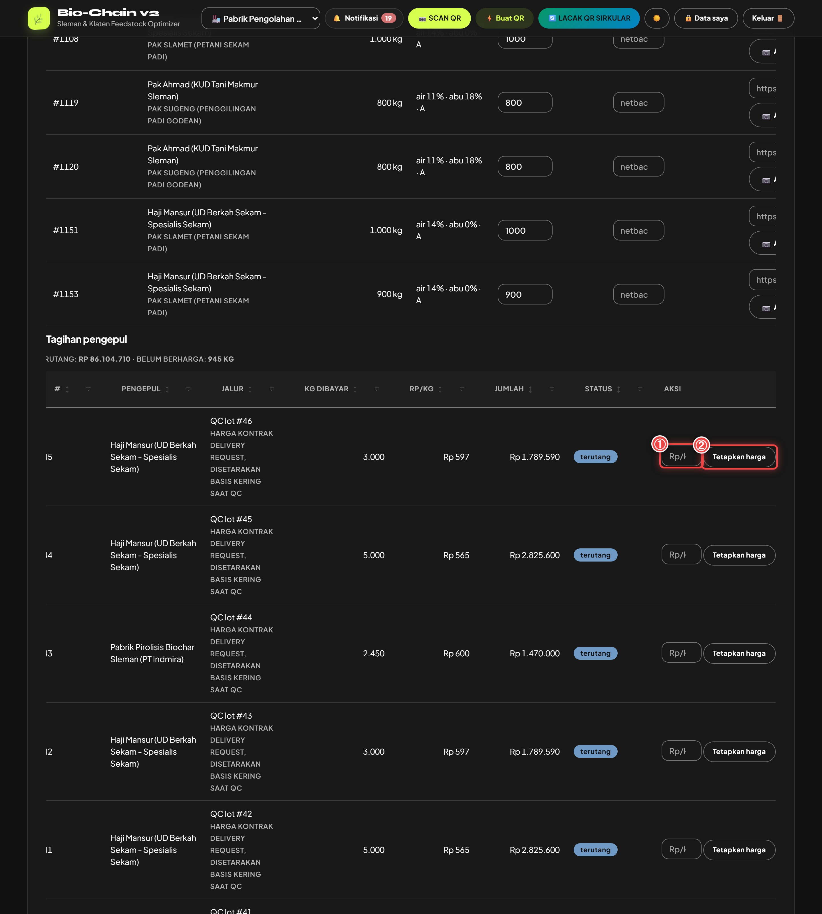
Kartu Pembayaran ke Pengepul (jalur QC & rute armada) memiliki dua bagian: - Tiba via rute armada — menunggu timbang terima (bagian atas gambar): Harvest (mis. #1119), Pengepul / Petani (Pak Ahmad (KUD Tani Makmur Sleman) · Pak Sugeng (Penggilingan Padi Godean)), timbang pengepul (800 kg), mutu (air 11 % · abu 18 % · A), Timbang Pabrik (kg) yang dapat dikoreksi, Harga (Rp/kg, opsional) — kosong berarti memakai rekomendasi netback — dan foto bukti. Filter Semua status / menunggu harga / terutang / dibayar ada di kanan atas kartu. - Tagihan pengepul: ringkasan Terutang: Rp 86.104.710 · Belum berharga: 945 kg, lalu tabel #, Pengepul, Jalur (mis. QC lot #46 · Harga kontrak delivery request, disetarakan basis kering saat QC), kg dibayar (3.000), Rp/kg (Rp 597), Jumlah (Rp 1.789.590), Status (terutang), dan Aksi.
Panduan Aksi Berdasarkan Nomor pada Gambar: - ① Isian Rp/kg: ketik harga baru per kg pada baris tagihan yang ingin ditetapkan atau dikoreksi. - ② Tetapkan harga: klik untuk menyimpan harga. Sistem meminta alasan (minimal 5 karakter, contoh "Koreksi mutu timbangan pabrik"). Tagihan menunggu harga berubah menjadi terutang, dan jumlahnya dihitung ulang.
Untuk melunasi, gulir tabel ke kolom paling kanan (di luar gambar): pada tagihan terutang, isi No. transfer (minimal 3 karakter) lalu klik Tandai dibayar. Status menjadi dibayar dan nomor referensi tampil di bawah status.
🔧 Di Balik Layar (Sistem): Timbang terima memanggil
POST /api/v1/factory/receivedan membuat settlement (kg dibayar × Rp/kg); bila harga kosong, status menunggu harga dan ringkasan "belum berharga: … kg" tampil di atas tabel. Penetapan harga (/settlements/{id}/price) wajib beralasan dan tercatat di jejak audit; pembayaran (/settlements/{id}/pay) wajib nomor bukti. Kartu Evaluasi & Optimasi di dasbor menandai kg yang "diterima tanpa harga settlement" sebagai prioritas (Layar 6.4a).SLA hulu ke petani. Pembayaran pengepul ke petani diawasi oleh parameter
pasar.farmer_payment_due_days, bawaan 3 hari (dapat diatur 0–60 hari di menu Parameter). Artinya petani wajib dibayar maksimal 3 hari setelah serah-terima (lebih ketat dari target ≤ 14 hari); lot yang melewati batas ditandai terlambat dan dihitung pada ringkasan "… lot · … terlambat > 3 hari".
6.3 Loading Ramp & Optimasi
Layar 6.3a — Status Real-Time Loading Ramp & Riwayat Gerbang
Tujuan Proses & Standar Terkait: Melihat isi dan mutu rata-rata setiap ramp penampung secara langsung, serta riwayat semua tiket gerbang, sebagai dasar perencanaan produksi.
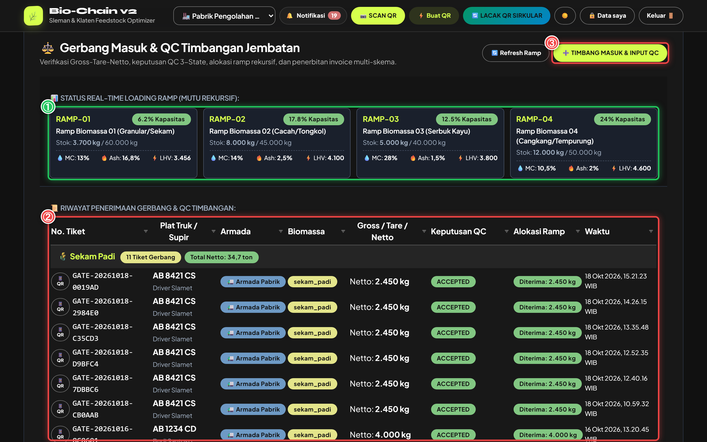
Panduan Aksi Berdasarkan Nomor pada Gambar:
- ① Status Real-Time Loading Ramp (Mutu Rekursif): satu kartu per ramp, contoh RAMP-01 Ramp Biomassa 01
(Granular/Sekam) — Stok: 3.700 kg / 60.000 kg, lencana 6,2 % Kapasitas, MC 13 %, Ash 16,8 %, LHV 3.456.
RAMP-02 (Cacah/Tongkol) 8.000/45.000 kg; RAMP-03 (Serbuk Kayu) 5.000/40.000 kg dengan MC 28 % (perlu pengeringan);
RAMP-04 (Cangkang/Tempurung) 12.000/50.000 kg, LHV 4.600. Klik Refresh Ramp untuk memuat ulang.
- ② Riwayat Penerimaan Gerbang & QC Timbangan: dikelompokkan per komoditas (mis. Sekam Padi · 11 Tiket Gerbang ·
Total Netto 34,7 ton). Tiap baris: No. Tiket (mis. GATE-20261018-0019AD, tombol QR), Plat Truk/Supir (AB 8421 CS,
Driver Slamet), Armada, Biomassa, Netto (2.450 kg), Keputusan QC (ACCEPTED), Alokasi Ramp (Diterima: 2.450 kg), dan
Waktu (WIB).
- ③ + TIMBANG MASUK & INPUT QC: membuka form gerbang (Layar 6.1b).
🔧 Di Balik Layar (Sistem): Data diambil dari
GET /factory/loading-rampsdanGET /factory/gate-receptions(factory_inbound.py). Persentase kapasitas =stok ÷ kapasitas maks × 100. Mutu ramp adalah rata-rata berbobot massa dari semua muatan yang masuk (lihat rumus di Layar 6.1b), sehingga kartu langsung mencerminkan campuran fisik di ramp.
Layar 6.3b — Prototipe 1: Blend Bahan Bakar & Briket Biaya Terendah & Risiko Terak (HiGHS)
Tujuan Proses & Standar Terkait: Mencari campuran biomassa termurah yang tetap memenuhi spesifikasi produk (pelet ISO 17225-6, briket SNI/pasar, atau co-firing PLN) — nilai kalor, abu, klorin, sulfur — sekaligus membatasi indeks alkali agar abu tidak membentuk terak (slagging) di boiler. Solver yang dipakai adalah HiGHS (program linear) melalui SciPy.
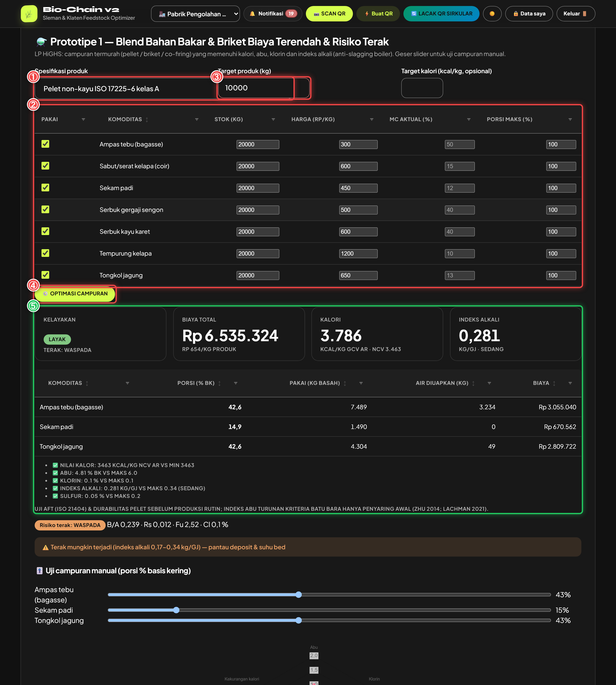
Panduan Aksi Berdasarkan Nomor pada Gambar:
- ① Spesifikasi produk: pilih preset, contoh Pelet non-kayu ISO 17225-6 kelas A (MC produk 12 %, LHV ≥ 14,5
MJ/kg, abu ≤ 6 %, Cl ≤ 0,10 %, S ≤ 0,20 %). Pilihan lain: kelas B (abu ≤ 10 %), pelet industri 4.000 kcal/kg, briket
(GCV ≥ 4.400 kcal/kg, MC ≤ 8 %, abu ≤ 8 %), dan co-firing PLTU (GCV ≥ 3.009 kcal/kg, MC ≤ 25 %).
- ② Tabel bahan: centang Pakai untuk bahan yang tersedia, lalu periksa Stok (kg), Harga (Rp/kg),
MC aktual (%), dan Porsi maks (%). Pada gambar ketujuh bahan dicentang dengan stok masing-masing 20000 kg;
harga: ampas tebu 300, sabut kelapa 600, sekam padi 450, serbuk gergaji sengon 500, serbuk kayu karet 600, tempurung
kelapa 1200, tongkol jagung 650. Tulisan wajib pada kolom harga berarti harga harus diisi sebelum bahan dapat dipakai.
Porsi maks dapat diturunkan, mis. sekam ≤ 30 % demi durabilitas pelet.
- ③ Target produk (kg): contoh 10000. Target kalori (kcal/kg, opsional) boleh dikosongkan; bila kosong, batas
kalori dari preset yang dipakai.
- ④ OPTIMASI CAMPURAN: klik untuk menjalankan solver.
- ⑤ Hasil: empat kotak ringkasan dan tabel komposisi. Contoh pada gambar:
- Kelayakan: LAYAK · Terak: WASPADA.
- Biaya total Rp 6.535.324 (Rp 654/kg produk).
- Kalori 3.786 kcal/kg GCV ar · NCV 3.463.
- Indeks alkali 0,281 kg/GJ · sedang.
- Komposisi: Ampas tebu 42,6 % bk (pakai 7.489 kg basah, air diuapkan 3.234 kg, Rp 3.055.040); Sekam padi
14,9 % (1.490 kg, Rp 670.562); Tongkol jagung 42,6 % (4.304 kg, air 49 kg, Rp 2.809.722).
- Daftar cek (semua ✔): nilai kalor 3463 kcal/kg NCV ar vs min 3463; abu 4,81 % bk vs maks 6,0; klorin
0,1 % vs maks 0,1; indeks alkali 0,281 vs maks 0,34 (sedang); sulfur 0,05 % vs maks 0,2. Di bawahnya ada saran uji
AFT (ISO 21404) dan durabilitas pelet.
- Pita Risiko terak: WASPADA (B/A 0,239 · Rs 0,012 · Fu 2,52 · Cl 0,1 %) dengan peringatan "Terak mungkin terjadi
(indeks alkali 0,17–0,34 kg/GJ) — pantau deposit & suhu bed".
Di bawah hasil tersedia Uji campuran manual (porsi % basis kering): geser slider tiap bahan (contoh ampas tebu 43 %, sekam padi 15 %, tongkol jagung 43 %) untuk menguji campuran sendiri dengan cek yang sama.
Hasil "tidak layak" juga sah. Bila stok bahan rendah abu tidak cukup (mis. hanya sekam padi, abu ±17 %, padahal batas kelas A 6 %), solver menjawab "Tidak ada campuran yang memenuhi semua batas. Tambah stok bahan rendah abu/alkali atau kurangi target." Bila hanya satu batas yang menghalangi, sistem menyebut batas mana yang bila dilonggarkan membuat campuran layak.
🔧 Di Balik Layar (Sistem):
app/engines/fuel_blend.py(endpointPOST /factory/fuel-blend/optimize). Formulasi LP — variabel keputusan xᵢ = kg bahan KERING komoditas i (agar semua kendala linear):
- Fungsi tujuan (minimasi biaya):
min Σ xᵢ · [ harga_arᵢ / (1 − MCᵢ) + max(0, wᵢ − w_produk) · biaya_pengeringan ], denganw = MC/(100 − MC)= kg air per kg kering (biaya pengeringan opsional).- Kendala massa:
Σ xᵢ = D, denganD = target × (1 − MC_produk).- Kendala kalor (≥ minimum):
Σ xᵢ · (LHV_d,min − LHV_dᵢ) ≤ 0, denganLHV_d,min = (LHV_ar,min + 2,443·MC) / (1 − MC)dari rumus ISO 18125LHV_ar = LHV_d·(1 − MC) − 2,443·MC[MJ/kg]. Untuk preset berbasis GCV:Σ xᵢ · (GCV_min/(1 − MC) − HHVᵢ) ≤ 0.- Kendala abu, klorin, sulfur (≤ maksimum):
Σ xᵢ · (Aᵢ − A_max) ≤ 0,Σ xᵢ · (Clᵢ − Cl_max) ≤ 0,Σ xᵢ · (Sᵢ − S_max) ≤ 0.- Kendala indeks alkali (Miles 1996, ditulis linear):
Σ xᵢ · (Aᵢ · alkᵢ / 10⁴ − AI_max · HHVᵢ / 1000) ≤ 0, denganalk = K₂O + Na₂O (% abu)danAI_max = 0,34 kg/GJ(bawaan). Ambang: < 0,17 rendah · 0,17–0,34 terak mungkin · > 0,34 hampir pasti terak. Bahan yang K₂O abunya belum diketahui tidak boleh dipakai selama batas ini aktif (gagal-tertutup, bukan dianggap 0).- Batas variabel:
0 ≤ xᵢ ≤ min(stokᵢ · (1 − MCᵢ), porsi_maksᵢ · D); porsi minimum opsionalxᵢ ≥ porsi_minᵢ · D.Diselesaikan dengan
scipy.optimize.linprog(method="highs"). Setelah solusi ditemukan,evaluate()menghitung indeks abu lain dari komposisi oksida berbobot massa abu (B/A, Rs, Fu, Si/Al, viskositas G; ambang Zhu dkk. 2014) dan peringatan khusus (sekam > 30 % → risiko kristobalit; K₂O + SiO₂ tinggi → uji AFT ISO 21404). Indeks tersebut hanya penyaring awal; uji titik leleh abu (AFT, ISO 21404) tetap wajib sebelum produksi rutin.
Layar 6.3c — Mesin Rekomendasi Blending Multi-Ramp (4 Produk Akhir)
Tujuan Proses & Standar Terkait: Memberi usulan cepat alokasi isi ramp untuk empat lini produk — Biopellet, Biochar, Bio-Silika, dan Briket — lengkap dengan mutu campuran, margin, dan perkiraan serapan karbon, lalu mengunci batch produksi.
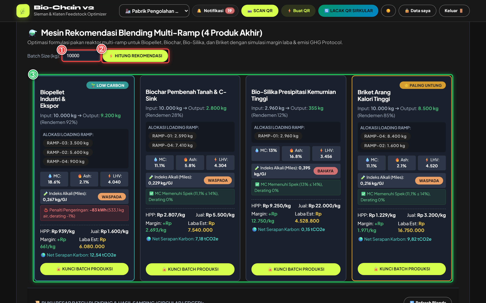
Panduan Aksi Berdasarkan Nomor pada Gambar:
- ① Batch Size (kg): ketik ukuran batch, contoh 10000.
- ② HITUNG REKOMENDASI: klik untuk menyusun usulan.
- ③ Kartu 4 produk: setiap kartu menampilkan input → output dan rendemen, alokasi ramp, mutu campuran (MC, Ash,
LHV), indeks alkali Miles dengan label (WASPADA/BAHAYA), status spesifikasi MC/derating, penalti pengeringan, HPP,
harga jual, margin, laba estimasi, dan Net Serapan Karbon. Contoh pada gambar:
- Biopellet Industri & Ekspor (lencana LOW CARBON): 10.000 kg → 9.200 kg (rendemen 92 %), alokasi RAMP-03
3.500 kg + RAMP-02 5.600 kg + RAMP-04 900 kg, MC 18,6 % → Penalti Pengeringan −83 kWh, laba est. Rp 6.080.000,
12,54 tCO₂e.
- Biochar Pembenah Tanah & C-Sink: 10.000 → 2.800 kg (28 %), indeks alkali 0,229 (WASPADA), laba Rp 7.540.000.
- Bio-Silika Presipitasi Kemurnian Tinggi: hanya dari ramp sekam (RAMP-01 2.960 kg) → 355 kg (12 %), indeks alkali
0,395 (BAHAYA), laba Rp 4.528.800.
- Briket Arang Kalori Tinggi (lencana PALING UNTUNG): 10.000 → 8.500 kg (85 %), RAMP-04 8.400 kg + RAMP-02
1.600 kg, LHV 4.520, laba Rp 16.750.000.
Klik KUNCI BATCH PRODUKSI pada kartu yang dipilih untuk mencatat batch dan mengurangi stok ramp.
🔧 Di Balik Layar (Sistem): Kartu ini tidak memakai HiGHS.
app/routers/factory_production.pymemakai heuristik urut-prioritas: ramp diurutkan menurut aturan tiap produk (pellet: bahan kayu/tebu/jagung dulu, lalu abu terendah dan LHV tertinggi; biochar: sekam/tempurung/tebu dulu; briket: LHV tertinggi; bio-silika: wajib ramp sekam), lalu diambil berurutan hingga target terpenuhi dengan batas 70 % stok tiap ramp (bio-silika 80 % ramp sekam). Mutu campuran adalah rata-rata berbobot; indeks alkali memakai rumus Miles yang sama dengan Prototipe 1; penalti pengeringan dariengines/energy.py. Serapan karbon memakai faktor tetap per ton produk (indikatif, bukan klaim) — klaim resmi melalui Layar 6.4d. Untuk campuran biaya terendah yang benar-benar optimal, gunakan Prototipe 1 (Layar 6.3b); untuk alokasi stok optimal ke empat produk, gunakan Prototipe 4 (Layar 6.3d).
Layar 6.3d — Prototipe 4: Optimasi Multi-Biomassa ke Produk Akhir
Tujuan Proses & Standar Terkait: Membandingkan secara menyeluruh hasil satu lot biomassa bila diolah menjadi Bio-Pellet (ISO 17225-2/-6), Briket (SNI 01-6235-2000), Biochar (pembenah tanah & C-sink, EBC/IBI), atau Bio-Silika — neraca massa, energi (SEC/IKE), margin Rupiah, karbon tCO₂e, dan skor kesesuaian teknis — serta mengalokasikan stok pabrik secara optimal dengan HiGHS.
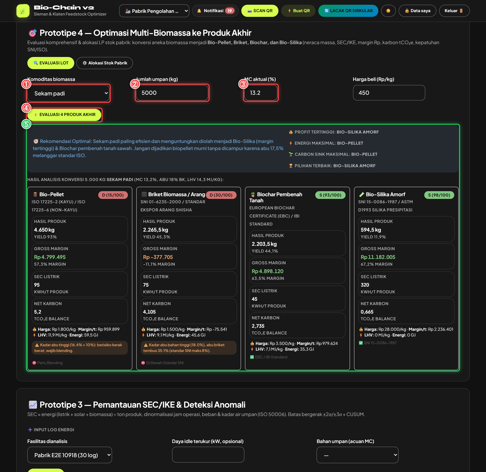
Kartu memiliki dua tab: EVALUASI LOT (satu lot, dibandingkan ke 4 produk) dan Alokasi Stok Pabrik (banyak stok biomassa, dialokasikan dengan LP).
Panduan Aksi Berdasarkan Nomor pada Gambar:
- ① Komoditas biomassa: pilih, contoh Sekam padi.
- ② Jumlah umpan (kg): contoh 5000.
- ③ MC aktual (%): contoh 13.2. Harga beli (Rp/kg) terisi 450 (dapat diubah).
- ④ EVALUASI 4 PRODUK AKHIR: klik untuk menghitung.
- ⑤ Hasil: di bagian atas tampil kotak Rekomendasi Optimal. Contoh: "Sekam padi paling efisien dan
menguntungkan diolah menjadi Bio-Silika (margin tertinggi) & Biochar pembenah tanah sawah. Jangan dijadikan biopellet
murni tanpa dicampur karena abu 17,5 % melanggar standar ISO." Di sampingnya ada ringkasan: Profit tertinggi:
Bio-Silika Amorf · Energi maksimal: Bio-Pellet · Carbon sink maksimal: Bio-Pellet · Pilihan terbaik: Bio-Silika Amorf.
Di bawahnya tertulis "Hasil analisis konversi 5.000 kg sekam padi (MC 13,2 %, abu 18 % bk, LHV 14,3 MJ/kg)", lalu
empat kartu produk. Setiap kartu memuat grade/skor, standar acuan, hasil produk, gross margin, SEC listrik, net
karbon, harga, dan LHV/energi:
| Produk (standar) | Skor | Hasil produk | Gross margin | SEC listrik | Net karbon | Catatan |
|---|---|---|---|---|---|---|
| Bio-Pellet (ISO 17225-2 / 17225-6) | D (15/100) | 4.650 kg (yield 93 %) | Rp 4.799.495 (57,3 %) | 95 kWh/t | 5,2 tCO₂e | Kadar abu 16,4 % > 10 %: berisiko kerak berat, wajib blending → Perlu Blending |
| Briket Biomassa / Arang (SNI 01-6235-2000) | D (30/100) | 2.265,5 kg (45,3 %) | Rp −377.705 (−11,1 %) | 75 kWh/t | 4,105 tCO₂e | Abu briket tembus 35,1 % (SNI maks 8 %) → Di Bawah Standar SNI |
| Biochar Pembenah Tanah (EBC / IBI) | S (93/100) | 2.203,5 kg (44,1 %) | Rp 4.898.120 (63,5 %) | 45 kWh/t | 2,735 tCO₂e | ✔ EBC / IBI Standard |
| Bio-Silika Amorf (SNI 15-0086-1987 / ASTM D1993) | S (98/100) | 594,5 kg (11,9 %) | Rp 11.182.005 (67,2 %) | 320 kWh/t | 0,665 tCO₂e | ✔ SNI 15-0086-1987 |
Margin negatif (briket) berarti jalur itu merugi untuk lot ini. Skor kesesuaian di bawah 45 juga membuat jalur tersebut dikunci 0 pada tab Alokasi Stok Pabrik.
🔧 Di Balik Layar (Sistem):
app/engines/product_optimization.py. Tab Evaluasi Lot memanggilevaluate_feedstock()(perhitungan per jalur, tanpa solver). Tab Alokasi Stok Pabrik memanggiloptimize_allocation()— LP HiGHS dengan variabel x[i,j] = ton biomassa i ke lini produk j (j = pellet, briket, biochar, bio-silika): - Tujuan (pilih): max_profit →max Σ laba_kotor_ij · x_ij; max_energy → energi bersih GJ; max_carbon → manfaat iklim bersih tCO₂e; balanced →skor_kesesuaian × 100 + margin/5000(diminimasi sebagai−c). - Kendala pasokan:Σ_j x_ij ≤ tonase_i. - Kendala kapasitas lini (opsional):Σ_i rendemen_ij · x_ij ≤ kapasitas_j(ton produk; bio-silika dalam kg). - Larangan teknis: bila skor kesesuaian jalur < 45,x_ij = 0(bahan tidak dipaksakan ke lini yang gagal spek).Karbon biochar memakai
C_sink = t_biochar × C_org × F_perm × 44/12.
6.4 ESG, Output Produksi & Sirkularitas Abu
Layar 6.4a — Dasbor KPI Karbon, Output & Evaluasi Pabrik
Tujuan Proses & Standar Terkait: Ringkasan kinerja pabrik di halaman awal: emisi karbon yang dihindari, output biochar, potensi biosilika, serta skor kesehatan operasi dan prioritas perbaikan dari AI Optimizer & Evaluator Pirolisis Pabrik.
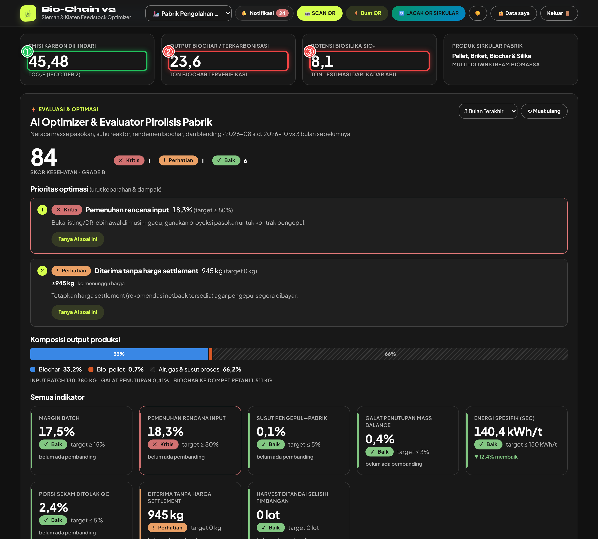
Panduan Aksi Berdasarkan Nomor pada Gambar: - ① Emisi Karbon Dihindari: 45,48 tCO₂e (IPCC Tier 2) — kredit karbon bersih dari klaim terverifikasi. - ② Output Biochar / Terkarbonisasi: 23,6 ton biochar terverifikasi. - ③ Potensi Biosilika SiO₂: 8,1 ton, estimasi dari kadar abu. Di sebelahnya, kotak Produk Sirkular Pabrik menyebut lini produk Pellet, Briket, Biochar & Silika · Multi-downstream biomassa.
Di bawah KPI, kartu Evaluasi & Optimasi — AI Optimizer & Evaluator Pirolisis Pabrik (neraca massa pasokan, suhu reaktor, rendemen biochar, dan blending; periode 2026-08 s.d. 2026-10 dibanding 3 bulan sebelumnya) menampilkan: - Skor Kesehatan 84 · Grade B, dengan temuan Kritis 1 · Perhatian 1 · Baik 6. - Prioritas optimasi (urut keparahan & dampak): 1. Kritis — Pemenuhan rencana input 18,3 % (target ≥ 80 %): buka listing/DR lebih awal di musim gadu; gunakan proyeksi pasokan untuk kontrak pengepul. 2. Perhatian — Diterima tanpa harga settlement 945 kg (target 0 kg): tetapkan harga settlement agar pengepul segera dibayar (Layar 6.2b).
Tombol Tanya AI soal ini membuka Asisten dengan konteks temuan tersebut. - Komposisi output produksi: Biochar 33,2 %, Bio-pellet 0,7 %, Air, gas & susut proses 66,2 % (input batch 130.380 kg · galat penutupan 0,41 % · biochar ke dompet petani 1.511 kg). - Semua indikator: Margin batch 17,5 % (target ≥ 15 %, Baik); Pemenuhan rencana input 18,3 % (≥ 80 %, Kritis); Susut pengepul→pabrik 0,1 % (≤ 5 %); Galat penutupan mass balance 0,4 % (≤ 3 %); Energi spesifik (SEC) 140,4 kWh/t (≤ 150 kWh/t, membaik 12,4 %); Porsi sekam ditolak QC 2,4 % (≤ 5 %); Diterima tanpa harga settlement 945 kg (target 0 kg, Perhatian); Harvest ditandai selisih timbangan 0 lot.
Pilih periode (mis. 3 Bulan Terakhir) dan klik Muat ulang untuk memperbarui. Lebih ke bawah di dasbor ada grafik Proyeksi Pasokan Biomassa 30 Hari (model cosinus musiman panen Sleman & Klaten, BPS), Kalkulator Pengurangan Emisi Karbon (isi biomassa dalam ton dan jarak angkut dalam km, lalu klik HITUNG PENGURANGAN CO₂ ➔), dan kartu Rekomendasi Harga Beli Multi-Biomassa.
🔧 Di Balik Layar (Sistem): KPI ①–③ diambil dari ringkasan karbon pabrik (
app/routers/factory.py, metodologi "IPCC 2006 Tier 2"). Emisi dihindari (app/engines/carbon.py):E_dihindari = (M_biomassa × (1 − MC) × HHV_biomassa × η_boiler) × EF_batubara;E_angkut = M × jarak × EF_angkut;Neto = E_dihindari − E_angkut— faktor HHV, η, dan EF batu bara diambil dari menu Parameter (karbon.*). Estimasi biochar = biomassa × rendemen model aktif (suhu pirolisis & abu acuan); potensi SiO₂ = biomassa × abu acuan × fraksi SiO₂ dalam abu (rendemen.sio2_fraction_of_ash). Angka ini estimasi internal, bukan kredit karbon.
Layar 6.4b — Batch Produksi Multi-Produk: Produk Utama & Hasil Samping
Tujuan Proses & Standar Terkait: Mencatat setiap batch produksi — lot biomassa yang dipakai, timbangan output (bio-pellet/briket, biochar, bio-silika), susut terukur, dan biaya — agar neraca massa tertutup dan biaya per ton produk diketahui (GRI 301-1).
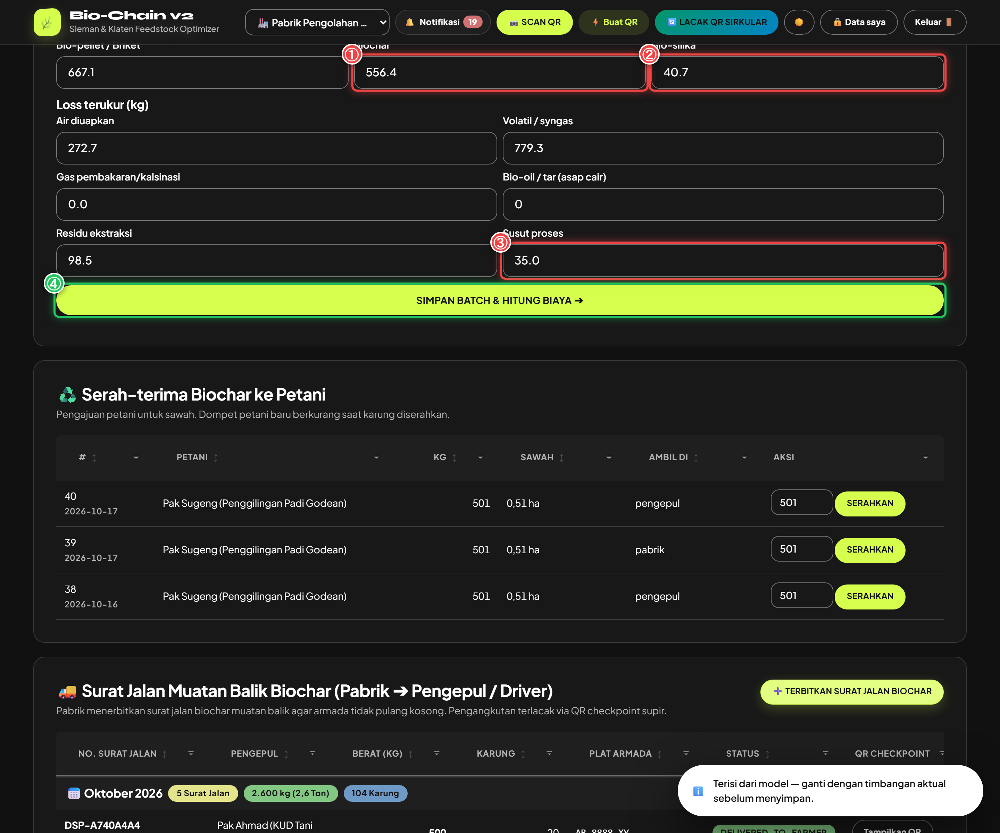
Sebelum bagian yang tampak pada gambar (di atas kartu):
1. Kode batch terisi otomatis (contoh B-20261018-926).
2. Pada daftar Lot biomassa (stok QC) — lot hasil QC gerbang (Layar 6.1b), mis. Lot #46 · sisa 3.000 kg · air
14 % · A — ketik kg yang masuk reaktor di kotak kanan lot, contoh 2450 pada Lot #46. Lot lain dibiarkan 0.
3. Klik Isi dari model (kanan atas kartu). Output dan loss terisi otomatis dari model rendemen, lalu muncul pesan
"Terisi dari model — ganti dengan timbangan aktual sebelum menyimpan." Bila belum ada kg lot, muncul peringatan
"Isi kg dari minimal satu lot dulu."
Contoh hasil model untuk 2.450 kg: Bio-pellet / Briket 667,1 kg; Air diuapkan 272,7; Volatil/syngas 779,3; Gas pembakaran/kalsinasi 0,0; Bio-oil/tar 0; Residu ekstraksi 98,5.
Panduan Aksi Berdasarkan Nomor pada Gambar:
- ① Biochar (kg): ganti angka model (contoh 556.4) dengan timbangan output biochar yang sebenarnya.
- ② Bio-silika (kg): timbangan output bio-silika (contoh 40.7). Kolom Bio-pellet / Briket ada di sebelah kiri.
- ③ Susut proses (kg): contoh 35.0. Periksa juga kolom Loss terukur lainnya: Air diuapkan, Volatil /
syngas, Gas pembakaran/kalsinasi, Bio-oil / tar (asap cair), dan Residu ekstraksi.
- ④ SIMPAN BATCH & HITUNG BIAYA ➔: menyimpan batch, mengurangi sisa lot, dan menampilkan neraca massa serta biaya
per ton produk.
Sebelum menyimpan, isi juga Biaya batch (listrik kWh, tenaga kerja jam, bahan kimia silika, kemasan, jam operasi) dan Jalur bio-silika (dari biochar / abu pembakaran / biomassa langsung).
🔧 Di Balik Layar (Sistem): Isi dari model menghitung MC dan abu rata-rata berbobot dari lot yang dipilih, lalu memanggil
POST /factory/pricing/recommenduntuk rendemen dan loss per kg biomassa; output = rendemen × total kg. kWh bawaan =pabrik.kwh_per_ton_input× ton input. Data batch (manufacturing_batches,batch_outputs,batch_losses,batch_costs) menjadi sumber KPI E2, E3, E4 laporan ESG.
Layar 6.4c — Laporan ESG (E · S · G)
Tujuan Proses & Standar Terkait: Menyusun laporan Lingkungan, Sosial, Tata kelola dari data operasional nyata, mengikuti GRI, GHG Protocol LSR, IFRS S2, dan struktur Lampiran II POJK 51/2017. Emisi bruto, karbon tersimpan, dan emisi dihindari dilaporkan terpisah — emisi dihindari tidak mengurangi emisi bruto.
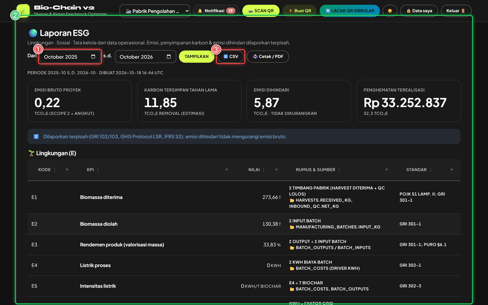
Panduan Aksi Berdasarkan Nomor pada Gambar: - ① Dari … s.d. …: pilih bulan awal (contoh October 2025) dan akhir (October 2026), lalu klik TAMPILKAN. - ② Isi laporan: baris periode & waktu dibuat (Periode 2025-10 s.d. 2026-10 · dibuat 2026-10-18 16:46 UTC), empat kotak ringkasan — Emisi Bruto Proyek 0,22 tCO₂e (Scope 2 + angkut), Karbon Tersimpan Tahan Lama 11,85 tCO₂e (removal, estimasi), Emisi Dihindari 5,87 tCO₂e (tidak dikurangkan), Penghematan Terealisasi Rp 33.252.837 (32,3 tCO₂e) — lalu tabel KPI Lingkungan (E): Kode, KPI, Nilai, Rumus & Sumber (tabel basis data), Standar. Contoh: E1 Biomassa diterima 273,66 t (POJK 51 Lamp. II; GRI 301-1), E2 Biomassa diolah 130,38 t, E3 Rendemen produk 33,83 % (GRI 301-1; Puro §6.1), E4 Listrik proses (GRI 302-1), E5 Intensitas listrik (GRI 302-3). Gulir ke bawah untuk bagian Sosial (S) dan Tata kelola (G). - ③ CSV: unduh laporan sebagai CSV. Cetak / PDF untuk mencetak atau menyimpan PDF.
🔧 Di Balik Layar (Sistem):
app/services/esg.pymengumpulkan batch, rute, retur, pembayaran petani, persetujuan data, dan perubahan parameter pada periode, lalu memanggilengines/green_scorecard.py. Setiap KPI menyebut rumus, tabel sumber, dan rujukan standar. Angka karbon adalah estimasi internal sampai diverifikasi pihak ketiga (Puro / VM0044 / Global C-Sink). Contoh KPI tampil 0 kWh bila biaya listrik batch belum diisi (Layar 6.4b).
Layar 6.4d — Klaim Removal Karbon & Uji Lab (H/C-org, EBC/IBI)
Tujuan Proses & Standar Terkait: Pabrik mengajukan klaim removal karbon dari biochar yang terbukti diserahkan ke lahan petani, dengan hasil laboratorium C-organik dan rasio H/C-org (kriteria stabilitas EBC/IBI dan Puro.earth). Auditor (orang lain, bukan pengaju) memverifikasi. "Terverifikasi" = verifikasi internal, bukan kredit karbon.
Pilih Bulan awal dan Bulan akhir periode klaim (contoh October 2026).
Panduan Aksi Berdasarkan Nomor pada Gambar:
- ① C-organik lab (% bk): kadar karbon organik biochar dari laporan lab (basis kering), contoh 45.
- ② Rasio H/C-org (molar): contoh 0.3. Harus di bawah 0,7; di atas itu klaim diblokir.
- ③ Nama laboratorium: contoh Laboratorium Uji Mutu … (sebaiknya terakreditasi KAN / ISO 17025).
- ④ No. laporan lab: nomor laporan hasil uji (LHU), contoh LHU-2026-10-0142. Unggah Foto/scan laporan lab di
kolom sebelahnya (Choose File).
- ⑤ AJUKAN: klik Pratinjau dulu untuk melihat hitungan removal dan pemblokir (bila ada). Tombol Ajukan baru aktif
setelah pratinjau tanpa pemblokir; mengubah isian apa pun menonaktifkannya lagi (harus pratinjau ulang).
Tabel di bawah menampilkan klaim: Klaim (kode, mis. CLM-2610-014, pabrik, tanggal), Periode, Biochar ke
lahan (mis. 9.161 kg · 32 serah-terima), Removal bersih (mis. 9,632 tCO₂e), Lab (C-org 45 % · H/C 0,3 · nama
lab), dan Status (diajukan, diverifikasi, atau ditolak beserta catatan auditor, mis. "tolak agar kunci
dilepas").
🔧 Di Balik Layar (Sistem):
app/services/carbon_claims.py+engines/green_scorecard.py:Removal = t biochar KERING yang diserahkan ke lahan × F_C × F̄_perm × 44/12, dikurangi potongan ketidakpastian (karbon.uncertainty_deduction_pct). C-org lab menggantikan parameter F_C. F_perm (IPCC 2019 Ap.4) menurut suhu pirolisis: 350–<450 °C 0,65 · 450–<600 °C 0,80 · ≥ 600 °C 0,89; suhu tak tercatat → 0 (tidak boleh diklaim). Batas H/C-org = parameterkarbon.h_corg_max(bawaan 0,7). Anti hitung-ganda: satu serah-terima biochar hanya boleh terkunci di satu klaim aktif, periode klaim aktif tidak boleh tumpang-tindih, dan snapshot perhitungan dibekukan dengan SHA-256. Auditor tidak boleh memutus klaim yang ia ajukan sendiri; klaim ditolak melepas serah-terimanya agar dapat diajukan ulang.
Layar 6.4e — Ledger Abu → Kelompok Tani (Uji Logam Berat)
Tujuan Proses & Standar Terkait: Mencatat abu boiler/pirolisis (silica ash, bottom ash, fly ash) dan menyalurkannya ke kelompok tani hanya bila lulus uji logam berat sesuai Kepmentan No. 261/KPTS/SR.310/M/4/2019. Serah-terima wajib foto dan titik lahan.
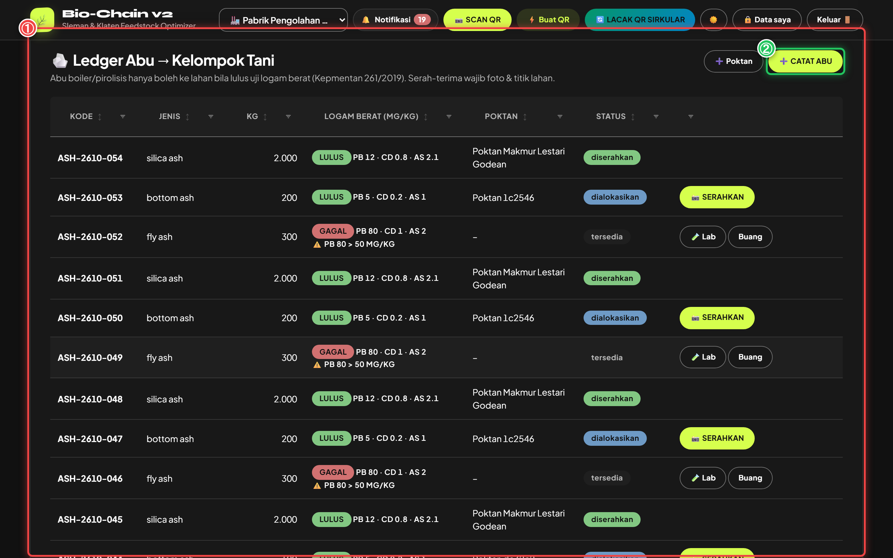
Panduan Aksi Berdasarkan Nomor pada Gambar:
- ① Tabel ledger abu: kolom Kode (mis. ASH-2610-054), Jenis (silica ash / bottom ash / fly ash), KG,
Logam berat (mg/kg) dengan lencana LULUS (mis. Pb 12 · Cd 0,8 · As 2,1) atau GAGAL (mis. Pb 80 → peringatan
PB 80 > 50 mg/kg), Poktan (mis. Poktan Makmur Lestari Godean), dan Status:
- tersedia → tombol Lab (input hasil uji) dan Buang (abu gagal dibuang dengan alasan);
- dialokasikan → tombol SERAHKAN (serah-terima ke poktan dengan foto & titik lahan);
- diserahkan → selesai.
Tombol + Poktan untuk mendaftarkan kelompok tani baru.
- ② + CATAT ABU: isi Jenis abu, Asal biomassa, dan Tonase (kg). Setelah itu klik Lab pada baris
baru untuk mengisi Pb, Cd, As (wajib), Hg, Cr, Ni (opsional), Laboratorium, No. laporan lab (wajib), dan
K₂O abu (opsional, untuk dosis).
🔧 Di Balik Layar (Sistem):
app/routers/multibiomass.py(/factory/ash,/lab,/allocate,/handover,/dispose). Abu lulus hanya bila semua logam yang terukur ≤ batas parameterabu.limit_*_ppm: As 10, Hg 1, Pb 50, Cd 2, Cr 180, Ni 50 mg/kg. Abu gagal tidak dapat dialokasikan ke lahan. Petani dapat melihat abu yang dialokasikan untuknya di menu petani (/farmer/ash).
Layar 6.4f — Serah-terima Biochar ke Petani & Surat Jalan Muatan Balik
Tujuan Proses & Standar Terkait: Menyerahkan biochar dari "dompet biochar" petani (hasil penjualan biomassanya) dan menerbitkan surat jalan muatan balik agar truk yang kembali ke pengepul tidak pulang kosong. Pengangkutan terlacak lewat QR checkpoint sopir (Bab 5).
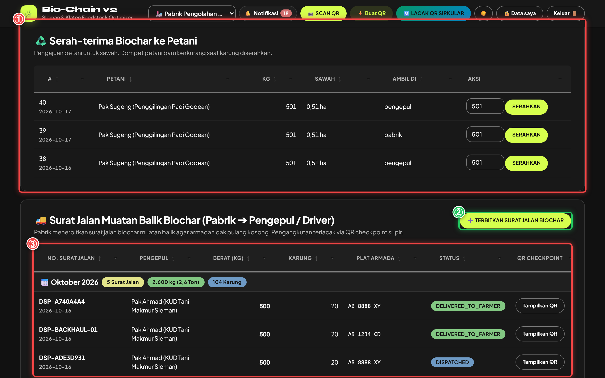
Panduan Aksi Berdasarkan Nomor pada Gambar:
- ① Serah-terima Biochar ke Petani: daftar pengajuan petani untuk sawah — # (mis. 40, 2026-10-17), Petani
(Pak Sugeng (Penggilingan Padi Godean)), KG (501), Sawah (0,51 ha), Ambil di (pengepul atau pabrik).
Pada kolom Aksi, periksa kg yang benar-benar diserahkan (contoh 501) lalu klik SERAHKAN. Dompet biochar
petani baru berkurang saat karung diserahkan.
- ② + TERBITKAN SURAT JALAN BIOCHAR: isi pengepul tujuan, driver/rute, plat armada, berat total, jumlah karung
(opsional) dan instruksi muat. Surat jalan berstatus DISPATCHED dan memiliki QR.
- ③ Daftar surat jalan: dikelompokkan per bulan (contoh Oktober 2026 · 5 Surat Jalan · 2.600 kg (2,6 ton) · 104
karung). Kolom: No. Surat Jalan (mis. DSP-A740A4A4), Pengepul (Pak Ahmad (KUD Tani Makmur Sleman)),
Berat (500 kg), Karung (20), Plat Armada (AB 8888 XY), Status (DISPATCHED → DELIVERED_TO_FARMER
setelah sopir/pengepul memindai serah-terima), dan Tampilkan QR.
🔧 Di Balik Layar (Sistem): Surat jalan dibuat oleh
POST /api/v1/factory/dispatch-biochar(app/routers/factory.py): kodeDSP-xxxxxxxx, token QR acak, volume = berat ÷ 300 kg/m³ (densitas biochar), jumlah karung bawaan = berat ÷ 25 kg. Status berubah menjadiDELIVERED_TO_FARMERmelalui pemindaian QR di aplikasi driver (app/routers/driver.py). Serah-terima ke petani dicatat olehapp/services/circular.py(handover) dan menjadi dasar "biochar ke lahan" pada klaim removal karbon (Layar 6.4d) — satu serah-terima hanya dapat diklaim sekali.
Storyboard & Naskah Video Demonstrasi Bio-Chain
Durasi target: ± 7 menit 45 detik (18 adegan) · Penonton: investor & mitra pendanaan · Bahasa: Bahasa Indonesia lisan
Bahan visual: screenshot beranotasi docs/manual/screenshots/NN_*.png (kotak merah = aksi/input, kotak hijau = hasil, lencana ①②③).
Aturan kejujuran yang dipakai di seluruh naskah (keputusan pemilik produk,
docs/manual/parts/_BRIEF_AGEN.md): aplikasi tidak tersertifikasi ISO 27001 (yang benar: kontrol keamanan yang selaras dengan ISO 27001); grade biomassa A/B/C/D, bukan "A1"; belum ada fitur jadwal/kalibrasi lab bulanan otomatis; kartu "Mesin Rekomendasi Blending Multi-Ramp" memakai heuristik urut-prioritas, bukan HiGHS. HiGHS hanya disebut untuk Prototipe 1 (blend bahan bakar), Prototipe 4 (optimasi produk akhir) danblending.py.
1. Ringkasan Pesan Kunci (5 poin)
- Satu rantai, lima peran. Petani/penggilingan, pengepul, sopir, pabrik, dan auditor bekerja di satu aplikasi PWA yang tetap jalan saat sinyal hilang. Data tersimpan di HP dan terkirim sendiri ketika sinyal kembali.
- Harga ditentukan mutu yang diukur, bukan tawar-menawar. Uji mutu dua tahap (lapangan di pengepul, lalu gerbang/lab di pabrik) menghasilkan grade A/B/C/D, pengali harga, dan refraksi berat dengan rumus terbuka. Petani bisa melihat sendiri selisih taksirannya.
- Setiap kilogram tertelusur. QR lot, resi serah-terima TRX, dan silsilah sirkular (sawah → pengepul → truk → pabrik → abu/biochar → sawah) memakai rantai hash SHA-256, dengan pendekatan chain of custody ISO 22095.
- Logistik dan produksi dioptimasi dengan solver nyata. Rute memakai Clarke-Wright + local search dan dibandingkan dengan Google OR-Tools, dengan kapasitas dalam kg dan m³. Blend bahan bakar biaya terendah memakai LP HiGHS.
- Adil dan terukur dampaknya. Margin pengepul transparan, batas bayar petani maksimal 3 hari (lebih ketat dari target ≤ 14 hari), laporan ESG tCO₂e, klaim removal karbon dengan uji lab (H/C-org), dan abu/biochar yang lolos uji logam berat kembali ke kelompok tani.
2. Tabel Adegan
Kolom "Pesan/standar" juga memuat sumber setiap angka yang diucapkan narasi.
| No | Durasi | Visual (screenshot + gerakan kamera) | Narasi Voice-Over | Teks layar / lower-third | Pesan/standar yang ditonjolkan · sumber angka |
|---|---|---|---|---|---|
| 1 | 0:00–0:20 (20 dtk) | Pembuka: video stok tumpukan sekam di penggilingan (B-roll, bukan dari aplikasi) → potong ke 11_petani_lacak_qr_sirkular.png, zoom pelan ke kotak ③ (enam kartu angka). |
"Setiap musim giling, tumpukan sekam dan limbah biomassa menggunung di penggilingan padi. Sebagian dibakar begitu saja, sebagian dijual murah tanpa catatan. Padahal limbah ini bisa jadi pelet, briket, biochar, dan silika. Masalahnya ada di rantai pasok yang belum tercatat." | "Limbah hari ini, bahan baku besok." | Hook masalah. Angka belum diucapkan. |
| 2 | 0:20–0:35 (15 dtk) | 00_login_pilih_peran.png. Zoom ke ① (lima kartu peran), lalu geser ke ④ tombol "MASUK SEBAGAI PETANI". |
"Bio-Chain menyatukan lima peran dalam satu aplikasi: petani, pengepul, driver, pabrik, dan auditor. Setiap peran hanya melihat menu dan data yang menjadi haknya." | Lower-third: Petani · Pengepul · Driver · Pabrik · Auditor | Multi-persona, RBAC. Lima peran terlihat di ①. |
| 3 | 0:35–1:00 (25 dtk) | 02_petani_lapor_biomassa.png (sekilas) → 03_petani_estimasi_mutu.png. Zoom ke ① "Taksiran kadar air 13.2", lalu ② "Taksiran grade". |
"Pak Sugeng melaporkan stok sekam dari HP-nya. Dia cukup mengisi taksiran kadar air, misalnya 13,2 persen. Aplikasi langsung memperkirakan gradenya: sampai 12 persen grade A, sampai 15 persen B, sampai 18 persen C, di atas itu D. Taksiran ini belum menentukan harga. Harga final tetap menunggu uji kadar air dan timbangan pengepul." | Estimasi mutu: A ≤ 12 % · B ≤ 15 % · C ≤ 18 % · D > 18 % | Ambang grade dari app/static/app.js fungsi gradeFrom. Teks "Tidak memengaruhi harga" ada di gambar 03. |
| 4 | 1:00–1:25 (25 dtk) | 04_petani_jual_langsung_dijemput.png. Zoom ke ① "Jual ke pengepul", lalu ③ "Dijemput pengepul"; pan ke kartu "Saya antar ke gudang (+Rp 80/kg)". |
"Ada dua cara jual. Jual langsung ke pengepul memakai harga acuan otomatis dan bisa dicatat tanpa sinyal. Lalu petani memilih apakah biomassanya dijemput, dengan ongkos angkut ditanggung pengepul, atau diantar sendiri ke gudang dengan premi delapan puluh rupiah per kilogram." | Jual langsung · Dijemput / Diantar (+Rp 80/kg) | Premi antar Rp 80/kg: teks gambar 04 & app.js (premiAntar = 80). |
| 5 | 1:25–1:55 (30 dtk) | 05_petani_bursa_lelang_diantar.png: zoom ke ① "Lelang", lalu ③ "Harga penawaran minimum 480". Potong ke 14_pengepul_bursa_lelang_tawar.png: ① tab "LELANG (65)" → ② kolom tawar "470" → ③ tombol "TAWAR ➔" (crop ke kolom kanan saja). |
"Kalau ingin harga lebih baik, petani bisa membuka lelang dan menetapkan harga minimum, misalnya 480 rupiah per kilo. Pengepul di wilayahnya saling menawar. Tawaran di bawah batas minimum, misalnya 470, otomatis ditolak sistem, jadi petani tidak perlu khawatir dipaksa menerima harga rendah." | Lelang: batas minimum dikunci sistem | Rp 480/kg = nilai contoh di gambar 05; Rp 470 = isian ② gambar 14. Penolakan tawaran: app/services/trade.py ("Tawaran … di bawah harga minimum petani"). Jangan tampilkan kolom kiri tabel gambar 14 (qty 0 / Rp 0, lihat Catatan Produksi). |
| 6 | 1:55–2:25 (30 dtk) | 18_pengepul_uji_cepat_grade.png. Urutan zoom: ① berat 4950 → ② kadar air 13.2 → ③ kontaminan 0.5 → ⑤ tombol "VERIFIKASI MUTU #1159". Hindari close-up pada ④ (lihat Catatan Produksi). |
"Tahap pertama uji mutu dilakukan di lapangan oleh pengepul. Lot Pak Sugeng ditimbang 4.950 kilogram. Kadar air diukur dengan moisture meter, 13,2 persen, dan wajib diisi. Kontaminan 0,5 persen. Kadar abu, zat terbang, dan karbon tetap boleh diisi bila ada hasil lab. Satu tombol verifikasi lalu menerbitkan grade dan harganya." | Uji Mutu Tahap 1 · Lapangan (kadar air wajib) | Angka dari gambar 18. Kolom wajib/opsional: app.js form v-moisture (required), abu/VM/FC "opsional · uji lab". "Uji cepat" adalah prosedur lapangan, tidak ada timer 15 menit di UI. |
| 7 | 2:25–2:55 (30 dtk) | 31_pabrik_gerbang_timbang_qc.png: zoom ke panel "PENGUJIAN MUTU SAMPEL (LAB LAPANGAN)": ④ Kadar air 13.2, lalu pan ke Abu 17.5 · LHV 3450 · Kotoran 0.5. Potong ke 23_pengepul_umpan_balik_qc_pabrik.png, sorot baris SERBUK SENGON (28 % ditolak). Tutup dengan kartu teks ⚠️. |
"Tahap kedua ada di gerbang pabrik. Sampel diuji lagi: kadar air, abu, nilai kalor, dan kotoran. Hasilnya langsung kembali ke pengepul. Lot serbuk sengon berkadar air 28 persen ini ditolak lengkap dengan alasan dan saran penjemuran. Satu hal perlu kami sampaikan terus terang: jadwal uji proksimat bulanan dan kalibrasi alat saat ini masih berupa protokol kerja, belum menjadi fitur otomatis di aplikasi." | Uji Mutu Tahap 2 · Gerbang Pabrik / Lab ⚠️ Jadwal uji lab bulanan & kalibrasi: belum tersedia di aplikasi |
Nilai sampel dari gambar 31 (④ dan kolom di sebelahnya). Penolakan 28 % dari gambar 23. Status kalibrasi: brief aturan 3. Yang sudah ada: kolom proksimat opsional, uji lab gerbang, nomor sertifikat lab KAN/ISO 17025 untuk abu & klaim karbon. |
| 8 | 2:55–3:15 (20 dtk) | 19_pengepul_resi_serah_terima.png: zoom ke teks di bawah ② "4.950 kg · Grade A · Rp 2.186.121". Sisipkan kartu rumus refraksi. Lalu 10_petani_deviasi_refraksi.png (zoom ①). |
"Grade menentukan pengali harga: grade A dikali 1,15, B 1,05, C 1,00. Lot yang melewati batas tolak tidak dibayar penuh. Kalau air atau kotoran melebihi acuan, berat bayar dipotong dengan rumus refraksi yang terbuka. Petani bisa membandingkan taksirannya dengan timbangan nyata di menu Transparansi Deviasi." | Pengali harga A ×1,15 · B ×1,05 · C ×1,00 Rumus: kg × (1 − max(0, kontaminan − toleransi)) × (1 − MC)/(1 − MC acuan) |
Pengali: app/params.py harga_mutu.mult_A/B/C. Batas tolak kadar air 25 % (harga_mutu.moisture_reject). Rumus: app/engines/refraction.py. Rp 2.186.121 dari gambar 19. |
| 9 | 3:15–3:35 (20 dtk) | 14_pengepul_bursa_lelang_tawar.png (crop header): zoom ke tombol "Data saya" dan "Keluar". Lalu 00_login_pilih_peran.png ③ (password tersamar). |
"Soal keamanan, Bio-Chain menerapkan kontrol yang selaras dengan ISO 27001: hak akses per peran, token login dengan perlindungan CSRF, log audit setiap perubahan, penyamaran data pribadi sesuai UU PDP, dan menu Data Saya agar pengguna bisa melihat datanya sendiri. Ini kontrol yang selaras, bukan klaim sertifikasi." | Kontrol keamanan selaras ISO 27001 (belum tersertifikasi) |
Brief aturan 1. Contoh nyata: app/routers/collector.py meminta persetujuan petani ("UU PDP") sebelum data dicatat. |
| 10 | 3:35–4:05 (30 dtk) | 19_pengepul_resi_serah_terima.png → zoom ke ② kode TRX-PTN0006-PGP0003-2610-00178 dan blok "Rantai Ketelusuran Batch". Potong ke 11_petani_lacak_qr_sirkular.png: ① kode lot BIO-F4733DAE-DEDHTO → ② "Tahap 1/6" → pan ke baris tahap di dalam ③ → baris hash "SHA256 Chained Provenance Integrity" di bawah (tanpa lencana). |
"Setelah lot diterima, pengepul menerbitkan resi serah-terima ber-QR dengan nomor TRX. Nomor itu mengikat petani, pengepul, dan lotnya. Siapa pun yang memegang kode lot bisa menelusuri perjalanannya dari sawah ke pengepul, truk, pabrik, sampai biochar kembali ke sawah. Setiap tahap dikunci rantai hash, jadi riwayatnya tidak bisa diubah diam-diam." | Ketertelusuran ISO 22095 · QR lot · Resi TRX · Hash SHA-256 | Kode & tahap dari gambar 19 dan 11. Rujukan ISO 22095: app/services/esg.py (KPI jejak custody). Jangan bacakan angka kartu ③ gambar 11 (lihat Catatan Produksi). |
| 11 | 4:05–4:40 (35 dtk) | 16_pengepul_rute_clarke_wright.png: zoom ke ① "Truk CDD Box (5.000 kg / 30 m³)" → ③ checklist lot → ④ tombol. Potong ke 17_pengepul_rute_hasil_backhaul.png: ① banner "RUTE TRIP-01 LAYAK & SEIMBANG (FEASIBLE)" → ② kartu "25,6 km", "1 jam 29 mnt · 3 titik transit", "3.300 kg · 66 %", "27,5 m³ · 92 %" → ③ peta. |
"Untuk penjemputan, pengepul memilih truk dan lot yang sudah terverifikasi. Mesin rute Clarke-Wright dengan local search menyusun urutan jemput. Kapasitas dihitung dua kali, dalam kilogram dan meter kubik, karena sekam itu ringan tapi makan tempat. Lihat hasilnya: bak sudah terisi 92 persen volume padahal beratnya baru 66 persen. Di sisi pabrik, solver Google OR-Tools menjadi pembanding. Pada 36 titik penggilingan demo, OR-Tools dengan target emisi menempuh 633 kilometer, sedangkan heuristik kami 611 kilometer." | Clarke-Wright + Local Search vs Google OR-Tools · kapasitas kg & m³ 1.000 titik < 0,3 detik |
Angka trip dari gambar 17 (① dan ②). 633 vs 611 km: docs/06_AUDIT_SOP_LAPANGAN_GREEN_LOGISTICS.md §4.1. p95 279 ms untuk 1.000 titik: docs/benchmark_results.md. Engine: app/engines/routing.py, app/engines/routing_ortools.py. Jangan ucapkan "hemat 31 %" (lihat Catatan Produksi). |
| 12 | 4:40–5:00 (20 dtk) | 24_driver_daftar_job_kapasitas.png (zoom ② "Utilisasi bak 36,4 %") → 25_driver_titik_jemput_scan.png (② SCAN QR) → 28_driver_mode_offline.png (① banner "Mode Hemat Sinyal… 1 titik GPS"). |
"Sopir menjalankan rute dari HP. Tombol Scan QR baru muncul setelah ia menekan Mulai Rute, jadi setiap jemputan tercatat dengan GPS. Di sawah tanpa sinyal, aplikasi masuk Mode Hemat Sinyal: data aman di HP dan terkirim otomatis ketika sinyal kembali." | Offline-first · Scan QR per titik · GPS tersimpan walau offline | Logika tombol: app/static/app.js (driverStart, Scan QR hanya bila started). Server: app/routers/driver.py ("Mulai rute terlebih dahulu…"). Banner: app/static/ui-enhance.js. |
| 13 | 5:00–5:30 (30 dtk) | 30_pabrik_ajuan_pengiriman.png: sorot ② "TERIMA" pada ajuan #56 (sekilas ① harga, ③ Tawar, ④ Tolak). → 31_pabrik_gerbang_timbang_qc.png: ① Gross 10950 → ② Tare 6000 → ③ Netto "4.950 kg" → ⑤ "Diterima Sebagian". → 32_pabrik_skema_bayar_invoice.png: ① 4800 / 150 → ② "DP Bertermin" → ③ DP 2000000 → ④ Termin 14 → tombol "PROSES MASUK & TERBITKAN INVOICE". |
"Di pabrik, ajuan pengiriman diterima, lalu truk ditimbang di jembatan timbang: berat kotor dikurangi berat kosong, netto 4.950 kilogram. Petugas QC memilih satu dari tiga keputusan: diterima penuh, diterima sebagian, atau ditolak total. Di contoh ini 4.800 kilogram masuk dan 150 kilogram diretur, alasannya wajib dicatat. Invoice langsung terbit dengan skema tunai, uang muka, atau tempo. Pabrik yang masih punya tagihan tempo jatuh tempo tidak bisa membuka transaksi tempo baru." | QC Gerbang 3 Keputusan · Cash / DP / TOP | Angka dari gambar 31 dan 32. Skema CASH/DP/TOP dan blokir TOP: app/routers/factory_inbound.py. Penimbangan jembatan ada di gerbang pabrik, bukan input sopir (brief aturan 7). Termin 14 hari di gambar 32 adalah termin pabrik → pengepul, bukan SLA bayar petani; jangan dicampur dengan adegan 15. |
| 14 | 5:30–6:00 (30 dtk) | 35_pabrik_blend_highs_biaya_terendah.png: zoom ke judul "LP HiGHS" → ② tabel tujuh komoditas → ④ "OPTIMASI CAMPURAN" → ⑤ kartu "LAYAK · Rp 6.535.324 · Rp 654/kg produk", lalu daftar cek (abu 4,81 % vs maks 6,0). Sekilas 37_pabrik_optimasi_produk_akhir.png ⑤ (empat kartu produk). Potong ke 36_pabrik_blending_multiramp_4produk.png, pan ke empat kartu. |
"Untuk produksi, Prototipe 1 memakai pemrograman linear dengan solver HiGHS. Untuk sepuluh ton pelet, solver memilih campuran termurah dari ampas tebu, sekam, dan tongkol jagung. Biayanya enam koma lima juta rupiah, atau 654 rupiah per kilo produk. Campuran itu tetap memenuhi batas kalori, abu 4,81 persen dari maksimum enam, klorin, dan indeks alkali agar boiler tidak berkerak. Pada uji kinerja, empat bahan selesai dihitung di bawah dua milidetik. Kartu rekomendasi multi-ramp memakai aturan prioritas yang lebih sederhana, untuk membagi stok ramp ke empat produk: biopellet, biochar, bio-silika, dan briket." | HiGHS LP: blend biaya terendah (Prototipe 1) Kartu Multi-Ramp = heuristik urut-prioritas |
Rp 6.535.324, Rp 654/kg, abu 4,81 %, porsi 42,6/14,9/42,6 % dan target 10.000 kg dari gambar 35. HiGHS: app/engines/fuel_blend.py, blending.py, product_optimization.py. 1,89 ms p95 (4 feedstock): docs/benchmark_results.md. Multi-ramp heuristik: app/routers/factory_production.py (brief aturan 6). Status "Terak: WASPADA" di gambar 35 tetap tampil, jadi jangan diklaim "bebas terak". |
| 15 | 6:00–6:30 (30 dtk) | 15_pengepul_margin_kontrak_pabrik.png: zoom ke baris ③ Sekam Padi (① 450, ② 580, margin +Rp 130). Potong ke 22_pengepul_backhaul_piutang.png ② "TOTAL PIUTANG… Rp 45.573.000". Lalu 09_petani_pembayaran_kuitansi_sla.png (kartu "Menunggu dibayar · terlambat > 3 hari"). |
"Pengepul juga dibayar layak. Margin per komoditas terlihat jelas, misalnya sekam dibeli 450 dan dijual ke pabrik 580 rupiah per kilo, margin 130 rupiah. Untuk satu truk lima ton, itu sekitar 650 ribu rupiah per ritase. Piutang ke pabrik dipantau beserta umurnya. Untuk petani, batas pembayaran maksimal tiga hari, lebih ketat dari target empat belas hari. Lewat dari itu, lot otomatis ditandai terlambat di layar petani." | Kompensasi margin pengepul · Bayar petani maks. 3 hari (lebih ketat dari ≤ 14 hari) | 450/580/130 dari gambar 15. Rp 650.000 = 130 × 5.000 kg (hitungan dari catatan gambar 15: "kapasitas angkut truk 5.000 kg"). Rp 45.573.000 dari gambar 22. 3 hari: app/params.py pasar.farmer_payment_due_days (default 3, rentang 0–60). DP maks 30 %: pasar.dp_max_pct. |
| 16 | 6:30–7:00 (30 dtk) | 39_pabrik_laporan_esg.png: zoom ke empat kartu KPI (0,22 · 11,85 · 5,87 · Rp 33.252.837), lalu ke banner biru "Dilaporkan terpisah…". Potong ke 40_pabrik_klaim_karbon_ebc.png: ① C-organik 45 → ② Rasio H/C-org 0.3 → ③ nama lab → ④ No. laporan "LHU-2026-10-0142" → ⑤ "AJUKAN". Crop di atas tabel klaim. |
"Dampak lingkungannya terhitung dari data operasional. Dalam setahun data demo, emisi bruto proyek 0,22 ton CO₂e, karbon yang tersimpan diperkirakan 11,85 ton, dan emisi yang dihindari 5,87 ton. Ketiganya dilaporkan terpisah dan tidak saling mengurangi. Klaim removal karbon hanya bisa diajukan dengan hasil lab, misalnya C-organik 45 persen dan rasio H terhadap C-organik 0,3. Rasio itu harus di bawah 0,7, dan klaim diverifikasi orang lain, bukan pengajunya sendiri." | ESG tCO₂e (GRI · GHG Protocol LSR · IFRS S2) Klaim removal: H/C-org < 0,7 · empat mata |
Angka dari gambar 39 (periode Okt 2025–Okt 2026) dan isian gambar 40. Batas 0,7: app/params.py karbon.h_corg_max (sumber Puro.earth 2025, EBC). Empat mata: app/services/carbon_claims.py. Teks layar 40: "Terverifikasi = verifikasi internal, bukan kredit karbon". |
| 17 | 7:00–7:25 (25 dtk) | 41_pabrik_ledger_abu_kelompok_tani.png: zoom ke baris LULUS "PB 12" lalu baris GAGAL "PB 80 > 50 MG/KG". Potong ke 27_driver_muatan_balik_biochar.png (status DELIVERED_TO_FARMER) → 12_petani_alokasi_abu_evaluasi.png ②. |
"Lingkarannya tertutup di sawah. Abu boiler dan biochar baru boleh dikirim ke kelompok tani kalau lolos uji logam berat sesuai Kepmentan 261 tahun 2019. Abu dengan timbal 80 miligram per kilo, di atas batas 50, otomatis tertahan. Yang lolos dibawa truk sebagai muatan balik, dan petani menilai mutunya langsung dari aplikasi." | Sirkular: abu & biochar kembali ke petani (uji logam berat) | Pb 80 > 50 mg/kg dan Pb 12 dari gambar 41. Aturan blokir: app/services/biomass.py ("Abu belum/tidak lulus uji logam berat…"). |
| 18 | 7:25–7:45 (20 dtk) | 29_pabrik_dashboard_esg_kpi.png (crop ke panel "Skor kesehatan 84") → kembali ke 11_petani_lacak_qr_sirkular.png lebar, fade ke logo. |
"Bio-Chain mengubah limbah menjadi rantai pasok yang terukur, adil, dan tertelusur, dari sawah kembali ke sawah. Kami mengundang Anda menjadi mitra untuk uji lapangan berikutnya di Sleman dan Klaten." | Bio-Chain · Dari sawah, kembali ke sawah CTA: kontak tim / jadwal demo langsung |
Penutup + ajakan. Wilayah "Sleman & Klaten" dari subjudul header aplikasi. |
3. Catatan Produksi
3.1 Screenshot yang perlu diganti sebelum dipakai di video investor
| Gambar | Masalah untuk video | Tindakan |
|---|---|---|
35_pabrik_blend_highs_biaya_terendah.png |
✅ Sudah diganti: hasil kini LAYAK (Rp 6.535.324 · Rp 654/kg · abu 4,81 %). | Siap dipakai (adegan 14). |
37_pabrik_optimasi_produk_akhir.png |
✅ Bug numOrNull sudah diperbaiki; empat kartu produk tampil. Kartu Bio-Pellet dan Briket bergrade "D", dan margin briket negatif (Rp −377.705). |
Boleh dipakai sekilas (adegan 14). Huruf D/S di kartu ini adalah skor kesesuaian produk, bukan grade biomassa, jadi jangan dibacakan. |
40_pabrik_klaim_karbon_ebc.png |
Isian ①–④ sudah terisi. Tabel klaim di bawahnya masih "ditolak" dengan teks uji "TES OTOMATIS", dan layout bergeser ke kiri (kolom kiri terpotong). | Crop di atas tabel, atau bersihkan data uji klaim di DB salinan lalu rekam ulang. |
11_petani_lacak_qr_sirkular.png |
Lot kini BIO-F4733DAE-DEDHTO (Tahap 1/6). Kartu ③ menampilkan input 5.000 kg, timbang pabrik 4.750 kg, dan biochar 1.425 kg seolah final, padahal lot baru di Tahap 1. Label "IPCC Tier 2" juga dipasang pada nilai biochar × 0,85 (app/services/circular_traceability.py). |
Pakai hanya untuk menunjukkan ①, ②, baris tahap, dan hash. Jangan bacakan angka kartu ③. |
17_pengepul_rute_hasil_backhaul.png |
Teks "HEMAT 31 % VS MANUAL" adalah konstanta: baseline = km × 1,45 (app/static/js/modules/route-optimization-modal.js baris 349–351), jadi selalu 31 %. "Biochar muatan balik 0 kg". Deretan alternatif armada ("149 Trip") tampil bertumpuk. |
Narasi tidak menyebut 31 %. Blur atau crop label itu. Untuk adegan backhaul, pakai gambar 27/28. |
18_pengepul_uji_cepat_grade.png |
Preview ④ "Grade A · Skor 91.2 · ×1.10" adalah teks awal statis (app.js baris 2852), tidak sama dengan pengali server (A ×1,15). |
Jangan close-up ④. Angka pengali diambil dari app/params.py. |
14_pengepul_bursa_lelang_tawar.png |
Penomoran sudah benar (① tab, ② tawar 470, ③ TAWAR). Namun kolom jenis biomassa kosong, qty 0, Harga/kg Rp 0, dan "Total: 0 Ton · Est. Nilai: Rp 0". | Crop ke kolom kanan (②③), atau perbaiki data listing lelang lalu rekam ulang. |
20_pengepul_bayar_petani_dp.png |
Tidak ada anotasi. Layar menampilkan daftar "Mbah 185a3…" (nama acak), bukan form DP. | Tidak dipakai di video. |
29_pabrik_dashboard_esg_kpi.png |
KPI ①②③ bernilai "—". | Pakai hanya panel "Skor kesehatan 84" (adegan 18). |
3.2 Merekam ulang adegan dengan scripts/capture_annotated_manual.mts
Petunjuk di header file:
1. Jalankan pada salinan database supaya data demo tidak mengotori biochain.db:
copy biochain.db manual_demo.db (ikut salin -wal/-shm bila ada).
2. set DATABASE_URL=sqlite+aiosqlite:///manual_demo.db && py -m uvicorn app.main:app --port 8765
3. set BIOCHAIN_URL=http://127.0.0.1:8765 && node scripts/capture_annotated_manual.mts [filter]
filter adalah regex awalan nama file, mis. 35_|37_|40_ untuk tiga layar yang perlu diganti.
4. Hasilnya ditulis ke docs/manual/screenshots/*.png + _capture_report.json (daftar selector yang tidak ketemu). Isian contoh per layar diubah di scripts/manual_shots_manifest.mts (field prepare, marks).
5. Viewport: mobile 390×844, desktop 1440×900 (output @2x: 780×1688 dan 2880×1800).
3.3 Merekam video otomatis dengan scripts/record_hd_video.mjs (dibaca, tidak dijalankan)
- Playwright Chromium headless, viewport 1920×1080,
recordVideokevideos/raw/. Skrip menghapus isi folder itu setiap kali dijalankan. Laluffmpeg -c:v libx264 -preset slow -crf 18 -pix_fmt yuv420p -r 30kevideos/video_aplikasi_biochain_hd.mp4. ffmpeg harus ada di PATH. BASE_URLdefaulthttp://127.0.0.1:8000. Atur variabel lingkunganBASE_URLbila server memakai port lain, misalnya salinan DB di 8765.- Skrip punya HUD subtitle, kursor virtual, dan 8 scene (± 4,5 menit).
- ⚠️ Teks HUD di skrip ini melanggar aturan kejujuran, jadi skrip harus direvisi sebelum dipakai: baris ±338 dan ±623–626 ("berstandar ISO 27001", "Kepastian bayar maksimal 14 hari"), ±481–482 ("Uji Cepat 15 Menit", "Uji Lab Proksimat Bulanan Otomatisasi", grade "ISO 17225 dan EBC/IBI" untuk biomassa), ±518–519 ("memangkas biaya BBM solar hingga 32 %", tanpa sumber), ±639–641 ("maksimal 14 hari"). Akibatnya, video
videos/video_aplikasi_biochain_hd.mp4yang sudah ada kemungkinan besar memuat klaim-klaim itu dan tidak boleh dikirim ke investor apa adanya. Ganti teksnya dengan narasi pada tabel di atas. - Skrip memuat password akun demo secara hardcode (fungsi
loginAs, baris ±370/471/490). Ini bertentangan dengan CLAUDE.md §3.3, jadi sebaiknya password dibaca dari variabel lingkungan.
3.4 Format, musik, tempo
- Resolusi master: 1920×1080, 30 fps, H.264 (CRF 18), audio AAC 48 kHz stereo. Siapkan juga versi 1080×1920 (vertikal) untuk media sosial dari adegan 3–6 dan 12.
- Screenshot mobile (780×1688) ditaruh di mockup ponsel di tengah kanvas 16:9 dengan latar gelap (tema Field Noir). Screenshot desktop (2880×1800, 16:10) di-crop ke 16:9 atau di-pan vertikal.
- Gerakan kamera: Ken Burns 100 % → 115–130 % selama 3–5 detik per nomor ①②③. Sinkronkan kemunculan lencana dengan kata kunci narasi. Transisi cut atau cross-dissolve 8–12 frame. Hindari efek berlebihan.
- Musik: instrumental corporate-ambient/lo-fi hangat, 90–100 BPM. Naikkan sedikit (± 110 BPM) di adegan 11 dan 14 (rute & solver), lalu kembali tenang di adegan 17–18. Ducking musik −18 s/d −20 dB di bawah VO. Gunakan musik bebas royalti berlisensi.
- Voice-over: satu narator, tempo ± 130–140 kata/menit, nada tenang dan meyakinkan. Angka diucapkan lengkap ("empat ribu sembilan ratus lima puluh kilogram"). Rekam di ruang kedap (−3 dBFS puncak, −16 LUFS integrated untuk web).
- Lower-third: font Plus Jakarta Sans (sama dengan aplikasi), maksimal 2 baris, tampil ≥ 3 detik. Teks "⚠️ belum tersedia" dan "selaras, bukan sertifikasi" wajib tampil di adegan 7 dan 9.
- Data: semua angka berasal dari data demo database salinan per 18 Okt 2026, bukan hasil operasi komersial. Tambahkan disclaimer kecil di akhir video: "Angka berasal dari data demonstrasi prototipe."
Lampiran: Tabel Troubleshooting
Semua baris di bawah disusun dari perilaku nyata di kode. Pesan yang dikutip "dalam tanda petik" muncul apa adanya di layar. Rujukan file disertakan agar admin/teknisi bisa menelusuri penyebabnya.
| Gejala | Persona | Penyebab | Solusi |
|---|---|---|---|
| Banner kuning di atas layar: "Mode Hemat Sinyal. Data yang Anda simpan aman di HP ini dan terkirim otomatis saat sinyal kembali." disertai jumlah "data antre" / "titik GPS". | Semua (paling sering Petani, Driver) | HP sedang tanpa sinyal (navigator.onLine = false). Laporan, scan, dan titik GPS disimpan di antrean lokal HP (app/static/ui-enhance.js, app.js outbox). |
Lanjutkan bekerja seperti biasa. Data tidak hilang. Begitu sinyal kembali, antrean dikirim otomatis. Jangan hapus data browser atau cache aplikasi selama masih ada antrean. |
| Banner biru: "Sinyal tersedia — N data antre / N titik GPS menunggu dikirim." dengan tombol "Kirim sekarang". | Semua | Sinyal sudah kembali, tetapi antrean belum terkirim. Pengiriman otomatis sedang menunggu giliran, atau server sempat sibuk (kode 408/425/429/5xx dianggap "coba lagi nanti", bukan dibuang). | Tekan Kirim sekarang. Bila banner tidak hilang, tunggu beberapa menit lalu coba lagi. Data tetap aman di HP. |
| Banner merah: "Sesi berakhir. Antrean data tetap aman — masuk lagi untuk mengirimnya." atau toast "Sesi berakhir, silakan login kembali." | Semua | Token login kedaluwarsa (JWT_EXPIRE_MINUTES = 480 menit / 8 jam, app/config.py), password diganti di perangkat lain, atau server menjawab 401. |
Login ulang dengan akun yang sama. Antrean offline lalu terkirim otomatis memakai token baru. |
| Di HP bersama, data offline milik pengguna lain tidak ikut terkirim. | Petani/Driver yang berbagi HP | Data antrean terikat pada pemiliknya (perbaikan F18). Data itu hanya bisa dikirim dengan token pemilik. | Minta pemilik data login di HP itu sampai antreannya terkirim, lalu keluar. |
| Tombol "Scan QR 📷" tidak muncul di daftar titik jemput. | Driver | Rute belum dimulai. Tombol Scan QR dan "Gagal ❌" hanya tampil bila status rute BERJALAN (app.js, render driver-actions). Server juga menolak pickup sebelum rute dimulai: "Mulai rute terlebih dahulu sebelum konfirmasi pickup." (app/routers/driver.py). |
Tekan "▶️ Mulai Rute (aktifkan GPS)", izinkan lokasi, lalu tombol Scan QR akan muncul di tiap stop. |
| Tombol "🏁 Selesaikan Rute" abu-abu, atau muncul pesan "Masih ada stop yang belum di-scan atau dilaporkan gagal". | Driver | Masih ada stop berstatus pending (app/routers/driver.py). |
Untuk setiap stop yang tersisa: scan QR-nya, atau pilih alasan (mis. "Biomassa tidak ada") lalu tekan Gagal ❌. Setelah itu rute bisa diselesaikan. |
| Hasil scan: "QR tidak sah: tanda tangan tidak cocok (QR palsu atau salah ketik). Scan ulang QR asli." atau "QR token tidak valid atau tidak terdaftar di sistem." | Driver, Pengepul | QR bukan terbitan Bio-Chain, rusak/terpotong, atau kode diketik salah. Tanda tangan QR diverifikasi server (app/routers/driver.py). |
Scan ulang QR asli dari resi/HP petani dengan pencahayaan cukup. Bila tetap gagal, laporkan stop sebagai gagal dan hubungi pengepul. |
| Kotak kamera: "Kamera tidak dapat diakses (…). Pastikan izin kamera diizinkan, atau gunakan opsi Upload Foto QR / input manual di bawah." | Driver, Pengepul, Petani | Izin kamera ditolak di browser/HP, kamera sedang dipakai aplikasi lain, atau halaman tidak dibuka lewat HTTPS (app/static/app.js). |
Buka pengaturan situs di browser lalu izinkan Kamera. Tutup aplikasi lain yang memakai kamera. Sebagai cadangan, pakai Upload Foto QR atau ketik kode manual. |
| Toast "GPS tidak tersedia di HP ini." atau label "Lokasi tidak didapat — boleh dilewati."; kartu "Jarak GPS terekam" tetap 0 km. | Petani, Driver | Izin lokasi ditolak, GPS HP mati, atau sinyal satelit lemah (dalam gudang). Batas waktu ambil lokasi hanya 2–3 detik (field-ops.js, app.js). |
Nyalakan Lokasi/GPS dan izinkan untuk situs Bio-Chain. Ambil lokasi di area terbuka. Untuk form petani, lokasi boleh dilewati. Untuk driver, mulai ulang rute setelah GPS aktif agar jejak terekam. |
| Pengepul mendapat pesan "Tawaran Rp…/kg di bawah harga minimum petani (Rp…/kg, skema …)." | Pengepul | Di mode Lelang, petani menetapkan harga minimum (contoh di layar: Rp 480/kg). Tawaran di bawah batas itu otomatis ditolak (app/services/trade.py). Pesan "Petani tidak membuka skema … untuk listing ini." berarti skema jemput/antar yang dipilih tidak dibuka petani. |
Naikkan tawaran minimal sama dengan harga minimum petani, dan pilih skema penyerahan yang dibuka petani. Tawaran baru otomatis menggantikan tawaran aktif sebelumnya. |
| "Jumlah tawaran melebihi sisa stok (… kg)." | Pengepul | Sebagian stok listing sudah terikat tawaran/pembelian lain (app/services/trade.py). |
Kurangi jumlah tawaran sampai tidak melebihi sisa stok yang ditampilkan. |
| Saat lapor biomassa muncul catatan "Biomassa basah (>18%) biasanya ditolak atau dibeli murah untuk dikeringkan. Jemur dulu bila bisa." | Petani | Taksiran kadar air > 18 % masuk estimasi Grade D (gradeFrom di app.js: ≤ 12 A, ≤ 15 B, ≤ 18 C, > 18 D). Di timbangan pengepul, lot dengan kadar air > 25 % (harga_mutu.moisture_reject) atau kontaminan > 10 % ditandai TOLAK (app/engines/quality.py). Di pabrik, refraksi memotong berat bayar (app/engines/refraction.py). |
Jemur biomassa sampai kadar air di bawah ± 15 % sebelum dijual. Ukur dengan moisture meter. Taksiran petani tidak memengaruhi harga final, yang menentukan adalah uji pengepul. |
| Berat bayar di kuitansi lebih kecil dari berat timbang. | Petani, Pengepul | Refraksi: kg_bayar = kg × (1 − max(0, kontaminan − toleransi)) × (1 − MC)/(1 − MC_acuan). Berat dipotong bila air/kotoran melebihi acuan komoditas. Tidak ada bonus bila lebih kering dari acuan (app/engines/refraction.py). |
Buka menu Transparansi Deviasi & Refraksi (petani) untuk melihat perbandingan taksiran vs timbangan dan alasannya. Turunkan kadar air dan bersihkan kotoran pada pengiriman berikutnya. |
| Upload foto lama dan muncul label "⏳ Mengompres foto via Canvas (maks 300KB)…". | Petani, Pengepul | Foto otomatis dikompres ≤ 300 KB sebelum diunggah agar hemat kuota (app.js, ui-enhance.js). Server menolak file > 5 MB atau format selain .jpg .jpeg .png .webp .pdf ("Format file '…' tidak diizinkan…", app/routers/uploads.py). |
Tunggu sampai proses kompres selesai sebelum menekan Simpan. Pakai foto JPG/PNG dari kamera HP. Jangan kirim file video/HEIC. |
| Tanggal kejadian di laporan bulanan tidak sama dengan jam di HP. | Petani, Driver | Jam/tanggal HP salah. Waktu perangkat yang lebih dari CLIENT_CLOCK_MAX_PAST_HOURS (72 jam) ke belakang atau lebih dari CLIENT_CLOCK_MAX_FUTURE_MINUTES (10 menit) ke depan tidak dipakai. Sistem memakai jam server dan mencatat keduanya (app/services/custody.py, app/config.py). |
Aktifkan tanggal & jam otomatis di pengaturan HP. Kirim antrean offline sesegera mungkin, paling lambat 3 hari. Data tetap diterima, hanya stempel waktunya memakai jam server. |
| Pabrik memilih skema TOP dan mendapat pesan "Transaksi ditolak! Pabrik memiliki tagihan TOP yang telah jatuh tempo belum dilunasi…" | Pabrik | Masih ada invoice tempo (TOP) yang lewat jatuh tempo (app/routers/factory_inbound.py). |
Lunasi tagihan overdue lebih dulu, atau gunakan skema Cash / DP untuk transaksi ini. |
| "DP maksimal 30% dari perkiraan nilai lot (≈ Rp…)." / "DP hanya untuk lot yang belum diangkut…" | Pengepul | Uang muka dibatasi pasar.dp_max_pct (default 30 %) dan hanya untuk lot yang Anda ikat dan belum diangkut (app/services/payments.py). |
Isi nominal DP ≤ batas yang ditampilkan. Untuk lot yang sudah diangkut, lakukan pelunasan biasa. |
| Lot petani muncul berlabel terlambat di menu "Pembayaran & Kuitansi Saya" (contoh: "54 terlambat > 3 hari"). | Petani, Pengepul | Lot terverifikasi belum dibayar melewati pasar.farmer_payment_due_days (default 3 hari, rentang 0–60, app/params.py). |
Pengepul segera melunasi dan menerbitkan kuitansi BYR. Petani dapat menghubungi pengepul dengan menunjukkan nomor QR/kuitansi. |
| "Muatan melebihi kapasitas truk: volume … m³ > bak … m³ …; berat … kg > muatan maks … kg." | Pabrik, Pengepul | Lot yang dipilih melebihi kapasitas volume atau berat truk. Sekam biasanya penuh volume lebih dulu (app/routers/factory.py). |
Kurangi checklist lot, pecah menjadi beberapa rute, atau gunakan Dispatch Otomatis (OR-Tools). |
| "Tanyakan dulu persetujuan petani bahwa datanya dicatat (UU PDP)." | Pengepul | Pencatatan petani baru (mis. "Tanpa HP") wajib menyertakan persetujuan subjek data (app/routers/collector.py). |
Jelaskan ke petani bahwa datanya dicatat, centang persetujuan, lalu simpan ulang. |
| "Abu belum/tidak lulus uji logam berat — tidak boleh dialokasikan ke lahan petani." Di ledger abu terlihat "GAGAL · PB 80 > 50 MG/KG". | Pabrik | Hasil lab logam berat melewati ambang (Kepmentan 261/2019) atau belum diisi (app/services/biomass.py). Status lulus juga wajib menyertakan nomor laporan lab. |
Isi hasil lab (tombol Lab) dengan nomor laporan. Abu yang gagal tidak dikirim ke poktan; pilih Buang / penanganan lain. |
| Klaim removal karbon tidak bisa diajukan ("Klaim belum bisa diajukan: …H/C-org lab … > batas 0,7…") atau verifikasi ditolak "Empat mata: pengaju tidak boleh memverifikasi klaimnya sendiri." | Pabrik, Auditor | H/C-org lab di atas karbon.h_corg_max (0,7), periode tumpang-tindih dengan klaim lain, atau verifikator sama dengan pengaju (app/services/carbon_claims.py). |
Lengkapi hasil lab (C-organik, H/C-org, nama lab, nomor laporan). Pilih periode yang tidak bertumpuk. Minta auditor lain memverifikasi. |
| "Username/nomor telepon atau password salah" atau "Terlalu banyak permintaan. Coba lagi nanti." | Semua | Kredensial salah. Bila percobaan login dari satu IP melebihi LOGIN_RATE_LIMIT (10 per 60 detik), server membalas 429 (app/middleware/rate_limiter.py). |
Periksa kembali username/nomor HP dan password (ikon 👁 untuk melihat ketikan). Tunggu ± 1 menit sebelum mencoba lagi. Lupa password: hubungi admin. |
Lampiran: Akun Demo
Akun di bawah dibuat oleh app/seed.py (DEMO_ACCOUNTS) dan hanya tersedia bila server berjalan dengan DEMO_MODE=True.
Di halaman login, daftar ini dilipat di "Akun uji coba (mode demo)", yang mengisi kolom login otomatis. Pada server produksi
(DEMO_MODE=False, wajib bila DEBUG=False), endpoint /api/v1/auth/demo-accounts membalas 404 dan daftar ini tidak muncul.
Password sengaja tidak dicantumkan di dokumen ini. Mintalah ke admin sistem atau gunakan menu "Akun uji coba" di lingkungan demo.
| Username | Nama tampilan | Peran (label di aplikasi) | Fungsi utama |
|---|---|---|---|
petani_sugeng |
Pak Sugeng (Penggilingan Padi Godean) | Petani / Penggilingan | Lapor stok biomassa, jual langsung/lelang, lacak QR, pembayaran |
petani_sari |
Bu Sari (Penggilingan Padi Moyudan) | Petani / Penggilingan | Pemasok biomassa (akun petani kedua untuk uji lelang) |
pengepul_sleman |
Pak Ahmad (KUD Tani Makmur Sleman) | Pengepul / Hub KUD | Uji mutu lapangan, grading, rute jemput, bayar petani |
sopir_budi |
Budi Santoso (Driver Armada 01) | Driver Armada Truk | Jalankan rute, scan QR titik jemput, muatan balik biochar |
pabrik_indmira |
Pabrik Pengolahan Multi-Biomassa (PT Indmira) | Pabrik Multi-Biomassa | Gerbang timbang & QC, invoice, blending, ESG, klaim karbon, ledger abu |
auditor_esg |
Auditor Rantai Pasok & ESG | Auditor (Read-only) | Audit jejak timbangan, susut, klaim; verifikasi empat mata, tanpa hak ubah |
admin |
Administrator Bio-Chain | System Admin | Kendali sistem, pengguna, parameter (masuk via "Masuk sebagai Administrator") |